# Multiple linear regression
## first remove observations with NA values
newAirquality = airquality[complete.cases(airquality),]
summary(newAirquality) Ozone Solar.R Wind Temp
Min. : 1.0 Min. : 7.0 Min. : 2.30 Min. :57.00
1st Qu.: 18.0 1st Qu.:113.5 1st Qu.: 7.40 1st Qu.:71.00
Median : 31.0 Median :207.0 Median : 9.70 Median :79.00
Mean : 42.1 Mean :184.8 Mean : 9.94 Mean :77.79
3rd Qu.: 62.0 3rd Qu.:255.5 3rd Qu.:11.50 3rd Qu.:84.50
Max. :168.0 Max. :334.0 Max. :20.70 Max. :97.00
Month Day
Min. :5.000 Min. : 1.00
1st Qu.:6.000 1st Qu.: 9.00
Median :7.000 Median :16.00
Mean :7.216 Mean :15.95
3rd Qu.:9.000 3rd Qu.:22.50
Max. :9.000 Max. :31.00
Call:
lm(formula = Ozone ~ Temp, data = newAirquality)
Residuals:
Min 1Q Median 3Q Max
-40.922 -17.459 -0.874 10.444 118.078
Coefficients:
Estimate Std. Error t value Pr(>|t|)
(Intercept) -147.6461 18.7553 -7.872 2.76e-12 ***
Temp 2.4391 0.2393 10.192 < 2e-16 ***
---
Signif. codes: 0 '***' 0.001 '**' 0.01 '*' 0.05 '.' 0.1 ' ' 1
Residual standard error: 23.92 on 109 degrees of freedom
Multiple R-squared: 0.488, Adjusted R-squared: 0.4833
F-statistic: 103.9 on 1 and 109 DF, p-value: < 2.2e-16plot(m0)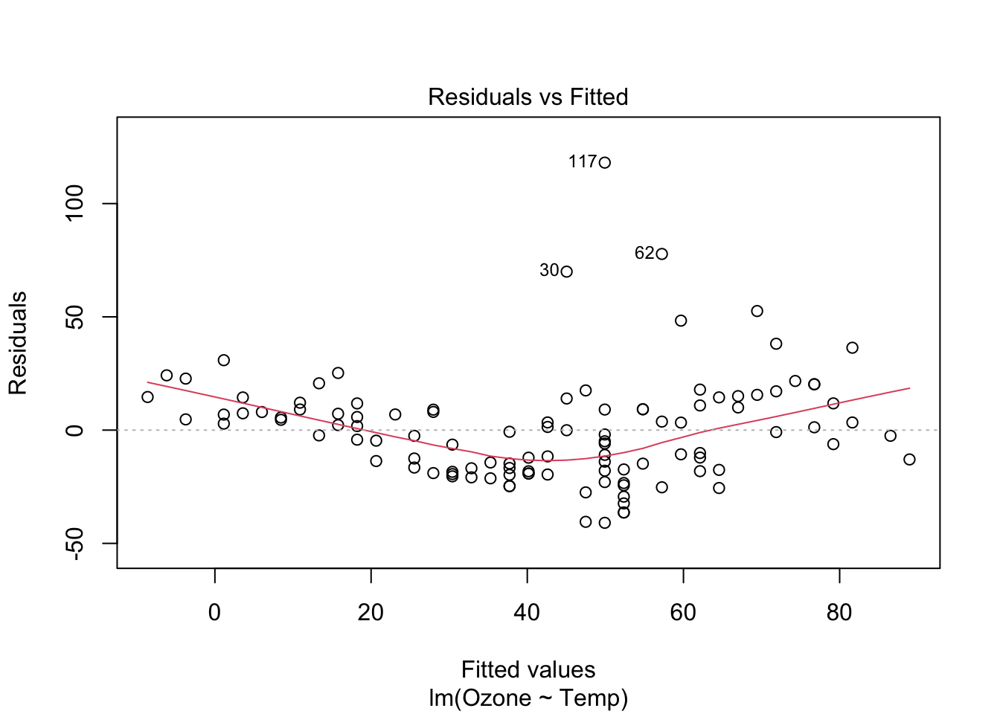
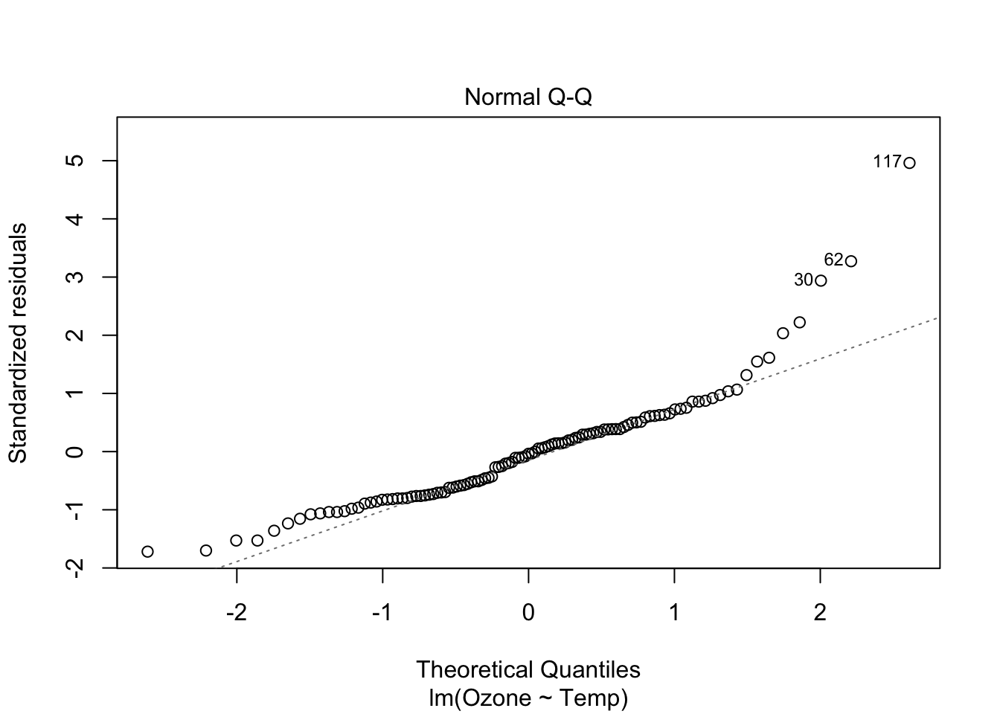
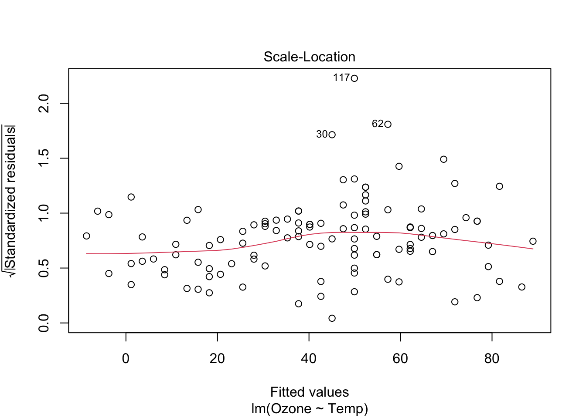
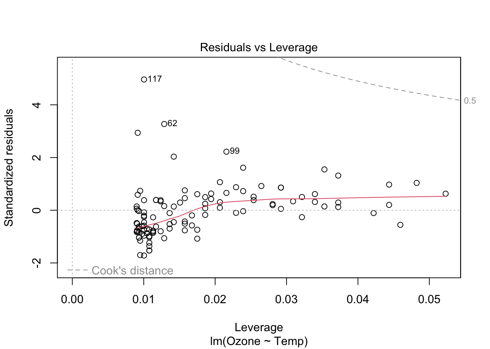
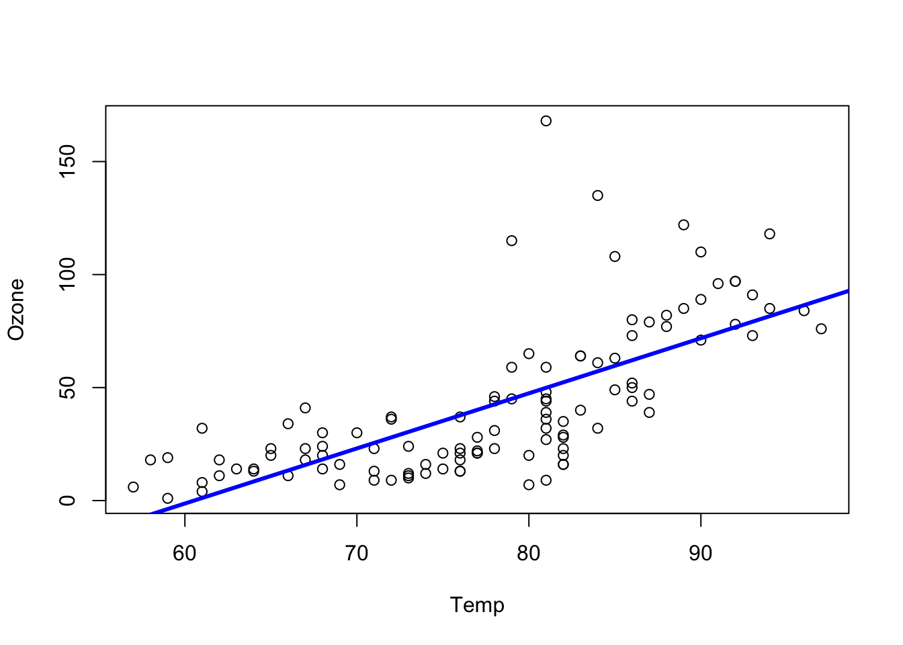
# Today: multiple linear regression
m1 = lm(Ozone ~ Temp + Wind , data = newAirquality)
# have a look at the residuals:
op <- par(mfrow = c(2,2))
plot(m1)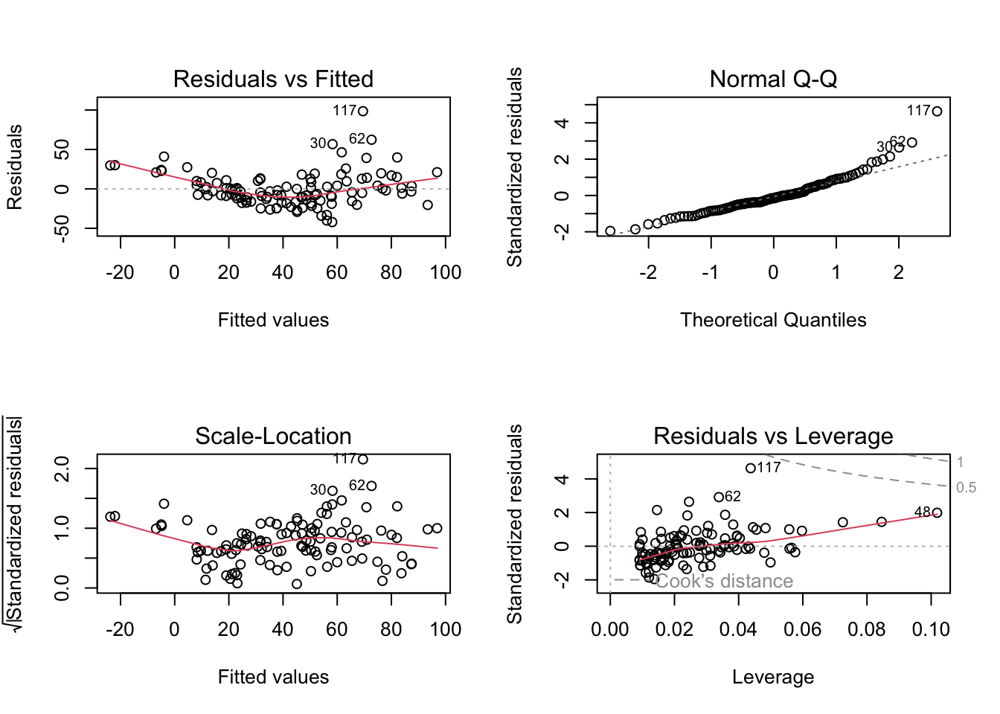
Call:
lm(formula = Ozone ~ Temp + Wind, data = newAirquality)
Residuals:
Min 1Q Median 3Q Max
-42.156 -13.216 -3.123 10.598 98.492
Coefficients:
Estimate Std. Error t value Pr(>|t|)
(Intercept) -67.3220 23.6210 -2.850 0.00524 **
Temp 1.8276 0.2506 7.294 5.29e-11 ***
Wind -3.2948 0.6711 -4.909 3.26e-06 ***
---
Signif. codes: 0 '***' 0.001 '**' 0.01 '*' 0.05 '.' 0.1 ' ' 1
Residual standard error: 21.73 on 108 degrees of freedom
Multiple R-squared: 0.5814, Adjusted R-squared: 0.5736
F-statistic: 74.99 on 2 and 108 DF, p-value: < 2.2e-16Loading required package: carDatalattice theme set by effectsTheme()
See ?effectsTheme for details.plot(allEffects(m1))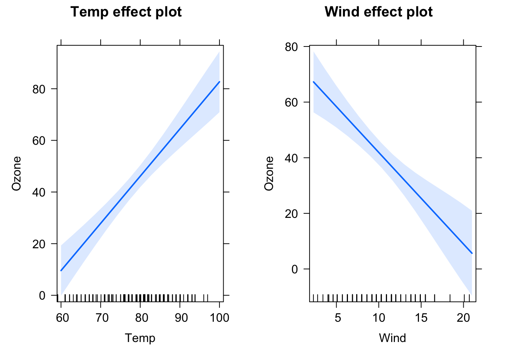
# Include interaction
m2 = lm(Ozone ~ scale(Wind)* scale(Temp) , data = newAirquality)
# if including interactions, always scale your predictor variables!
# scale: subtracts the mean and divides by standard deviation
summary(m2)
Call:
lm(formula = Ozone ~ scale(Wind) * scale(Temp), data = newAirquality)
Residuals:
Min 1Q Median 3Q Max
-40.930 -11.193 -3.034 8.193 97.456
Coefficients:
Estimate Std. Error t value Pr(>|t|)
(Intercept) 38.469 2.137 18.002 < 2e-16 ***
scale(Wind) -11.758 2.238 -5.253 7.68e-07 ***
scale(Temp) 17.544 2.239 7.837 3.62e-12 ***
scale(Wind):scale(Temp) -7.367 1.848 -3.987 0.000123 ***
---
Signif. codes: 0 '***' 0.001 '**' 0.01 '*' 0.05 '.' 0.1 ' ' 1
Residual standard error: 20.37 on 107 degrees of freedom
Multiple R-squared: 0.6355, Adjusted R-squared: 0.6253
F-statistic: 62.19 on 3 and 107 DF, p-value: < 2.2e-16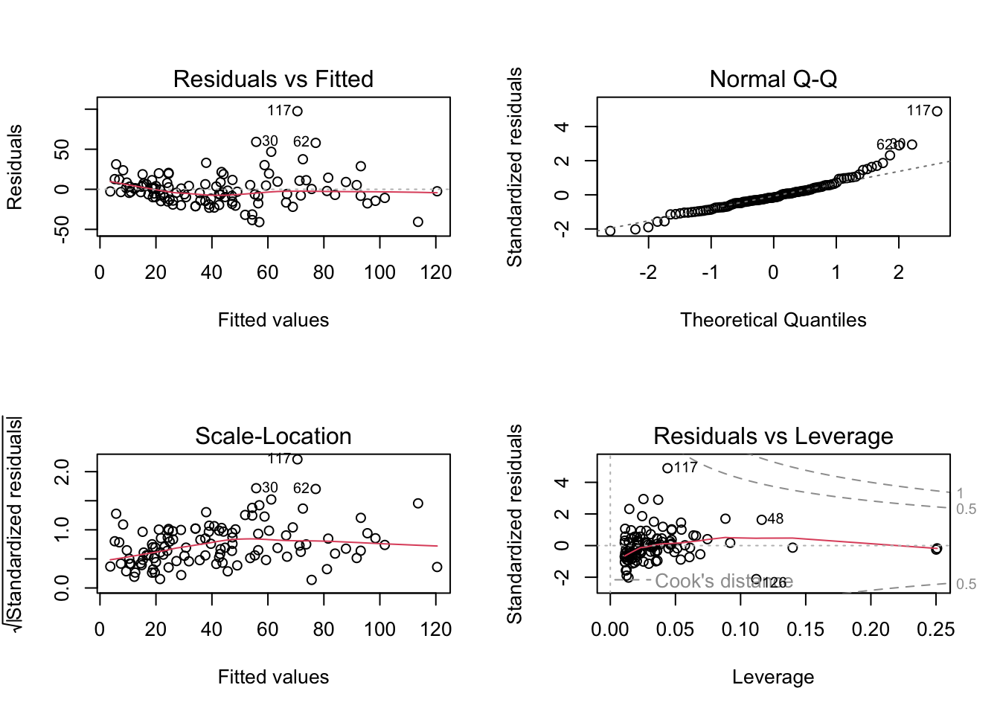
par(op)
plot(allEffects(m2))Warning in Analyze.model(focal.predictors, mod, xlevels, default.levels, : the
predictors scale(Wind), scale(Temp) are one-column matrices that were converted
to vectors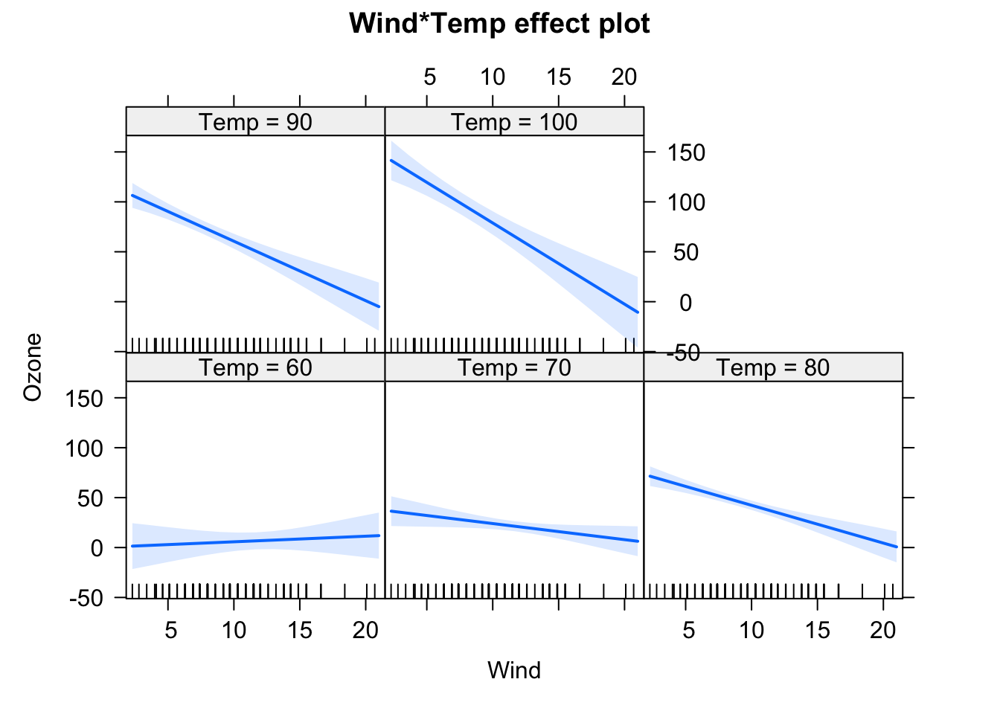
# transform response values
m3 = lm(sqrt(Ozone) ~ scale(Wind) * scale(Temp) , data = newAirquality)
summary(m3)
Call:
lm(formula = sqrt(Ozone) ~ scale(Wind) * scale(Temp), data = newAirquality)
Residuals:
Min 1Q Median 3Q Max
-3.1323 -0.9484 -0.0814 0.8196 4.9871
Coefficients:
Estimate Std. Error t value Pr(>|t|)
(Intercept) 5.8135 0.1507 38.569 < 2e-16 ***
scale(Wind) -0.7726 0.1579 -4.893 3.52e-06 ***
scale(Temp) 1.4441 0.1579 9.146 4.36e-15 ***
scale(Wind):scale(Temp) -0.4119 0.1303 -3.161 0.00205 **
---
Signif. codes: 0 '***' 0.001 '**' 0.01 '*' 0.05 '.' 0.1 ' ' 1
Residual standard error: 1.437 on 107 degrees of freedom
Multiple R-squared: 0.6628, Adjusted R-squared: 0.6534
F-statistic: 70.12 on 3 and 107 DF, p-value: < 2.2e-16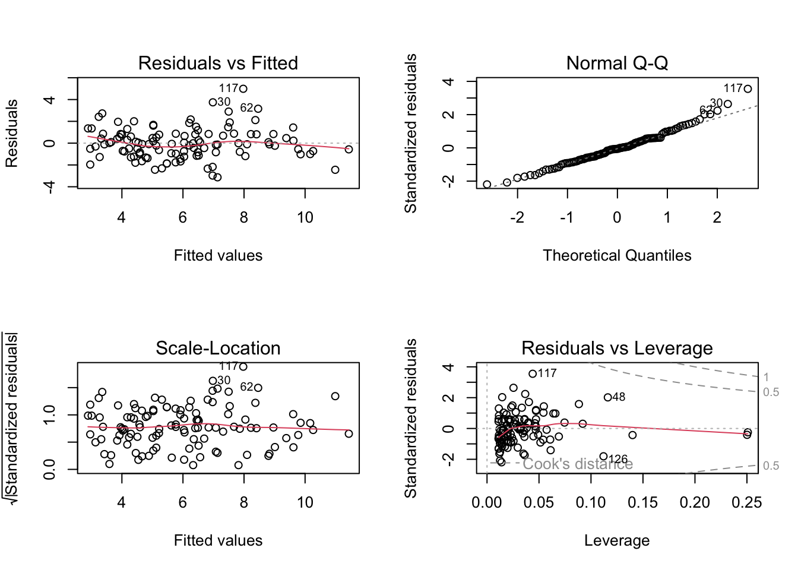
par(op) # a little bit better
# now plot and interpret the results
plot(allEffects(m3))Warning in Analyze.model(focal.predictors, mod, xlevels, default.levels, : the
predictors scale(Wind), scale(Temp) are one-column matrices that were converted
to vectors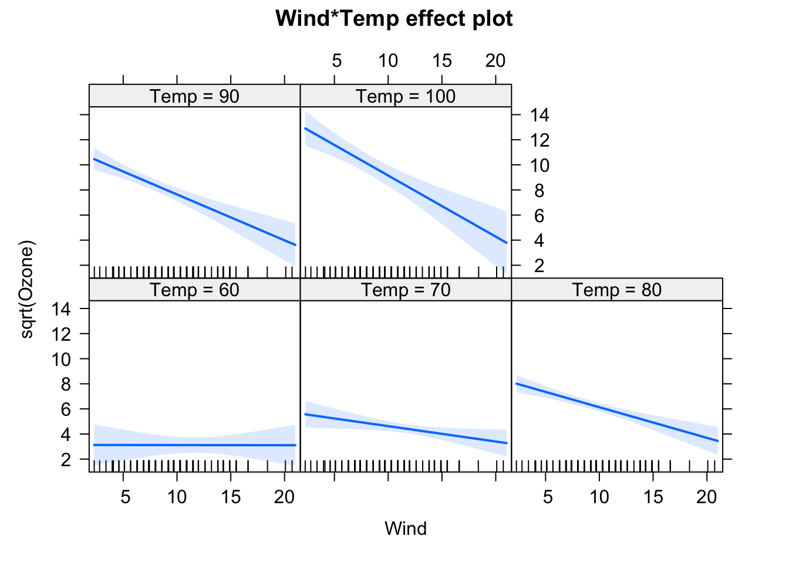
summary(m3)
Call:
lm(formula = sqrt(Ozone) ~ scale(Wind) * scale(Temp), data = newAirquality)
Residuals:
Min 1Q Median 3Q Max
-3.1323 -0.9484 -0.0814 0.8196 4.9871
Coefficients:
Estimate Std. Error t value Pr(>|t|)
(Intercept) 5.8135 0.1507 38.569 < 2e-16 ***
scale(Wind) -0.7726 0.1579 -4.893 3.52e-06 ***
scale(Temp) 1.4441 0.1579 9.146 4.36e-15 ***
scale(Wind):scale(Temp) -0.4119 0.1303 -3.161 0.00205 **
---
Signif. codes: 0 '***' 0.001 '**' 0.01 '*' 0.05 '.' 0.1 ' ' 1
Residual standard error: 1.437 on 107 degrees of freedom
Multiple R-squared: 0.6628, Adjusted R-squared: 0.6534
F-statistic: 70.12 on 3 and 107 DF, p-value: < 2.2e-16## Omitted variable bias
both = lm(Ozone ~ Wind + Temp, newAirquality)
wind = lm(Ozone ~ Wind , newAirquality)
temp = lm(Ozone ~ Temp, newAirquality)
summary(both)
Call:
lm(formula = Ozone ~ Wind + Temp, data = newAirquality)
Residuals:
Min 1Q Median 3Q Max
-42.156 -13.216 -3.123 10.598 98.492
Coefficients:
Estimate Std. Error t value Pr(>|t|)
(Intercept) -67.3220 23.6210 -2.850 0.00524 **
Wind -3.2948 0.6711 -4.909 3.26e-06 ***
Temp 1.8276 0.2506 7.294 5.29e-11 ***
---
Signif. codes: 0 '***' 0.001 '**' 0.01 '*' 0.05 '.' 0.1 ' ' 1
Residual standard error: 21.73 on 108 degrees of freedom
Multiple R-squared: 0.5814, Adjusted R-squared: 0.5736
F-statistic: 74.99 on 2 and 108 DF, p-value: < 2.2e-16summary(wind)
Call:
lm(formula = Ozone ~ Wind, data = newAirquality)
Residuals:
Min 1Q Median 3Q Max
-43.513 -18.597 -5.035 15.814 88.437
Coefficients:
Estimate Std. Error t value Pr(>|t|)
(Intercept) 99.0413 7.4724 13.25 < 2e-16 ***
Wind -5.7288 0.7082 -8.09 9.09e-13 ***
---
Signif. codes: 0 '***' 0.001 '**' 0.01 '*' 0.05 '.' 0.1 ' ' 1
Residual standard error: 26.42 on 109 degrees of freedom
Multiple R-squared: 0.3752, Adjusted R-squared: 0.3694
F-statistic: 65.44 on 1 and 109 DF, p-value: 9.089e-13slopes <- data.frame(
predictor = c("Wind", "Temp"),
both.pred = round(coef(both)[2:3], digits = 2),
only.wind = c(round(coef(wind)[2], digits = 2), "NA"),
only.temp = c("NA", round(coef(temp)[2], digits = 2))
)
slopes predictor both.pred only.wind only.temp
Wind Wind -3.29 -5.73 NA
Temp Temp 1.83 NA 2.44## Making everything more complex
str(newAirquality)'data.frame': 111 obs. of 6 variables:
$ Ozone : int 41 36 12 18 23 19 8 16 11 14 ...
$ Solar.R: int 190 118 149 313 299 99 19 256 290 274 ...
$ Wind : num 7.4 8 12.6 11.5 8.6 13.8 20.1 9.7 9.2 10.9 ...
$ Temp : int 67 72 74 62 65 59 61 69 66 68 ...
$ Month : int 5 5 5 5 5 5 5 5 5 5 ...
$ Day : int 1 2 3 4 7 8 9 12 13 14 ...# How does everything change, if we have factorial predictors?
newAirquality$MonthFactor = as.factor(newAirquality$Month)
m4 = lm(sqrt(Ozone) ~ MonthFactor + scale(Wind) * scale(Temp) * scale(Solar.R) ,
data = newAirquality)
summary(m4)
Call:
lm(formula = sqrt(Ozone) ~ MonthFactor + scale(Wind) * scale(Temp) *
scale(Solar.R), data = newAirquality)
Residuals:
Min 1Q Median 3Q Max
-2.6096 -0.8869 -0.2067 0.7647 4.3191
Coefficients:
Estimate Std. Error t value Pr(>|t|)
(Intercept) 6.12172 0.37148 16.479 < 2e-16 ***
MonthFactor6 -0.54487 0.60633 -0.899 0.371025
MonthFactor7 -0.37571 0.51347 -0.732 0.466072
MonthFactor8 -0.03770 0.52839 -0.071 0.943262
MonthFactor9 -0.74343 0.43308 -1.717 0.089179 .
scale(Wind) -0.76983 0.16456 -4.678 9.18e-06 ***
scale(Temp) 1.35350 0.20937 6.465 3.86e-09 ***
scale(Solar.R) 0.65689 0.16212 4.052 0.000101 ***
scale(Wind):scale(Temp) -0.30440 0.14655 -2.077 0.040379 *
scale(Wind):scale(Solar.R) -0.07695 0.17222 -0.447 0.655999
scale(Temp):scale(Solar.R) 0.22985 0.15451 1.488 0.140040
scale(Wind):scale(Temp):scale(Solar.R) 0.03202 0.15179 0.211 0.833366
---
Signif. codes: 0 '***' 0.001 '**' 0.01 '*' 0.05 '.' 0.1 ' ' 1
Residual standard error: 1.328 on 99 degrees of freedom
Multiple R-squared: 0.7335, Adjusted R-squared: 0.7039
F-statistic: 24.78 on 11 and 99 DF, p-value: < 2.2e-16m5 = lm(sqrt(Ozone) ~ MonthFactor + scale(Wind) + scale(Temp) + scale(Solar.R)
+ scale(Wind):scale(Temp)
+ scale(Wind):scale(Solar.R)
+ scale(Temp):scale(Solar.R),
data = newAirquality)
summary(m5)
Call:
lm(formula = sqrt(Ozone) ~ MonthFactor + scale(Wind) + scale(Temp) +
scale(Solar.R) + scale(Wind):scale(Temp) + scale(Wind):scale(Solar.R) +
scale(Temp):scale(Solar.R), data = newAirquality)
Residuals:
Min 1Q Median 3Q Max
-2.6023 -0.9182 -0.2180 0.7713 4.3209
Coefficients:
Estimate Std. Error t value Pr(>|t|)
(Intercept) 6.12350 0.36960 16.568 < 2e-16 ***
MonthFactor6 -0.54871 0.60315 -0.910 0.3652
MonthFactor7 -0.39194 0.50524 -0.776 0.4397
MonthFactor8 -0.04701 0.52402 -0.090 0.9287
MonthFactor9 -0.74873 0.43028 -1.740 0.0849 .
scale(Wind) -0.75588 0.14997 -5.040 2.07e-06 ***
scale(Temp) 1.35192 0.20823 6.492 3.29e-09 ***
scale(Solar.R) 0.65178 0.15953 4.086 8.88e-05 ***
scale(Wind):scale(Temp) -0.31305 0.14002 -2.236 0.0276 *
scale(Wind):scale(Solar.R) -0.09259 0.15469 -0.599 0.5508
scale(Temp):scale(Solar.R) 0.23573 0.15126 1.558 0.1223
---
Signif. codes: 0 '***' 0.001 '**' 0.01 '*' 0.05 '.' 0.1 ' ' 1
Residual standard error: 1.321 on 100 degrees of freedom
Multiple R-squared: 0.7334, Adjusted R-squared: 0.7068
F-statistic: 27.51 on 10 and 100 DF, p-value: < 2.2e-16# short form for including only two-wac interactions:
m5 = lm(sqrt(Ozone) ~ MonthFactor + (scale(Wind) + scale(Temp) + scale(Solar.R))^2,
data = newAirquality)
summary(m5)
Call:
lm(formula = sqrt(Ozone) ~ MonthFactor + (scale(Wind) + scale(Temp) +
scale(Solar.R))^2, data = newAirquality)
Residuals:
Min 1Q Median 3Q Max
-2.6023 -0.9182 -0.2180 0.7713 4.3209
Coefficients:
Estimate Std. Error t value Pr(>|t|)
(Intercept) 6.12350 0.36960 16.568 < 2e-16 ***
MonthFactor6 -0.54871 0.60315 -0.910 0.3652
MonthFactor7 -0.39194 0.50524 -0.776 0.4397
MonthFactor8 -0.04701 0.52402 -0.090 0.9287
MonthFactor9 -0.74873 0.43028 -1.740 0.0849 .
scale(Wind) -0.75588 0.14997 -5.040 2.07e-06 ***
scale(Temp) 1.35192 0.20823 6.492 3.29e-09 ***
scale(Solar.R) 0.65178 0.15953 4.086 8.88e-05 ***
scale(Wind):scale(Temp) -0.31305 0.14002 -2.236 0.0276 *
scale(Wind):scale(Solar.R) -0.09259 0.15469 -0.599 0.5508
scale(Temp):scale(Solar.R) 0.23573 0.15126 1.558 0.1223
---
Signif. codes: 0 '***' 0.001 '**' 0.01 '*' 0.05 '.' 0.1 ' ' 1
Residual standard error: 1.321 on 100 degrees of freedom
Multiple R-squared: 0.7334, Adjusted R-squared: 0.7068
F-statistic: 27.51 on 10 and 100 DF, p-value: < 2.2e-16# get overall effect of Month:
anova(m5)Analysis of Variance Table
Response: sqrt(Ozone)
Df Sum Sq Mean Sq F value Pr(>F)
MonthFactor 4 158.726 39.681 22.7249 2.261e-13 ***
scale(Wind) 1 149.523 149.523 85.6296 4.282e-15 ***
scale(Temp) 1 126.124 126.124 72.2290 1.899e-13 ***
scale(Solar.R) 1 19.376 19.376 11.0961 0.0012129 **
scale(Wind):scale(Temp) 1 20.639 20.639 11.8198 0.0008556 ***
scale(Wind):scale(Solar.R) 1 1.803 1.803 1.0328 0.3119518
scale(Temp):scale(Solar.R) 1 4.241 4.241 2.4288 0.1222856
Residuals 100 174.616 1.746
---
Signif. codes: 0 '***' 0.001 '**' 0.01 '*' 0.05 '.' 0.1 ' ' 1# this is doing a type I ANOVA = sequential
# order in which you include the predictors changes the estimates and p-values
# If you want to do a type II ANOVA, use ANova() from the car package
library(car)
Anova(m5) # Anova with capital AAnova Table (Type II tests)
Response: sqrt(Ozone)
Sum Sq Df F value Pr(>F)
MonthFactor 9.557 4 1.3683 0.2503349
scale(Wind) 41.993 1 24.0488 3.641e-06 ***
scale(Temp) 78.938 1 45.2067 1.112e-09 ***
scale(Solar.R) 23.189 1 13.2797 0.0004276 ***
scale(Wind):scale(Temp) 8.728 1 4.9983 0.0275955 *
scale(Wind):scale(Solar.R) 0.626 1 0.3582 0.5508395
scale(Temp):scale(Solar.R) 4.241 1 2.4288 0.1222856
Residuals 174.616 100
---
Signif. codes: 0 '***' 0.001 '**' 0.01 '*' 0.05 '.' 0.1 ' ' 1#type II ANOVA: all other predictors have already been taken into account
# Does an additional predictor explain some of the variance on top of that?
# Model selection-----
# Compare different competing models:
# let's compare models m3 and m5 to decide which one explains our data better:
# 1. LRT
anova(m3, m5)Analysis of Variance Table
Model 1: sqrt(Ozone) ~ scale(Wind) * scale(Temp)
Model 2: sqrt(Ozone) ~ MonthFactor + (scale(Wind) + scale(Temp) + scale(Solar.R))^2
Res.Df RSS Df Sum of Sq F Pr(>F)
1 107 220.86
2 100 174.62 7 46.242 3.7831 0.00111 **
---
Signif. codes: 0 '***' 0.001 '**' 0.01 '*' 0.05 '.' 0.1 ' ' 1# RSS = residual sum of squares = variance not explained by the model
# smaller RSS = better model
# p-value
#2. AIC
AIC(m3)[1] 401.3714AIC(m5)[1] 389.2942# also here, model m5 is better
#### Demonstration: Why interpretation of effect sizes and p-values
### after extensive model selection is not a good idea:
library(MASS)
set.seed(1)
#make up predictors:
dat = data.frame(matrix(runif(20000), ncol = 100))
# create a response variable
dat$y = rnorm(200)
fullModel = lm(y ~ ., data = dat)
sum <- summary(fullModel)
mean(sum$coefficients[,4] < 0.05)[1] 0.01980198# 0.019: less than 2 % false positives = type I error rate
selection = stepAIC(fullModel)Start: AIC=21.85
y ~ X1 + X2 + X3 + X4 + X5 + X6 + X7 + X8 + X9 + X10 + X11 +
X12 + X13 + X14 + X15 + X16 + X17 + X18 + X19 + X20 + X21 +
X22 + X23 + X24 + X25 + X26 + X27 + X28 + X29 + X30 + X31 +
X32 + X33 + X34 + X35 + X36 + X37 + X38 + X39 + X40 + X41 +
X42 + X43 + X44 + X45 + X46 + X47 + X48 + X49 + X50 + X51 +
X52 + X53 + X54 + X55 + X56 + X57 + X58 + X59 + X60 + X61 +
X62 + X63 + X64 + X65 + X66 + X67 + X68 + X69 + X70 + X71 +
X72 + X73 + X74 + X75 + X76 + X77 + X78 + X79 + X80 + X81 +
X82 + X83 + X84 + X85 + X86 + X87 + X88 + X89 + X90 + X91 +
X92 + X93 + X94 + X95 + X96 + X97 + X98 + X99 + X100
Df Sum of Sq RSS AIC
- X70 1 0.0008 81.253 19.850
- X22 1 0.0012 81.253 19.851
- X82 1 0.0013 81.253 19.851
- X38 1 0.0024 81.254 19.854
- X93 1 0.0044 81.256 19.858
- X19 1 0.0045 81.257 19.859
- X10 1 0.0048 81.257 19.860
- X21 1 0.0054 81.257 19.861
- X59 1 0.0054 81.257 19.861
- X17 1 0.0079 81.260 19.867
- X86 1 0.0128 81.265 19.879
- X69 1 0.0256 81.278 19.911
- X55 1 0.0258 81.278 19.911
- X54 1 0.0374 81.289 19.940
- X52 1 0.0378 81.290 19.941
- X78 1 0.0386 81.291 19.943
- X61 1 0.0438 81.296 19.955
- X83 1 0.0460 81.298 19.961
- X79 1 0.0475 81.300 19.965
- X32 1 0.0478 81.300 19.965
- X99 1 0.0577 81.310 19.990
- X31 1 0.0615 81.314 19.999
- X39 1 0.0627 81.315 20.002
- X96 1 0.0631 81.315 20.003
- X40 1 0.0642 81.316 20.006
- X43 1 0.0659 81.318 20.010
- X92 1 0.0666 81.319 20.012
- X28 1 0.0741 81.326 20.030
- X50 1 0.0755 81.328 20.034
- X67 1 0.0894 81.341 20.068
- X12 1 0.0935 81.346 20.078
- X15 1 0.0982 81.350 20.089
- X57 1 0.1012 81.353 20.096
- X84 1 0.1016 81.354 20.098
- X91 1 0.1147 81.367 20.130
- X60 1 0.1296 81.382 20.166
- X9 1 0.1329 81.385 20.174
- X98 1 0.1519 81.404 20.221
- X76 1 0.1570 81.409 20.234
- X14 1 0.2006 81.453 20.341
- X26 1 0.2222 81.474 20.394
- X41 1 0.2370 81.489 20.430
- X63 1 0.2372 81.489 20.431
- X16 1 0.2554 81.507 20.476
- X44 1 0.2567 81.509 20.479
- X36 1 0.2588 81.511 20.484
- X51 1 0.2592 81.511 20.485
- X35 1 0.2695 81.522 20.510
- X6 1 0.2811 81.533 20.538
- X4 1 0.2979 81.550 20.580
- X34 1 0.3073 81.559 20.603
- X58 1 0.3217 81.574 20.638
- X5 1 0.3353 81.587 20.671
- X77 1 0.3377 81.590 20.677
- X97 1 0.3409 81.593 20.685
- X85 1 0.3452 81.597 20.696
- X95 1 0.3488 81.601 20.704
- X74 1 0.3669 81.619 20.749
- X8 1 0.4267 81.679 20.895
- X42 1 0.4722 81.724 21.006
- X25 1 0.4972 81.749 21.068
- X56 1 0.5234 81.775 21.132
- X33 1 0.5292 81.781 21.146
- X27 1 0.5394 81.791 21.171
- X30 1 0.5662 81.818 21.237
- X24 1 0.5671 81.819 21.239
- X3 1 0.5750 81.827 21.258
- X20 1 0.5784 81.830 21.266
- X62 1 0.5972 81.849 21.312
- X11 1 0.6222 81.874 21.373
- X72 1 0.6507 81.903 21.443
- X53 1 0.7050 81.957 21.576
- X18 1 0.7409 81.993 21.663
- X37 1 0.7514 82.003 21.689
- X81 1 0.7558 82.008 21.699
- X80 1 0.7764 82.028 21.750
- X73 1 0.7900 82.042 21.783
- X45 1 0.8081 82.060 21.827
<none> 81.252 21.848
- X68 1 0.8284 82.080 21.877
- X90 1 0.9611 82.213 22.200
- X66 1 0.9890 82.241 22.267
- X100 1 1.0021 82.254 22.299
- X29 1 1.0229 82.275 22.350
- X87 1 1.0682 82.320 22.460
- X65 1 1.1207 82.373 22.587
- X49 1 1.1208 82.373 22.588
- X89 1 1.1387 82.391 22.631
- X64 1 1.2574 82.509 22.919
- X71 1 1.7208 82.973 24.039
- X13 1 1.7991 83.051 24.228
- X88 1 2.0610 83.313 24.858
- X94 1 2.0874 83.339 24.921
- X2 1 2.1305 83.383 25.024
- X7 1 2.1883 83.440 25.163
- X1 1 2.5907 83.843 26.125
- X48 1 2.7871 84.039 26.593
- X23 1 2.8547 84.107 26.754
- X47 1 2.9934 84.245 27.084
- X46 1 3.2404 84.492 27.669
- X75 1 3.4289 84.681 28.115
Step: AIC=19.85
y ~ X1 + X2 + X3 + X4 + X5 + X6 + X7 + X8 + X9 + X10 + X11 +
X12 + X13 + X14 + X15 + X16 + X17 + X18 + X19 + X20 + X21 +
X22 + X23 + X24 + X25 + X26 + X27 + X28 + X29 + X30 + X31 +
X32 + X33 + X34 + X35 + X36 + X37 + X38 + X39 + X40 + X41 +
X42 + X43 + X44 + X45 + X46 + X47 + X48 + X49 + X50 + X51 +
X52 + X53 + X54 + X55 + X56 + X57 + X58 + X59 + X60 + X61 +
X62 + X63 + X64 + X65 + X66 + X67 + X68 + X69 + X71 + X72 +
X73 + X74 + X75 + X76 + X77 + X78 + X79 + X80 + X81 + X82 +
X83 + X84 + X85 + X86 + X87 + X88 + X89 + X90 + X91 + X92 +
X93 + X94 + X95 + X96 + X97 + X98 + X99 + X100
Df Sum of Sq RSS AIC
- X82 1 0.0014 81.254 17.853
- X22 1 0.0017 81.255 17.854
- X38 1 0.0021 81.255 17.855
- X19 1 0.0042 81.257 17.860
- X10 1 0.0043 81.257 17.860
- X93 1 0.0043 81.257 17.860
- X21 1 0.0050 81.258 17.862
- X59 1 0.0050 81.258 17.862
- X17 1 0.0084 81.261 17.870
- X86 1 0.0121 81.265 17.880
- X69 1 0.0248 81.278 17.911
- X55 1 0.0271 81.280 17.916
- X78 1 0.0378 81.291 17.943
- X54 1 0.0379 81.291 17.943
- X52 1 0.0383 81.291 17.944
- X61 1 0.0456 81.298 17.962
- X79 1 0.0474 81.300 17.966
- X32 1 0.0483 81.301 17.969
- X83 1 0.0492 81.302 17.971
- X99 1 0.0575 81.310 17.991
- X31 1 0.0623 81.315 18.003
- X96 1 0.0631 81.316 18.005
- X40 1 0.0641 81.317 18.007
- X39 1 0.0643 81.317 18.008
- X43 1 0.0678 81.321 18.017
- X92 1 0.0689 81.322 18.019
- X28 1 0.0733 81.326 18.030
- X50 1 0.0747 81.328 18.034
- X67 1 0.0901 81.343 18.071
- X12 1 0.0927 81.346 18.078
- X57 1 0.1008 81.354 18.098
- X15 1 0.1020 81.355 18.101
- X84 1 0.1022 81.355 18.101
- X91 1 0.1142 81.367 18.131
- X60 1 0.1290 81.382 18.167
- X9 1 0.1340 81.387 18.179
- X98 1 0.1526 81.405 18.225
- X76 1 0.1585 81.411 18.239
- X14 1 0.2020 81.455 18.346
- X26 1 0.2226 81.475 18.397
- X63 1 0.2365 81.489 18.431
- X41 1 0.2486 81.501 18.461
- X16 1 0.2547 81.508 18.476
- X44 1 0.2561 81.509 18.479
- X51 1 0.2591 81.512 18.486
- X36 1 0.2632 81.516 18.497
- X35 1 0.2696 81.522 18.512
- X6 1 0.2813 81.534 18.541
- X4 1 0.2972 81.550 18.580
- X34 1 0.3078 81.561 18.606
- X58 1 0.3290 81.582 18.658
- X5 1 0.3347 81.588 18.672
- X97 1 0.3404 81.593 18.686
- X77 1 0.3458 81.599 18.699
- X95 1 0.3502 81.603 18.710
- X85 1 0.3506 81.603 18.711
- X74 1 0.3660 81.619 18.749
- X8 1 0.4284 81.681 18.901
- X42 1 0.4797 81.733 19.027
- X25 1 0.4978 81.751 19.071
- X56 1 0.5242 81.777 19.136
- X33 1 0.5290 81.782 19.148
- X27 1 0.5434 81.796 19.183
- X24 1 0.5681 81.821 19.243
- X20 1 0.5776 81.830 19.267
- X30 1 0.5796 81.832 19.271
- X3 1 0.5889 81.842 19.294
- X62 1 0.5999 81.853 19.321
- X11 1 0.6218 81.875 19.375
- X72 1 0.6507 81.904 19.445
- X53 1 0.7108 81.964 19.592
- X18 1 0.7401 81.993 19.663
- X37 1 0.7539 82.007 19.697
- X81 1 0.7709 82.024 19.738
- X80 1 0.7809 82.034 19.763
- X73 1 0.7906 82.043 19.786
- X45 1 0.8080 82.061 19.829
<none> 81.253 19.850
- X68 1 0.8503 82.103 19.932
- X90 1 0.9610 82.214 20.201
- X66 1 0.9915 82.244 20.276
- X100 1 1.0038 82.257 20.305
- X29 1 1.0266 82.279 20.361
- X87 1 1.0964 82.349 20.530
- X49 1 1.1244 82.377 20.598
- X89 1 1.1389 82.392 20.634
- X65 1 1.1761 82.429 20.724
- X64 1 1.2568 82.510 20.920
- X71 1 1.7537 83.007 22.120
- X13 1 1.8213 83.074 22.283
- X88 1 2.0650 83.318 22.869
- X2 1 2.1433 83.396 23.057
- X94 1 2.1762 83.429 23.136
- X7 1 2.1875 83.440 23.163
- X1 1 2.6066 83.859 24.165
- X48 1 2.8147 84.068 24.661
- X23 1 2.8801 84.133 24.816
- X47 1 2.9986 84.251 25.098
- X46 1 3.2401 84.493 25.670
- X75 1 3.4341 84.687 26.129
Step: AIC=17.85
y ~ X1 + X2 + X3 + X4 + X5 + X6 + X7 + X8 + X9 + X10 + X11 +
X12 + X13 + X14 + X15 + X16 + X17 + X18 + X19 + X20 + X21 +
X22 + X23 + X24 + X25 + X26 + X27 + X28 + X29 + X30 + X31 +
X32 + X33 + X34 + X35 + X36 + X37 + X38 + X39 + X40 + X41 +
X42 + X43 + X44 + X45 + X46 + X47 + X48 + X49 + X50 + X51 +
X52 + X53 + X54 + X55 + X56 + X57 + X58 + X59 + X60 + X61 +
X62 + X63 + X64 + X65 + X66 + X67 + X68 + X69 + X71 + X72 +
X73 + X74 + X75 + X76 + X77 + X78 + X79 + X80 + X81 + X83 +
X84 + X85 + X86 + X87 + X88 + X89 + X90 + X91 + X92 + X93 +
X94 + X95 + X96 + X97 + X98 + X99 + X100
Df Sum of Sq RSS AIC
- X22 1 0.0014 81.256 15.857
- X38 1 0.0022 81.256 15.859
- X10 1 0.0034 81.258 15.861
- X93 1 0.0040 81.258 15.863
- X19 1 0.0041 81.258 15.863
- X59 1 0.0045 81.259 15.864
- X21 1 0.0050 81.259 15.866
- X17 1 0.0092 81.263 15.876
- X86 1 0.0133 81.268 15.886
- X69 1 0.0260 81.280 15.917
- X55 1 0.0274 81.282 15.921
- X54 1 0.0372 81.291 15.945
- X52 1 0.0379 81.292 15.947
- X78 1 0.0386 81.293 15.948
- X61 1 0.0452 81.299 15.964
- X32 1 0.0480 81.302 15.971
- X83 1 0.0488 81.303 15.973
- X79 1 0.0495 81.304 15.975
- X99 1 0.0580 81.312 15.996
- X31 1 0.0619 81.316 16.005
- X40 1 0.0630 81.317 16.008
- X96 1 0.0644 81.319 16.012
- X39 1 0.0651 81.319 16.013
- X43 1 0.0672 81.321 16.018
- X92 1 0.0676 81.322 16.020
- X28 1 0.0769 81.331 16.042
- X50 1 0.0807 81.335 16.052
- X67 1 0.0890 81.343 16.072
- X12 1 0.0919 81.346 16.079
- X57 1 0.1013 81.356 16.102
- X15 1 0.1029 81.357 16.106
- X84 1 0.1041 81.358 16.109
- X91 1 0.1151 81.369 16.136
- X60 1 0.1278 81.382 16.167
- X9 1 0.1388 81.393 16.195
- X76 1 0.1597 81.414 16.246
- X98 1 0.1718 81.426 16.276
- X14 1 0.2053 81.460 16.358
- X26 1 0.2217 81.476 16.398
- X63 1 0.2377 81.492 16.438
- X41 1 0.2488 81.503 16.465
- X44 1 0.2563 81.511 16.483
- X16 1 0.2680 81.522 16.512
- X51 1 0.2693 81.524 16.515
- X36 1 0.2700 81.524 16.517
- X35 1 0.2763 81.531 16.532
- X6 1 0.2821 81.536 16.546
- X4 1 0.2958 81.550 16.580
- X58 1 0.3301 81.584 16.664
- X34 1 0.3317 81.586 16.668
- X5 1 0.3333 81.588 16.672
- X97 1 0.3403 81.595 16.689
- X85 1 0.3505 81.605 16.714
- X95 1 0.3507 81.605 16.715
- X77 1 0.3559 81.610 16.727
- X74 1 0.3665 81.621 16.753
- X8 1 0.4275 81.682 16.903
- X42 1 0.4828 81.737 17.038
- X25 1 0.5189 81.773 17.126
- X56 1 0.5259 81.780 17.143
- X33 1 0.5280 81.782 17.148
- X27 1 0.5457 81.800 17.192
- X24 1 0.5698 81.824 17.251
- X30 1 0.5782 81.832 17.271
- X20 1 0.5827 81.837 17.282
- X3 1 0.5876 81.842 17.294
- X62 1 0.6008 81.855 17.326
- X11 1 0.6473 81.902 17.440
- X72 1 0.6557 81.910 17.461
- X53 1 0.7219 81.976 17.622
- X37 1 0.7625 82.017 17.721
- X81 1 0.7796 82.034 17.763
- X18 1 0.7920 82.046 17.793
- X73 1 0.8012 82.055 17.816
- X80 1 0.8053 82.060 17.826
<none> 81.254 17.853
- X45 1 0.8283 82.083 17.882
- X68 1 0.8582 82.112 17.954
- X100 1 1.0024 82.257 18.305
- X66 1 1.0231 82.277 18.356
- X29 1 1.0297 82.284 18.372
- X90 1 1.0426 82.297 18.403
- X87 1 1.0956 82.350 18.532
- X49 1 1.1235 82.378 18.599
- X89 1 1.1396 82.394 18.639
- X65 1 1.1817 82.436 18.741
- X64 1 1.2812 82.535 18.982
- X71 1 1.7572 83.011 20.132
- X13 1 1.8201 83.074 20.284
- X88 1 2.0887 83.343 20.929
- X2 1 2.1454 83.400 21.065
- X7 1 2.1960 83.450 21.187
- X94 1 2.2800 83.534 21.388
- X1 1 2.6227 83.877 22.207
- X48 1 2.8156 84.070 22.666
- X23 1 2.8933 84.148 22.851
- X47 1 3.0028 84.257 23.111
- X46 1 3.2413 84.496 23.676
- X75 1 3.4606 84.715 24.195
Step: AIC=15.86
y ~ X1 + X2 + X3 + X4 + X5 + X6 + X7 + X8 + X9 + X10 + X11 +
X12 + X13 + X14 + X15 + X16 + X17 + X18 + X19 + X20 + X21 +
X23 + X24 + X25 + X26 + X27 + X28 + X29 + X30 + X31 + X32 +
X33 + X34 + X35 + X36 + X37 + X38 + X39 + X40 + X41 + X42 +
X43 + X44 + X45 + X46 + X47 + X48 + X49 + X50 + X51 + X52 +
X53 + X54 + X55 + X56 + X57 + X58 + X59 + X60 + X61 + X62 +
X63 + X64 + X65 + X66 + X67 + X68 + X69 + X71 + X72 + X73 +
X74 + X75 + X76 + X77 + X78 + X79 + X80 + X81 + X83 + X84 +
X85 + X86 + X87 + X88 + X89 + X90 + X91 + X92 + X93 + X94 +
X95 + X96 + X97 + X98 + X99 + X100
Df Sum of Sq RSS AIC
- X38 1 0.0021 81.258 13.862
- X10 1 0.0035 81.259 13.865
- X19 1 0.0044 81.260 13.867
- X93 1 0.0044 81.260 13.867
- X59 1 0.0046 81.260 13.868
- X21 1 0.0050 81.261 13.869
- X17 1 0.0088 81.264 13.878
- X86 1 0.0131 81.269 13.889
- X69 1 0.0284 81.284 13.927
- X55 1 0.0286 81.284 13.927
- X54 1 0.0361 81.292 13.945
- X52 1 0.0368 81.292 13.947
- X78 1 0.0380 81.294 13.950
- X61 1 0.0461 81.302 13.970
- X32 1 0.0466 81.302 13.971
- X79 1 0.0484 81.304 13.976
- X83 1 0.0488 81.304 13.977
- X99 1 0.0578 81.313 13.999
- X40 1 0.0628 81.318 14.011
- X31 1 0.0647 81.320 14.016
- X39 1 0.0659 81.322 14.019
- X96 1 0.0659 81.322 14.019
- X43 1 0.0660 81.322 14.019
- X92 1 0.0677 81.323 14.023
- X28 1 0.0768 81.332 14.046
- X50 1 0.0843 81.340 14.064
- X12 1 0.0916 81.347 14.082
- X67 1 0.0920 81.348 14.083
- X57 1 0.1001 81.356 14.103
- X84 1 0.1028 81.358 14.110
- X15 1 0.1111 81.367 14.130
- X91 1 0.1170 81.373 14.144
- X60 1 0.1267 81.382 14.168
- X9 1 0.1374 81.393 14.195
- X76 1 0.1612 81.417 14.253
- X98 1 0.1819 81.438 14.304
- X14 1 0.2039 81.460 14.358
- X26 1 0.2295 81.485 14.421
- X63 1 0.2406 81.496 14.448
- X41 1 0.2474 81.503 14.465
- X44 1 0.2616 81.517 14.499
- X51 1 0.2708 81.526 14.522
- X16 1 0.2708 81.526 14.522
- X36 1 0.2719 81.528 14.525
- X35 1 0.2791 81.535 14.542
- X6 1 0.2810 81.537 14.547
- X4 1 0.2969 81.553 14.586
- X34 1 0.3304 81.586 14.668
- X58 1 0.3312 81.587 14.670
- X5 1 0.3328 81.588 14.674
- X97 1 0.3407 81.596 14.693
- X85 1 0.3496 81.605 14.715
- X95 1 0.3503 81.606 14.717
- X77 1 0.3569 81.613 14.733
- X74 1 0.3658 81.621 14.755
- X8 1 0.4264 81.682 14.903
- X42 1 0.4841 81.740 15.045
- X25 1 0.5187 81.774 15.129
- X56 1 0.5301 81.786 15.157
- X33 1 0.5326 81.788 15.163
- X27 1 0.5443 81.800 15.192
- X30 1 0.5788 81.834 15.276
- X3 1 0.5862 81.842 15.294
- X24 1 0.5989 81.855 15.325
- X20 1 0.6026 81.858 15.334
- X11 1 0.6460 81.902 15.440
- X62 1 0.6612 81.917 15.477
- X72 1 0.6706 81.926 15.500
- X53 1 0.7408 81.996 15.672
- X81 1 0.7786 82.034 15.764
- X18 1 0.7929 82.049 15.799
- X37 1 0.8042 82.060 15.826
- X80 1 0.8137 82.069 15.849
<none> 81.256 15.857
- X73 1 0.8212 82.077 15.868
- X45 1 0.8272 82.083 15.882
- X68 1 0.8587 82.114 15.959
- X100 1 1.0082 82.264 16.323
- X66 1 1.0344 82.290 16.387
- X90 1 1.0490 82.305 16.422
- X29 1 1.0624 82.318 16.455
- X87 1 1.0973 82.353 16.539
- X49 1 1.1265 82.382 16.610
- X65 1 1.1807 82.436 16.742
- X89 1 1.1835 82.439 16.749
- X64 1 1.2809 82.537 16.985
- X71 1 1.7560 83.012 18.133
- X13 1 1.9480 83.204 18.595
- X88 1 2.1348 83.390 19.043
- X2 1 2.1468 83.402 19.072
- X7 1 2.2436 83.499 19.304
- X94 1 2.2857 83.541 19.405
- X1 1 2.7430 83.999 20.497
- X48 1 2.8641 84.120 20.785
- X23 1 2.8942 84.150 20.856
- X47 1 3.0014 84.257 21.111
- X46 1 3.2668 84.522 21.740
- X75 1 3.4593 84.715 22.195
Step: AIC=13.86
y ~ X1 + X2 + X3 + X4 + X5 + X6 + X7 + X8 + X9 + X10 + X11 +
X12 + X13 + X14 + X15 + X16 + X17 + X18 + X19 + X20 + X21 +
X23 + X24 + X25 + X26 + X27 + X28 + X29 + X30 + X31 + X32 +
X33 + X34 + X35 + X36 + X37 + X39 + X40 + X41 + X42 + X43 +
X44 + X45 + X46 + X47 + X48 + X49 + X50 + X51 + X52 + X53 +
X54 + X55 + X56 + X57 + X58 + X59 + X60 + X61 + X62 + X63 +
X64 + X65 + X66 + X67 + X68 + X69 + X71 + X72 + X73 + X74 +
X75 + X76 + X77 + X78 + X79 + X80 + X81 + X83 + X84 + X85 +
X86 + X87 + X88 + X89 + X90 + X91 + X92 + X93 + X94 + X95 +
X96 + X97 + X98 + X99 + X100
Df Sum of Sq RSS AIC
- X93 1 0.0040 81.262 11.871
- X19 1 0.0041 81.262 11.872
- X10 1 0.0041 81.262 11.872
- X21 1 0.0044 81.262 11.873
- X59 1 0.0046 81.262 11.873
- X17 1 0.0091 81.267 11.884
- X86 1 0.0127 81.270 11.893
- X69 1 0.0276 81.285 11.930
- X55 1 0.0281 81.286 11.931
- X54 1 0.0395 81.297 11.959
- X52 1 0.0400 81.298 11.960
- X78 1 0.0437 81.301 11.969
- X32 1 0.0459 81.304 11.975
- X79 1 0.0464 81.304 11.976
- X61 1 0.0472 81.305 11.978
- X83 1 0.0476 81.305 11.979
- X99 1 0.0601 81.318 12.010
- X40 1 0.0609 81.319 12.011
- X39 1 0.0638 81.322 12.019
- X31 1 0.0650 81.323 12.022
- X92 1 0.0657 81.323 12.023
- X43 1 0.0678 81.325 12.028
- X96 1 0.0681 81.326 12.029
- X28 1 0.0822 81.340 12.064
- X50 1 0.0878 81.346 12.078
- X12 1 0.0899 81.348 12.083
- X67 1 0.0930 81.351 12.091
- X57 1 0.0994 81.357 12.106
- X84 1 0.1060 81.364 12.122
- X15 1 0.1090 81.367 12.130
- X91 1 0.1193 81.377 12.155
- X60 1 0.1253 81.383 12.170
- X9 1 0.1398 81.398 12.206
- X76 1 0.1627 81.420 12.262
- X98 1 0.1818 81.439 12.309
- X14 1 0.2139 81.472 12.387
- X26 1 0.2275 81.485 12.421
- X63 1 0.2466 81.504 12.468
- X41 1 0.2528 81.511 12.483
- X44 1 0.2617 81.519 12.505
- X51 1 0.2701 81.528 12.525
- X16 1 0.2732 81.531 12.533
- X35 1 0.2770 81.535 12.542
- X6 1 0.2829 81.541 12.557
- X36 1 0.2883 81.546 12.570
- X4 1 0.2961 81.554 12.589
- X58 1 0.3297 81.587 12.671
- X34 1 0.3346 81.592 12.684
- X97 1 0.3441 81.602 12.707
- X85 1 0.3477 81.605 12.716
- X5 1 0.3498 81.608 12.721
- X77 1 0.3552 81.613 12.734
- X95 1 0.3565 81.614 12.737
- X74 1 0.3654 81.623 12.759
- X8 1 0.4417 81.699 12.946
- X42 1 0.4893 81.747 13.062
- X25 1 0.5186 81.776 13.134
- X56 1 0.5360 81.794 13.177
- X33 1 0.5466 81.804 13.203
- X27 1 0.5532 81.811 13.219
- X30 1 0.5771 81.835 13.277
- X3 1 0.5864 81.844 13.300
- X24 1 0.6016 81.859 13.337
- X20 1 0.6047 81.862 13.345
- X11 1 0.6440 81.902 13.440
- X62 1 0.6591 81.917 13.477
- X72 1 0.6769 81.935 13.521
- X53 1 0.7423 82.000 13.681
- X18 1 0.7908 82.049 13.799
- X81 1 0.7958 82.054 13.811
- X37 1 0.8157 82.073 13.859
<none> 81.258 13.862
- X73 1 0.8209 82.079 13.872
- X80 1 0.8241 82.082 13.880
- X45 1 0.8359 82.094 13.909
- X68 1 0.8723 82.130 13.997
- X100 1 1.0177 82.275 14.351
- X66 1 1.0507 82.308 14.431
- X29 1 1.0654 82.323 14.467
- X90 1 1.1064 82.364 14.566
- X49 1 1.1510 82.409 14.675
- X87 1 1.1553 82.413 14.685
- X89 1 1.1816 82.439 14.749
- X65 1 1.1880 82.446 14.764
- X64 1 1.3150 82.573 15.072
- X71 1 1.9338 83.192 16.566
- X13 1 2.0537 83.311 16.854
- X88 1 2.1329 83.391 17.044
- X2 1 2.1631 83.421 17.116
- X7 1 2.2431 83.501 17.308
- X94 1 2.3156 83.573 17.481
- X1 1 2.7772 84.035 18.583
- X23 1 2.9172 84.175 18.916
- X48 1 2.9649 84.223 19.029
- X47 1 3.0061 84.264 19.127
- X46 1 3.3369 84.595 19.911
- X75 1 3.5086 84.766 20.316
Step: AIC=11.87
y ~ X1 + X2 + X3 + X4 + X5 + X6 + X7 + X8 + X9 + X10 + X11 +
X12 + X13 + X14 + X15 + X16 + X17 + X18 + X19 + X20 + X21 +
X23 + X24 + X25 + X26 + X27 + X28 + X29 + X30 + X31 + X32 +
X33 + X34 + X35 + X36 + X37 + X39 + X40 + X41 + X42 + X43 +
X44 + X45 + X46 + X47 + X48 + X49 + X50 + X51 + X52 + X53 +
X54 + X55 + X56 + X57 + X58 + X59 + X60 + X61 + X62 + X63 +
X64 + X65 + X66 + X67 + X68 + X69 + X71 + X72 + X73 + X74 +
X75 + X76 + X77 + X78 + X79 + X80 + X81 + X83 + X84 + X85 +
X86 + X87 + X88 + X89 + X90 + X91 + X92 + X94 + X95 + X96 +
X97 + X98 + X99 + X100
Df Sum of Sq RSS AIC
- X19 1 0.0033 81.265 9.8795
- X10 1 0.0044 81.266 9.8823
- X59 1 0.0047 81.266 9.8829
- X21 1 0.0048 81.267 9.8834
- X17 1 0.0093 81.271 9.8944
- X86 1 0.0131 81.275 9.9037
- X69 1 0.0270 81.289 9.9379
- X55 1 0.0276 81.289 9.9394
- X52 1 0.0410 81.303 9.9723
- X54 1 0.0416 81.303 9.9738
- X78 1 0.0432 81.305 9.9778
- X79 1 0.0476 81.309 9.9885
- X83 1 0.0479 81.310 9.9892
- X61 1 0.0496 81.311 9.9934
- X32 1 0.0516 81.313 9.9984
- X99 1 0.0569 81.319 10.0114
- X40 1 0.0606 81.322 10.0207
- X39 1 0.0613 81.323 10.0224
- X92 1 0.0658 81.327 10.0333
- X43 1 0.0684 81.330 10.0398
- X31 1 0.0687 81.330 10.0405
- X96 1 0.0719 81.334 10.0484
- X28 1 0.0853 81.347 10.0814
- X12 1 0.0861 81.348 10.0832
- X57 1 0.0959 81.358 10.1075
- X50 1 0.0961 81.358 10.1078
- X67 1 0.1001 81.362 10.1177
- X15 1 0.1068 81.368 10.1341
- X91 1 0.1170 81.379 10.1592
- X84 1 0.1182 81.380 10.1623
- X60 1 0.1296 81.391 10.1902
- X9 1 0.1418 81.403 10.2201
- X76 1 0.1606 81.422 10.2663
- X98 1 0.1915 81.453 10.3422
- X14 1 0.2186 81.480 10.4087
- X26 1 0.2239 81.486 10.4218
- X41 1 0.2503 81.512 10.4866
- X44 1 0.2661 81.528 10.5254
- X63 1 0.2700 81.532 10.5349
- X51 1 0.2794 81.541 10.5581
- X6 1 0.2842 81.546 10.5697
- X36 1 0.2849 81.547 10.5714
- X35 1 0.2921 81.554 10.5891
- X16 1 0.2952 81.557 10.5966
- X4 1 0.3020 81.564 10.6134
- X58 1 0.3269 81.589 10.6743
- X34 1 0.3351 81.597 10.6945
- X77 1 0.3529 81.615 10.7380
- X85 1 0.3545 81.616 10.7420
- X5 1 0.3580 81.620 10.7506
- X95 1 0.3584 81.620 10.7516
- X97 1 0.3604 81.622 10.7566
- X74 1 0.3614 81.623 10.7590
- X8 1 0.4396 81.701 10.9506
- X42 1 0.4857 81.747 11.0633
- X25 1 0.5166 81.778 11.1388
- X27 1 0.5494 81.811 11.2190
- X33 1 0.5553 81.817 11.2336
- X3 1 0.5826 81.844 11.3003
- X30 1 0.5837 81.845 11.3029
- X56 1 0.5951 81.857 11.3309
- X24 1 0.5982 81.860 11.3385
- X20 1 0.6209 81.883 11.3939
- X11 1 0.6417 81.903 11.4447
- X62 1 0.6603 81.922 11.4900
- X72 1 0.6854 81.947 11.5513
- X53 1 0.7698 82.032 11.7572
- X18 1 0.7869 82.049 11.7990
- X81 1 0.8052 82.067 11.8435
- X37 1 0.8120 82.074 11.8600
<none> 81.262 11.8715
- X73 1 0.8169 82.079 11.8720
- X80 1 0.8415 82.103 11.9318
- X68 1 0.8728 82.134 12.0081
- X45 1 0.8959 82.158 12.0644
- X100 1 1.0297 82.291 12.3899
- X66 1 1.0491 82.311 12.4369
- X29 1 1.0872 82.349 12.5295
- X90 1 1.1045 82.366 12.5716
- X87 1 1.1547 82.416 12.6934
- X49 1 1.1811 82.443 12.7574
- X65 1 1.1840 82.446 12.7645
- X89 1 1.1859 82.448 12.7691
- X64 1 1.4134 82.675 13.3202
- X71 1 1.9321 83.194 14.5710
- X13 1 2.0575 83.319 14.8724
- X88 1 2.1315 83.393 15.0498
- X7 1 2.2412 83.503 15.3129
- X94 1 2.3117 83.573 15.4817
- X2 1 2.3311 83.593 15.5280
- X1 1 2.7763 84.038 16.5903
- X23 1 2.9222 84.184 16.9373
- X47 1 3.0117 84.273 17.1497
- X48 1 3.0360 84.298 17.2076
- X46 1 3.3784 84.640 18.0181
- X75 1 3.6053 84.867 18.5535
Step: AIC=9.88
y ~ X1 + X2 + X3 + X4 + X5 + X6 + X7 + X8 + X9 + X10 + X11 +
X12 + X13 + X14 + X15 + X16 + X17 + X18 + X20 + X21 + X23 +
X24 + X25 + X26 + X27 + X28 + X29 + X30 + X31 + X32 + X33 +
X34 + X35 + X36 + X37 + X39 + X40 + X41 + X42 + X43 + X44 +
X45 + X46 + X47 + X48 + X49 + X50 + X51 + X52 + X53 + X54 +
X55 + X56 + X57 + X58 + X59 + X60 + X61 + X62 + X63 + X64 +
X65 + X66 + X67 + X68 + X69 + X71 + X72 + X73 + X74 + X75 +
X76 + X77 + X78 + X79 + X80 + X81 + X83 + X84 + X85 + X86 +
X87 + X88 + X89 + X90 + X91 + X92 + X94 + X95 + X96 + X97 +
X98 + X99 + X100
Df Sum of Sq RSS AIC
- X10 1 0.0052 81.270 7.8923
- X21 1 0.0054 81.270 7.8927
- X59 1 0.0055 81.270 7.8930
- X17 1 0.0089 81.274 7.9014
- X86 1 0.0111 81.276 7.9069
- X69 1 0.0259 81.291 7.9433
- X55 1 0.0277 81.293 7.9478
- X52 1 0.0393 81.304 7.9763
- X54 1 0.0414 81.306 7.9814
- X78 1 0.0417 81.307 7.9822
- X79 1 0.0466 81.312 7.9943
- X83 1 0.0476 81.313 7.9966
- X61 1 0.0496 81.315 8.0015
- X32 1 0.0508 81.316 8.0045
- X99 1 0.0545 81.319 8.0136
- X39 1 0.0648 81.330 8.0390
- X43 1 0.0657 81.331 8.0412
- X40 1 0.0668 81.332 8.0438
- X92 1 0.0687 81.334 8.0484
- X31 1 0.0693 81.334 8.0499
- X96 1 0.0753 81.340 8.0649
- X28 1 0.0824 81.347 8.0821
- X12 1 0.0837 81.349 8.0854
- X50 1 0.0945 81.359 8.1119
- X57 1 0.0963 81.361 8.1165
- X67 1 0.1017 81.367 8.1296
- X84 1 0.1150 81.380 8.1623
- X15 1 0.1260 81.391 8.1893
- X91 1 0.1267 81.392 8.1912
- X60 1 0.1308 81.396 8.2012
- X9 1 0.1531 81.418 8.2561
- X76 1 0.1610 81.426 8.2754
- X98 1 0.1899 81.455 8.3464
- X14 1 0.2199 81.485 8.4200
- X26 1 0.2242 81.489 8.4306
- X41 1 0.2471 81.512 8.4868
- X44 1 0.2631 81.528 8.5260
- X63 1 0.2681 81.533 8.5382
- X51 1 0.2762 81.541 8.5581
- X36 1 0.2816 81.547 8.5714
- X6 1 0.2928 81.558 8.5988
- X4 1 0.3015 81.566 8.6202
- X35 1 0.3031 81.568 8.6240
- X16 1 0.3129 81.578 8.6481
- X58 1 0.3255 81.590 8.6789
- X34 1 0.3319 81.597 8.6946
- X77 1 0.3500 81.615 8.7391
- X85 1 0.3546 81.620 8.7504
- X5 1 0.3559 81.621 8.7536
- X97 1 0.3577 81.623 8.7578
- X95 1 0.3587 81.624 8.7603
- X74 1 0.3659 81.631 8.7779
- X8 1 0.4588 81.724 9.0056
- X42 1 0.4968 81.762 9.0986
- X25 1 0.5142 81.779 9.1412
- X33 1 0.5534 81.818 9.2368
- X27 1 0.5594 81.824 9.2516
- X3 1 0.5794 81.844 9.3003
- X30 1 0.5811 81.846 9.3046
- X24 1 0.5952 81.860 9.3391
- X56 1 0.6086 81.874 9.3717
- X20 1 0.6179 81.883 9.3945
- X11 1 0.6389 81.904 9.4457
- X62 1 0.6595 81.924 9.4960
- X72 1 0.7036 81.969 9.6037
- X53 1 0.7669 82.032 9.7582
- X18 1 0.7863 82.051 9.8053
- X81 1 0.8039 82.069 9.8483
- X37 1 0.8092 82.074 9.8612
<none> 81.265 9.8795
- X73 1 0.8169 82.082 9.8800
- X80 1 0.8382 82.103 9.9318
- X68 1 0.8814 82.146 10.0372
- X45 1 0.9152 82.180 10.1192
- X100 1 1.0265 82.291 10.3899
- X66 1 1.0543 82.319 10.4575
- X29 1 1.0884 82.353 10.5405
- X90 1 1.1016 82.367 10.5726
- X87 1 1.1696 82.435 10.7375
- X89 1 1.1829 82.448 10.7698
- X49 1 1.1864 82.451 10.7783
- X65 1 1.2412 82.506 10.9111
- X64 1 1.4102 82.675 11.3204
- X71 1 1.9986 83.264 12.7387
- X13 1 2.1045 83.369 12.9930
- X88 1 2.1447 83.410 13.0895
- X7 1 2.2638 83.529 13.3748
- X94 1 2.3101 83.575 13.4855
- X2 1 2.3316 83.597 13.5371
- X1 1 2.7788 84.044 14.6040
- X23 1 2.9199 84.185 14.9395
- X47 1 3.0084 84.273 15.1497
- X48 1 3.0329 84.298 15.2079
- X46 1 3.3755 84.640 16.0190
- X75 1 3.6121 84.877 16.5773
Step: AIC=7.89
y ~ X1 + X2 + X3 + X4 + X5 + X6 + X7 + X8 + X9 + X11 + X12 +
X13 + X14 + X15 + X16 + X17 + X18 + X20 + X21 + X23 + X24 +
X25 + X26 + X27 + X28 + X29 + X30 + X31 + X32 + X33 + X34 +
X35 + X36 + X37 + X39 + X40 + X41 + X42 + X43 + X44 + X45 +
X46 + X47 + X48 + X49 + X50 + X51 + X52 + X53 + X54 + X55 +
X56 + X57 + X58 + X59 + X60 + X61 + X62 + X63 + X64 + X65 +
X66 + X67 + X68 + X69 + X71 + X72 + X73 + X74 + X75 + X76 +
X77 + X78 + X79 + X80 + X81 + X83 + X84 + X85 + X86 + X87 +
X88 + X89 + X90 + X91 + X92 + X94 + X95 + X96 + X97 + X98 +
X99 + X100
Df Sum of Sq RSS AIC
- X21 1 0.0036 81.274 5.9012
- X59 1 0.0040 81.274 5.9022
- X17 1 0.0097 81.280 5.9162
- X86 1 0.0122 81.282 5.9223
- X69 1 0.0236 81.294 5.9504
- X55 1 0.0287 81.299 5.9630
- X52 1 0.0358 81.306 5.9803
- X54 1 0.0378 81.308 5.9852
- X78 1 0.0416 81.312 5.9947
- X61 1 0.0473 81.317 6.0087
- X83 1 0.0477 81.318 6.0096
- X32 1 0.0488 81.319 6.0123
- X79 1 0.0524 81.323 6.0212
- X99 1 0.0558 81.326 6.0295
- X31 1 0.0658 81.336 6.0542
- X39 1 0.0661 81.336 6.0548
- X43 1 0.0675 81.338 6.0583
- X96 1 0.0721 81.342 6.0696
- X92 1 0.0738 81.344 6.0738
- X28 1 0.0794 81.350 6.0875
- X12 1 0.0820 81.352 6.0939
- X40 1 0.0838 81.354 6.0983
- X50 1 0.0940 81.364 6.1236
- X57 1 0.0966 81.367 6.1300
- X67 1 0.0969 81.367 6.1306
- X84 1 0.1116 81.382 6.1668
- X91 1 0.1262 81.396 6.2027
- X60 1 0.1295 81.400 6.2108
- X15 1 0.1372 81.407 6.2297
- X9 1 0.1510 81.421 6.2634
- X76 1 0.1565 81.427 6.2771
- X98 1 0.2052 81.475 6.3966
- X14 1 0.2243 81.494 6.4436
- X26 1 0.2360 81.506 6.4721
- X41 1 0.2462 81.516 6.4972
- X44 1 0.2618 81.532 6.5354
- X63 1 0.2634 81.534 6.5395
- X51 1 0.2804 81.551 6.5812
- X36 1 0.2843 81.554 6.5906
- X6 1 0.2877 81.558 6.5990
- X35 1 0.3017 81.572 6.6335
- X4 1 0.3045 81.575 6.6402
- X58 1 0.3203 81.590 6.6790
- X34 1 0.3294 81.600 6.7012
- X16 1 0.3342 81.604 6.7132
- X97 1 0.3547 81.625 6.7632
- X85 1 0.3550 81.625 6.7640
- X77 1 0.3571 81.627 6.7691
- X74 1 0.3607 81.631 6.7780
- X5 1 0.3618 81.632 6.7806
- X95 1 0.3707 81.641 6.8025
- X8 1 0.4545 81.725 7.0077
- X42 1 0.4917 81.762 7.0986
- X25 1 0.5211 81.791 7.1705
- X33 1 0.5544 81.825 7.2520
- X27 1 0.5776 81.848 7.3086
- X3 1 0.5884 81.859 7.3352
- X30 1 0.5915 81.862 7.3427
- X56 1 0.6098 81.880 7.3874
- X20 1 0.6208 81.891 7.4143
- X24 1 0.6367 81.907 7.4531
- X62 1 0.6544 81.925 7.4962
- X11 1 0.6676 81.938 7.5284
- X72 1 0.7240 81.994 7.6661
- X53 1 0.7624 82.033 7.7598
- X18 1 0.7840 82.054 7.8125
- X81 1 0.8007 82.071 7.8532
- X37 1 0.8050 82.075 7.8637
<none> 81.270 7.8923
- X80 1 0.8337 82.104 7.9336
- X73 1 0.8503 82.120 7.9741
- X68 1 0.8786 82.149 8.0428
- X45 1 0.9100 82.180 8.1192
- X100 1 1.0214 82.292 8.3903
- X66 1 1.0711 82.341 8.5109
- X29 1 1.0833 82.353 8.5406
- X90 1 1.1001 82.370 8.5813
- X87 1 1.1695 82.440 8.7499
- X49 1 1.1934 82.464 8.8078
- X89 1 1.2262 82.496 8.8872
- X65 1 1.2363 82.506 8.9118
- X64 1 1.4134 82.684 9.3406
- X71 1 1.9935 83.264 10.7389
- X13 1 2.1100 83.380 11.0186
- X88 1 2.1396 83.410 11.0896
- X7 1 2.2652 83.535 11.3906
- X94 1 2.3074 83.578 11.4914
- X2 1 2.3621 83.632 11.6224
- X1 1 2.7740 84.044 12.6050
- X23 1 2.9761 84.246 13.0853
- X47 1 3.0167 84.287 13.1816
- X48 1 3.0853 84.355 13.3445
- X46 1 3.3706 84.641 14.0198
- X75 1 3.6069 84.877 14.5774
Step: AIC=5.9
y ~ X1 + X2 + X3 + X4 + X5 + X6 + X7 + X8 + X9 + X11 + X12 +
X13 + X14 + X15 + X16 + X17 + X18 + X20 + X23 + X24 + X25 +
X26 + X27 + X28 + X29 + X30 + X31 + X32 + X33 + X34 + X35 +
X36 + X37 + X39 + X40 + X41 + X42 + X43 + X44 + X45 + X46 +
X47 + X48 + X49 + X50 + X51 + X52 + X53 + X54 + X55 + X56 +
X57 + X58 + X59 + X60 + X61 + X62 + X63 + X64 + X65 + X66 +
X67 + X68 + X69 + X71 + X72 + X73 + X74 + X75 + X76 + X77 +
X78 + X79 + X80 + X81 + X83 + X84 + X85 + X86 + X87 + X88 +
X89 + X90 + X91 + X92 + X94 + X95 + X96 + X97 + X98 + X99 +
X100
Df Sum of Sq RSS AIC
- X59 1 0.0039 81.278 3.9108
- X17 1 0.0102 81.284 3.9262
- X86 1 0.0117 81.285 3.9300
- X69 1 0.0223 81.296 3.9560
- X55 1 0.0308 81.305 3.9769
- X52 1 0.0354 81.309 3.9882
- X54 1 0.0384 81.312 3.9957
- X78 1 0.0408 81.315 4.0015
- X61 1 0.0484 81.322 4.0201
- X83 1 0.0514 81.325 4.0275
- X32 1 0.0515 81.325 4.0278
- X79 1 0.0544 81.328 4.0349
- X99 1 0.0558 81.330 4.0384
- X39 1 0.0656 81.339 4.0625
- X31 1 0.0656 81.339 4.0626
- X43 1 0.0677 81.341 4.0678
- X96 1 0.0691 81.343 4.0711
- X92 1 0.0703 81.344 4.0741
- X28 1 0.0808 81.355 4.0999
- X40 1 0.0811 81.355 4.1006
- X12 1 0.0853 81.359 4.1110
- X67 1 0.0947 81.368 4.1340
- X50 1 0.0961 81.370 4.1374
- X57 1 0.0963 81.370 4.1381
- X84 1 0.1124 81.386 4.1775
- X91 1 0.1262 81.400 4.2114
- X60 1 0.1265 81.400 4.2121
- X15 1 0.1355 81.409 4.2344
- X9 1 0.1475 81.421 4.2639
- X76 1 0.1618 81.436 4.2990
- X98 1 0.2024 81.476 4.3985
- X14 1 0.2207 81.494 4.4436
- X26 1 0.2332 81.507 4.4742
- X41 1 0.2471 81.521 4.5083
- X44 1 0.2586 81.532 4.5365
- X63 1 0.2620 81.536 4.5450
- X51 1 0.2775 81.551 4.5828
- X36 1 0.2874 81.561 4.6072
- X6 1 0.2907 81.564 4.6153
- X35 1 0.2986 81.572 4.6347
- X4 1 0.3035 81.577 4.6467
- X58 1 0.3223 81.596 4.6927
- X34 1 0.3261 81.600 4.7020
- X16 1 0.3367 81.610 4.7280
- X97 1 0.3511 81.625 4.7632
- X85 1 0.3550 81.629 4.7729
- X77 1 0.3559 81.630 4.7749
- X5 1 0.3595 81.633 4.7840
- X74 1 0.3781 81.652 4.8294
- X95 1 0.3912 81.665 4.8615
- X8 1 0.4619 81.736 5.0347
- X42 1 0.4884 81.762 5.0994
- X25 1 0.5230 81.797 5.1841
- X33 1 0.5510 81.825 5.2525
- X27 1 0.5785 81.852 5.3197
- X3 1 0.5875 81.861 5.3417
- X30 1 0.5989 81.873 5.3694
- X20 1 0.6177 81.891 5.4154
- X56 1 0.6226 81.896 5.4274
- X24 1 0.6508 81.925 5.4962
- X62 1 0.6509 81.925 5.4964
- X11 1 0.6653 81.939 5.5316
- X72 1 0.7350 82.009 5.7018
- X53 1 0.7650 82.039 5.7750
- X18 1 0.7824 82.056 5.8173
- X81 1 0.8002 82.074 5.8607
- X37 1 0.8022 82.076 5.8656
<none> 81.274 5.9012
- X80 1 0.8319 82.106 5.9380
- X68 1 0.8917 82.165 6.0835
- X73 1 0.8948 82.169 6.0911
- X45 1 0.9064 82.180 6.1192
- X100 1 1.0207 82.294 6.3973
- X66 1 1.0675 82.341 6.5110
- X29 1 1.0809 82.355 6.5434
- X90 1 1.1040 82.378 6.5996
- X49 1 1.1915 82.465 6.8120
- X87 1 1.1927 82.466 6.8148
- X89 1 1.2291 82.503 6.9031
- X65 1 1.2915 82.565 7.0544
- X64 1 1.4248 82.699 7.3769
- X71 1 2.0236 83.297 8.8198
- X88 1 2.1485 83.422 9.1196
- X13 1 2.1689 83.443 9.1684
- X7 1 2.2753 83.549 9.4233
- X94 1 2.3039 83.578 9.4918
- X2 1 2.3588 83.633 9.6231
- X1 1 2.7733 84.047 10.6119
- X47 1 3.0195 84.293 11.1970
- X48 1 3.0825 84.356 11.3462
- X23 1 3.2403 84.514 11.7202
- X46 1 3.3952 84.669 12.0862
- X75 1 3.6066 84.880 12.5851
Step: AIC=3.91
y ~ X1 + X2 + X3 + X4 + X5 + X6 + X7 + X8 + X9 + X11 + X12 +
X13 + X14 + X15 + X16 + X17 + X18 + X20 + X23 + X24 + X25 +
X26 + X27 + X28 + X29 + X30 + X31 + X32 + X33 + X34 + X35 +
X36 + X37 + X39 + X40 + X41 + X42 + X43 + X44 + X45 + X46 +
X47 + X48 + X49 + X50 + X51 + X52 + X53 + X54 + X55 + X56 +
X57 + X58 + X60 + X61 + X62 + X63 + X64 + X65 + X66 + X67 +
X68 + X69 + X71 + X72 + X73 + X74 + X75 + X76 + X77 + X78 +
X79 + X80 + X81 + X83 + X84 + X85 + X86 + X87 + X88 + X89 +
X90 + X91 + X92 + X94 + X95 + X96 + X97 + X98 + X99 + X100
Df Sum of Sq RSS AIC
- X17 1 0.0122 81.290 1.9408
- X86 1 0.0143 81.292 1.9459
- X69 1 0.0218 81.299 1.9644
- X55 1 0.0279 81.306 1.9794
- X52 1 0.0368 81.314 2.0013
- X78 1 0.0399 81.318 2.0090
- X54 1 0.0403 81.318 2.0100
- X32 1 0.0492 81.327 2.0319
- X61 1 0.0510 81.329 2.0363
- X79 1 0.0538 81.331 2.0432
- X99 1 0.0545 81.332 2.0449
- X83 1 0.0552 81.333 2.0465
- X31 1 0.0639 81.342 2.0679
- X92 1 0.0680 81.346 2.0781
- X39 1 0.0681 81.346 2.0783
- X96 1 0.0692 81.347 2.0809
- X43 1 0.0724 81.350 2.0888
- X28 1 0.0777 81.355 2.1019
- X40 1 0.0851 81.363 2.1202
- X12 1 0.0875 81.365 2.1260
- X57 1 0.0932 81.371 2.1399
- X67 1 0.0965 81.374 2.1480
- X50 1 0.1017 81.379 2.1609
- X84 1 0.1109 81.389 2.1836
- X60 1 0.1230 81.401 2.2131
- X91 1 0.1284 81.406 2.2265
- X15 1 0.1336 81.411 2.2392
- X9 1 0.1515 81.429 2.2831
- X76 1 0.1602 81.438 2.3046
- X98 1 0.2067 81.484 2.4188
- X14 1 0.2268 81.505 2.4682
- X26 1 0.2322 81.510 2.4813
- X41 1 0.2499 81.528 2.5248
- X44 1 0.2576 81.535 2.5436
- X63 1 0.2600 81.538 2.5494
- X51 1 0.2756 81.553 2.5878
- X36 1 0.2861 81.564 2.6137
- X35 1 0.2972 81.575 2.6408
- X6 1 0.3016 81.579 2.6517
- X4 1 0.3066 81.584 2.6639
- X58 1 0.3261 81.604 2.7115
- X34 1 0.3317 81.609 2.7253
- X16 1 0.3349 81.613 2.7331
- X97 1 0.3488 81.627 2.7673
- X85 1 0.3557 81.633 2.7842
- X5 1 0.3671 81.645 2.8120
- X77 1 0.3702 81.648 2.8197
- X74 1 0.3761 81.654 2.8342
- X95 1 0.3875 81.665 2.8622
- X8 1 0.4618 81.740 3.0440
- X42 1 0.5023 81.780 3.1429
- X25 1 0.5191 81.797 3.1842
- X33 1 0.5473 81.825 3.2531
- X27 1 0.5785 81.856 3.3293
- X3 1 0.5843 81.862 3.3434
- X30 1 0.5949 81.873 3.3695
- X20 1 0.6155 81.893 3.4197
- X56 1 0.6188 81.896 3.4276
- X62 1 0.6499 81.928 3.5038
- X24 1 0.6603 81.938 3.5291
- X11 1 0.6674 81.945 3.5462
- X72 1 0.7313 82.009 3.7023
- X53 1 0.7652 82.043 3.7848
- X18 1 0.7790 82.057 3.8185
- X81 1 0.7979 82.076 3.8646
- X37 1 0.8102 82.088 3.8945
<none> 81.278 3.9108
- X80 1 0.8282 82.106 3.9385
- X68 1 0.8937 82.171 4.0980
- X45 1 0.9076 82.185 4.1317
- X73 1 0.9092 82.187 4.1357
- X100 1 1.0322 82.310 4.4348
- X66 1 1.0708 82.348 4.5284
- X29 1 1.0784 82.356 4.5470
- X90 1 1.1101 82.388 4.6239
- X87 1 1.1894 82.467 4.8163
- X49 1 1.2009 82.479 4.8443
- X89 1 1.2286 82.506 4.9115
- X65 1 1.2946 82.572 5.0712
- X64 1 1.4321 82.710 5.4042
- X71 1 2.0227 83.300 6.8271
- X88 1 2.1697 83.447 7.1798
- X13 1 2.1761 83.454 7.1951
- X7 1 2.2863 83.564 7.4591
- X94 1 2.3251 83.603 7.5519
- X2 1 2.3549 83.633 7.6231
- X1 1 2.7703 84.048 8.6140
- X48 1 3.0955 84.373 9.3864
- X23 1 3.2427 84.520 9.7350
- X47 1 3.2569 84.535 9.7687
- X46 1 3.3915 84.669 10.0870
- X75 1 3.6723 84.950 10.7490
Step: AIC=1.94
y ~ X1 + X2 + X3 + X4 + X5 + X6 + X7 + X8 + X9 + X11 + X12 +
X13 + X14 + X15 + X16 + X18 + X20 + X23 + X24 + X25 + X26 +
X27 + X28 + X29 + X30 + X31 + X32 + X33 + X34 + X35 + X36 +
X37 + X39 + X40 + X41 + X42 + X43 + X44 + X45 + X46 + X47 +
X48 + X49 + X50 + X51 + X52 + X53 + X54 + X55 + X56 + X57 +
X58 + X60 + X61 + X62 + X63 + X64 + X65 + X66 + X67 + X68 +
X69 + X71 + X72 + X73 + X74 + X75 + X76 + X77 + X78 + X79 +
X80 + X81 + X83 + X84 + X85 + X86 + X87 + X88 + X89 + X90 +
X91 + X92 + X94 + X95 + X96 + X97 + X98 + X99 + X100
Df Sum of Sq RSS AIC
- X86 1 0.0133 81.303 -0.0264
- X69 1 0.0193 81.309 -0.0116
- X55 1 0.0220 81.312 -0.0051
- X52 1 0.0353 81.325 0.0275
- X54 1 0.0398 81.330 0.0388
- X78 1 0.0450 81.335 0.0515
- X83 1 0.0463 81.336 0.0546
- X61 1 0.0525 81.342 0.0699
- X32 1 0.0531 81.343 0.0714
- X79 1 0.0552 81.345 0.0765
- X96 1 0.0581 81.348 0.0836
- X99 1 0.0615 81.351 0.0920
- X39 1 0.0652 81.355 0.1012
- X43 1 0.0663 81.356 0.1038
- X31 1 0.0676 81.358 0.1071
- X92 1 0.0723 81.362 0.1186
- X40 1 0.0794 81.369 0.1360
- X28 1 0.0820 81.372 0.1426
- X50 1 0.0942 81.384 0.1724
- X67 1 0.0943 81.384 0.1727
- X57 1 0.0980 81.388 0.1817
- X12 1 0.1024 81.392 0.1927
- X84 1 0.1033 81.393 0.1949
- X60 1 0.1158 81.406 0.2256
- X91 1 0.1400 81.430 0.2848
- X9 1 0.1422 81.432 0.2903
- X15 1 0.1422 81.432 0.2905
- X76 1 0.1534 81.443 0.3178
- X98 1 0.1957 81.486 0.4218
- X14 1 0.2176 81.507 0.4755
- X26 1 0.2248 81.515 0.4931
- X41 1 0.2522 81.542 0.5603
- X63 1 0.2572 81.547 0.5725
- X44 1 0.2702 81.560 0.6044
- X51 1 0.2729 81.563 0.6111
- X36 1 0.2845 81.574 0.6395
- X35 1 0.2859 81.576 0.6430
- X6 1 0.3069 81.597 0.6946
- X4 1 0.3223 81.612 0.7322
- X16 1 0.3285 81.618 0.7473
- X58 1 0.3333 81.623 0.7591
- X97 1 0.3453 81.635 0.7886
- X34 1 0.3482 81.638 0.7957
- X85 1 0.3500 81.640 0.8000
- X5 1 0.3552 81.645 0.8129
- X77 1 0.3721 81.662 0.8541
- X74 1 0.3757 81.666 0.8630
- X95 1 0.4137 81.704 0.9560
- X8 1 0.4497 81.740 1.0442
- X25 1 0.5238 81.814 1.2254
- X42 1 0.5424 81.832 1.2708
- X33 1 0.5476 81.837 1.2835
- X56 1 0.6144 81.904 1.4467
- X20 1 0.6148 81.905 1.4477
- X30 1 0.6209 81.911 1.4627
- X3 1 0.6241 81.914 1.4704
- X27 1 0.6376 81.928 1.5035
- X24 1 0.6493 81.939 1.5319
- X11 1 0.6577 81.948 1.5523
- X62 1 0.6658 81.956 1.5721
- X72 1 0.7192 82.009 1.7025
- X53 1 0.7538 82.044 1.7869
- X18 1 0.7760 82.066 1.8408
- X37 1 0.8037 82.094 1.9084
- X81 1 0.8071 82.097 1.9168
<none> 81.290 1.9408
- X80 1 0.8187 82.109 1.9449
- X68 1 0.8903 82.180 2.1192
- X45 1 0.9213 82.211 2.1947
- X73 1 0.9686 82.258 2.3098
- X100 1 1.0408 82.331 2.4853
- X29 1 1.0924 82.382 2.6106
- X66 1 1.0992 82.389 2.6270
- X90 1 1.1000 82.390 2.6290
- X89 1 1.2165 82.506 2.9116
- X49 1 1.2329 82.523 2.9515
- X87 1 1.2603 82.550 3.0177
- X65 1 1.3132 82.603 3.1459
- X64 1 1.4838 82.774 3.5585
- X71 1 2.0950 83.385 5.0300
- X88 1 2.1625 83.452 5.1917
- X13 1 2.1641 83.454 5.1955
- X7 1 2.2854 83.575 5.4859
- X94 1 2.3139 83.604 5.5543
- X2 1 2.3543 83.644 5.6508
- X1 1 2.7709 84.061 6.6446
- X48 1 3.1970 84.487 7.6557
- X23 1 3.2853 84.575 7.8646
- X47 1 3.2887 84.579 7.8727
- X46 1 3.3915 84.681 8.1156
- X75 1 3.6929 84.983 8.8261
Step: AIC=-0.03
y ~ X1 + X2 + X3 + X4 + X5 + X6 + X7 + X8 + X9 + X11 + X12 +
X13 + X14 + X15 + X16 + X18 + X20 + X23 + X24 + X25 + X26 +
X27 + X28 + X29 + X30 + X31 + X32 + X33 + X34 + X35 + X36 +
X37 + X39 + X40 + X41 + X42 + X43 + X44 + X45 + X46 + X47 +
X48 + X49 + X50 + X51 + X52 + X53 + X54 + X55 + X56 + X57 +
X58 + X60 + X61 + X62 + X63 + X64 + X65 + X66 + X67 + X68 +
X69 + X71 + X72 + X73 + X74 + X75 + X76 + X77 + X78 + X79 +
X80 + X81 + X83 + X84 + X85 + X87 + X88 + X89 + X90 + X91 +
X92 + X94 + X95 + X96 + X97 + X98 + X99 + X100
Df Sum of Sq RSS AIC
- X69 1 0.0204 81.324 -1.9761
- X55 1 0.0291 81.332 -1.9548
- X54 1 0.0312 81.334 -1.9495
- X52 1 0.0361 81.339 -1.9377
- X78 1 0.0442 81.347 -1.9176
- X83 1 0.0489 81.352 -1.9060
- X32 1 0.0517 81.355 -1.8993
- X61 1 0.0520 81.355 -1.8984
- X96 1 0.0524 81.356 -1.8974
- X79 1 0.0577 81.361 -1.8844
- X39 1 0.0632 81.366 -1.8711
- X43 1 0.0642 81.367 -1.8686
- X31 1 0.0665 81.370 -1.8630
- X99 1 0.0727 81.376 -1.8475
- X92 1 0.0742 81.377 -1.8440
- X28 1 0.0817 81.385 -1.8256
- X40 1 0.0829 81.386 -1.8225
- X50 1 0.0838 81.387 -1.8203
- X12 1 0.0961 81.399 -1.7901
- X84 1 0.0997 81.403 -1.7813
- X57 1 0.1020 81.405 -1.7757
- X67 1 0.1031 81.406 -1.7730
- X60 1 0.1152 81.418 -1.7433
- X91 1 0.1384 81.442 -1.6861
- X15 1 0.1417 81.445 -1.6780
- X9 1 0.1569 81.460 -1.6408
- X76 1 0.1580 81.461 -1.6381
- X98 1 0.2054 81.509 -1.5218
- X26 1 0.2201 81.523 -1.4856
- X14 1 0.2343 81.538 -1.4508
- X63 1 0.2544 81.558 -1.4015
- X35 1 0.2729 81.576 -1.3561
- X51 1 0.2751 81.578 -1.3509
- X41 1 0.2783 81.582 -1.3428
- X36 1 0.2982 81.601 -1.2941
- X44 1 0.3008 81.604 -1.2878
- X6 1 0.3054 81.609 -1.2764
- X58 1 0.3234 81.627 -1.2323
- X16 1 0.3269 81.630 -1.2238
- X4 1 0.3397 81.643 -1.1925
- X5 1 0.3485 81.652 -1.1710
- X34 1 0.3524 81.656 -1.1613
- X97 1 0.3625 81.666 -1.1367
- X77 1 0.3732 81.676 -1.1105
- X85 1 0.3736 81.677 -1.1093
- X74 1 0.3772 81.680 -1.1005
- X95 1 0.4277 81.731 -0.9770
- X8 1 0.4481 81.751 -0.9271
- X25 1 0.5108 81.814 -0.7738
- X42 1 0.5511 81.854 -0.6753
- X33 1 0.6035 81.907 -0.5472
- X20 1 0.6122 81.915 -0.5261
- X27 1 0.6353 81.938 -0.4697
- X62 1 0.6554 81.959 -0.4205
- X56 1 0.6561 81.959 -0.4188
- X11 1 0.6600 81.963 -0.4093
- X24 1 0.6654 81.969 -0.3962
- X30 1 0.6724 81.976 -0.3792
- X3 1 0.6826 81.986 -0.3542
- X72 1 0.7102 82.013 -0.2870
- X53 1 0.7464 82.050 -0.1986
- X18 1 0.7714 82.075 -0.1377
- X81 1 0.7956 82.099 -0.0787
<none> 81.303 -0.0264
- X37 1 0.8244 82.128 -0.0086
- X80 1 0.8415 82.145 0.0330
- X68 1 0.9008 82.204 0.1774
- X45 1 0.9147 82.218 0.2112
- X73 1 0.9605 82.264 0.3226
- X100 1 1.0521 82.355 0.5451
- X29 1 1.0793 82.383 0.6113
- X90 1 1.0935 82.397 0.6457
- X66 1 1.0991 82.402 0.6592
- X89 1 1.2145 82.518 0.9392
- X49 1 1.2244 82.528 0.9631
- X87 1 1.2678 82.571 1.0684
- X65 1 1.3086 82.612 1.1671
- X64 1 1.5221 82.825 1.6833
- X71 1 2.0929 83.396 3.0569
- X88 1 2.1607 83.464 3.2193
- X94 1 2.3037 83.607 3.5617
- X13 1 2.3113 83.615 3.5800
- X7 1 2.3123 83.616 3.5824
- X2 1 2.4641 83.767 3.9450
- X1 1 2.7723 84.076 4.6796
- X48 1 3.1913 84.495 5.6739
- X47 1 3.2791 84.582 5.8817
- X23 1 3.3492 84.652 6.0472
- X46 1 3.3857 84.689 6.1335
- X75 1 3.6842 84.987 6.8371
Step: AIC=-1.98
y ~ X1 + X2 + X3 + X4 + X5 + X6 + X7 + X8 + X9 + X11 + X12 +
X13 + X14 + X15 + X16 + X18 + X20 + X23 + X24 + X25 + X26 +
X27 + X28 + X29 + X30 + X31 + X32 + X33 + X34 + X35 + X36 +
X37 + X39 + X40 + X41 + X42 + X43 + X44 + X45 + X46 + X47 +
X48 + X49 + X50 + X51 + X52 + X53 + X54 + X55 + X56 + X57 +
X58 + X60 + X61 + X62 + X63 + X64 + X65 + X66 + X67 + X68 +
X71 + X72 + X73 + X74 + X75 + X76 + X77 + X78 + X79 + X80 +
X81 + X83 + X84 + X85 + X87 + X88 + X89 + X90 + X91 + X92 +
X94 + X95 + X96 + X97 + X98 + X99 + X100
Df Sum of Sq RSS AIC
- X55 1 0.0274 81.351 -3.9089
- X54 1 0.0347 81.358 -3.8909
- X52 1 0.0399 81.364 -3.8779
- X83 1 0.0423 81.366 -3.8721
- X78 1 0.0465 81.370 -3.8618
- X79 1 0.0480 81.372 -3.8582
- X61 1 0.0490 81.373 -3.8556
- X32 1 0.0507 81.374 -3.8515
- X96 1 0.0516 81.375 -3.8493
- X43 1 0.0608 81.384 -3.8266
- X39 1 0.0620 81.386 -3.8238
- X31 1 0.0664 81.390 -3.8129
- X99 1 0.0676 81.391 -3.8100
- X28 1 0.0697 81.393 -3.8049
- X92 1 0.0729 81.397 -3.7970
- X50 1 0.0832 81.407 -3.7716
- X40 1 0.0911 81.415 -3.7523
- X84 1 0.0957 81.419 -3.7410
- X12 1 0.0957 81.419 -3.7409
- X67 1 0.1020 81.426 -3.7254
- X57 1 0.1064 81.430 -3.7146
- X60 1 0.1320 81.456 -3.6518
- X91 1 0.1358 81.459 -3.6423
- X15 1 0.1484 81.472 -3.6115
- X76 1 0.1565 81.480 -3.5916
- X9 1 0.1700 81.494 -3.5584
- X98 1 0.2084 81.532 -3.4642
- X26 1 0.2255 81.549 -3.4223
- X14 1 0.2379 81.562 -3.3918
- X51 1 0.2576 81.581 -3.3437
- X35 1 0.2603 81.584 -3.3370
- X63 1 0.2694 81.593 -3.3147
- X36 1 0.2815 81.605 -3.2851
- X44 1 0.2924 81.616 -3.2582
- X41 1 0.2949 81.618 -3.2523
- X58 1 0.3043 81.628 -3.2292
- X16 1 0.3174 81.641 -3.1970
- X6 1 0.3354 81.659 -3.1531
- X5 1 0.3426 81.666 -3.1352
- X34 1 0.3509 81.675 -3.1149
- X4 1 0.3574 81.681 -3.0992
- X74 1 0.3627 81.686 -3.0860
- X77 1 0.3699 81.694 -3.0685
- X85 1 0.3704 81.694 -3.0673
- X97 1 0.3729 81.697 -3.0612
- X95 1 0.4450 81.769 -2.8847
- X8 1 0.4597 81.783 -2.8487
- X25 1 0.5152 81.839 -2.7132
- X42 1 0.5837 81.907 -2.5457
- X33 1 0.6194 81.943 -2.4585
- X27 1 0.6306 81.954 -2.4313
- X20 1 0.6349 81.958 -2.4209
- X62 1 0.6375 81.961 -2.4144
- X11 1 0.6399 81.964 -2.4086
- X56 1 0.6413 81.965 -2.4052
- X24 1 0.6450 81.969 -2.3961
- X30 1 0.6521 81.976 -2.3789
- X72 1 0.7024 82.026 -2.2562
- X3 1 0.7129 82.037 -2.2305
- X53 1 0.7496 82.073 -2.1410
- X18 1 0.7640 82.088 -2.1060
- X81 1 0.7775 82.101 -2.0731
<none> 81.324 -1.9761
- X37 1 0.8350 82.159 -1.9330
- X80 1 0.8356 82.159 -1.9317
- X68 1 0.8828 82.206 -1.8168
- X45 1 0.9115 82.235 -1.7469
- X73 1 1.0125 82.336 -1.5015
- X100 1 1.0331 82.357 -1.4514
- X29 1 1.0762 82.400 -1.3468
- X66 1 1.0925 82.416 -1.3072
- X90 1 1.1261 82.450 -1.2256
- X49 1 1.2312 82.555 -0.9708
- X87 1 1.2640 82.588 -0.8914
- X89 1 1.2787 82.602 -0.8559
- X65 1 1.3871 82.711 -0.5937
- X64 1 1.5093 82.833 -0.2983
- X88 1 2.1544 83.478 1.2533
- X71 1 2.2219 83.546 1.4150
- X94 1 2.2846 83.608 1.5649
- X13 1 2.3203 83.644 1.6504
- X7 1 2.3858 83.709 1.8069
- X2 1 2.4629 83.787 1.9910
- X1 1 2.7529 84.077 2.6820
- X47 1 3.2829 84.607 3.9388
- X23 1 3.3407 84.664 4.0755
- X48 1 3.3661 84.690 4.1355
- X46 1 3.3937 84.717 4.2005
- X75 1 3.6733 84.997 4.8596
Step: AIC=-3.91
y ~ X1 + X2 + X3 + X4 + X5 + X6 + X7 + X8 + X9 + X11 + X12 +
X13 + X14 + X15 + X16 + X18 + X20 + X23 + X24 + X25 + X26 +
X27 + X28 + X29 + X30 + X31 + X32 + X33 + X34 + X35 + X36 +
X37 + X39 + X40 + X41 + X42 + X43 + X44 + X45 + X46 + X47 +
X48 + X49 + X50 + X51 + X52 + X53 + X54 + X56 + X57 + X58 +
X60 + X61 + X62 + X63 + X64 + X65 + X66 + X67 + X68 + X71 +
X72 + X73 + X74 + X75 + X76 + X77 + X78 + X79 + X80 + X81 +
X83 + X84 + X85 + X87 + X88 + X89 + X90 + X91 + X92 + X94 +
X95 + X96 + X97 + X98 + X99 + X100
Df Sum of Sq RSS AIC
- X54 1 0.0316 81.383 -5.8313
- X52 1 0.0365 81.387 -5.8192
- X96 1 0.0428 81.394 -5.8036
- X78 1 0.0444 81.395 -5.7997
- X83 1 0.0467 81.398 -5.7942
- X32 1 0.0472 81.398 -5.7929
- X43 1 0.0486 81.400 -5.7895
- X61 1 0.0559 81.407 -5.7716
- X39 1 0.0600 81.411 -5.7614
- X28 1 0.0624 81.413 -5.7556
- X79 1 0.0639 81.415 -5.7518
- X99 1 0.0689 81.420 -5.7395
- X92 1 0.0694 81.420 -5.7384
- X31 1 0.0721 81.423 -5.7317
- X84 1 0.0873 81.438 -5.6945
- X67 1 0.0887 81.440 -5.6910
- X40 1 0.0906 81.442 -5.6863
- X12 1 0.0910 81.442 -5.6854
- X50 1 0.0919 81.443 -5.6830
- X57 1 0.1082 81.459 -5.6431
- X60 1 0.1132 81.464 -5.6308
- X91 1 0.1286 81.480 -5.5930
- X76 1 0.1465 81.497 -5.5490
- X15 1 0.1480 81.499 -5.5454
- X9 1 0.1640 81.515 -5.5061
- X98 1 0.1998 81.551 -5.4182
- X26 1 0.2258 81.577 -5.3545
- X14 1 0.2288 81.580 -5.3473
- X35 1 0.2391 81.590 -5.3219
- X51 1 0.2416 81.593 -5.3159
- X63 1 0.2566 81.608 -5.2789
- X44 1 0.2786 81.630 -5.2250
- X36 1 0.2842 81.635 -5.2115
- X41 1 0.3139 81.665 -5.1386
- X58 1 0.3157 81.667 -5.1343
- X16 1 0.3224 81.673 -5.1177
- X6 1 0.3353 81.686 -5.0862
- X74 1 0.3436 81.695 -5.0660
- X4 1 0.3540 81.705 -5.0404
- X97 1 0.3609 81.712 -5.0237
- X34 1 0.3637 81.715 -5.0167
- X85 1 0.3690 81.720 -5.0039
- X77 1 0.3693 81.720 -5.0030
- X5 1 0.3796 81.731 -4.9779
- X8 1 0.4352 81.786 -4.8419
- X95 1 0.4369 81.788 -4.8377
- X25 1 0.4961 81.847 -4.6929
- X27 1 0.6091 81.960 -4.4170
- X56 1 0.6215 81.972 -4.3867
- X33 1 0.6228 81.974 -4.3836
- X62 1 0.6319 81.983 -4.3613
- X20 1 0.6366 81.988 -4.3499
- X30 1 0.6433 81.994 -4.3336
- X24 1 0.6444 81.995 -4.3310
- X42 1 0.6561 82.007 -4.3022
- X11 1 0.6722 82.023 -4.2631
- X72 1 0.6809 82.032 -4.2418
- X3 1 0.7232 82.074 -4.1387
- X18 1 0.7367 82.088 -4.1060
- X53 1 0.7395 82.090 -4.0990
<none> 81.351 -3.9089
- X37 1 0.8370 82.188 -3.8616
- X80 1 0.8538 82.205 -3.8208
- X81 1 0.8714 82.222 -3.7780
- X45 1 0.8868 82.238 -3.7404
- X68 1 0.9917 82.343 -3.4856
- X73 1 1.0016 82.353 -3.4616
- X100 1 1.0352 82.386 -3.3799
- X29 1 1.0598 82.411 -3.3202
- X90 1 1.1045 82.456 -3.2117
- X66 1 1.1163 82.467 -3.1831
- X89 1 1.2573 82.608 -2.8415
- X49 1 1.2629 82.614 -2.8278
- X87 1 1.3334 82.684 -2.6573
- X65 1 1.3648 82.716 -2.5814
- X64 1 1.4947 82.846 -2.2676
- X71 1 2.1978 83.549 -0.5774
- X88 1 2.2233 83.574 -0.5163
- X13 1 2.2992 83.650 -0.3347
- X94 1 2.3039 83.655 -0.3236
- X7 1 2.4052 83.756 -0.0815
- X2 1 2.4511 83.802 0.0281
- X1 1 2.9635 84.314 1.2472
- X47 1 3.2584 84.609 1.9456
- X23 1 3.3205 84.672 2.0923
- X48 1 3.3436 84.695 2.1468
- X46 1 3.3783 84.729 2.2289
- X75 1 3.6894 85.040 2.9619
Step: AIC=-5.83
y ~ X1 + X2 + X3 + X4 + X5 + X6 + X7 + X8 + X9 + X11 + X12 +
X13 + X14 + X15 + X16 + X18 + X20 + X23 + X24 + X25 + X26 +
X27 + X28 + X29 + X30 + X31 + X32 + X33 + X34 + X35 + X36 +
X37 + X39 + X40 + X41 + X42 + X43 + X44 + X45 + X46 + X47 +
X48 + X49 + X50 + X51 + X52 + X53 + X56 + X57 + X58 + X60 +
X61 + X62 + X63 + X64 + X65 + X66 + X67 + X68 + X71 + X72 +
X73 + X74 + X75 + X76 + X77 + X78 + X79 + X80 + X81 + X83 +
X84 + X85 + X87 + X88 + X89 + X90 + X91 + X92 + X94 + X95 +
X96 + X97 + X98 + X99 + X100
Df Sum of Sq RSS AIC
- X52 1 0.0338 81.416 -7.7482
- X96 1 0.0410 81.424 -7.7304
- X61 1 0.0433 81.426 -7.7249
- X83 1 0.0447 81.427 -7.7214
- X78 1 0.0510 81.434 -7.7060
- X32 1 0.0515 81.434 -7.7047
- X43 1 0.0552 81.438 -7.6956
- X28 1 0.0641 81.447 -7.6739
- X39 1 0.0646 81.447 -7.6726
- X99 1 0.0693 81.452 -7.6610
- X31 1 0.0726 81.455 -7.6528
- X79 1 0.0736 81.456 -7.6504
- X92 1 0.0755 81.458 -7.6459
- X67 1 0.0802 81.463 -7.6341
- X50 1 0.0862 81.469 -7.6195
- X84 1 0.0891 81.472 -7.6123
- X57 1 0.0892 81.472 -7.6122
- X40 1 0.0943 81.477 -7.5996
- X60 1 0.1055 81.488 -7.5723
- X12 1 0.1068 81.489 -7.5689
- X91 1 0.1232 81.506 -7.5286
- X15 1 0.1514 81.534 -7.4596
- X76 1 0.1581 81.541 -7.4432
- X9 1 0.1796 81.562 -7.3903
- X98 1 0.2181 81.601 -7.2959
- X26 1 0.2311 81.614 -7.2641
- X14 1 0.2360 81.619 -7.2520
- X51 1 0.2531 81.636 -7.2102
- X35 1 0.2545 81.637 -7.2067
- X63 1 0.2573 81.640 -7.1999
- X36 1 0.2896 81.672 -7.1209
- X41 1 0.2965 81.679 -7.1039
- X44 1 0.3125 81.695 -7.0648
- X58 1 0.3185 81.701 -7.0501
- X6 1 0.3346 81.717 -7.0106
- X74 1 0.3417 81.724 -6.9933
- X4 1 0.3565 81.739 -6.9571
- X16 1 0.3619 81.744 -6.9439
- X97 1 0.3682 81.751 -6.9283
- X77 1 0.3714 81.754 -6.9206
- X34 1 0.3904 81.773 -6.8741
- X85 1 0.3956 81.778 -6.8615
- X8 1 0.4170 81.800 -6.8091
- X5 1 0.4297 81.812 -6.7781
- X95 1 0.4367 81.819 -6.7610
- X25 1 0.5499 81.932 -6.4845
- X62 1 0.6080 81.991 -6.3426
- X33 1 0.6125 81.995 -6.3318
- X27 1 0.6184 82.001 -6.3173
- X20 1 0.6190 82.002 -6.3157
- X56 1 0.6215 82.004 -6.3098
- X42 1 0.6512 82.034 -6.2372
- X11 1 0.6560 82.039 -6.2255
- X30 1 0.6586 82.041 -6.2191
- X24 1 0.6827 82.065 -6.1606
- X72 1 0.7361 82.119 -6.0305
- X3 1 0.7409 82.123 -6.0187
- X53 1 0.7840 82.167 -5.9138
<none> 81.383 -5.8313
- X18 1 0.8359 82.218 -5.7876
- X81 1 0.8758 82.258 -5.6904
- X37 1 0.8833 82.266 -5.6721
- X45 1 0.8848 82.267 -5.6685
- X80 1 0.9102 82.293 -5.6069
- X68 1 0.9859 82.368 -5.4229
- X73 1 0.9949 82.377 -5.4012
- X29 1 1.0328 82.415 -5.3090
- X100 1 1.0438 82.426 -5.2823
- X66 1 1.1148 82.497 -5.1102
- X90 1 1.1259 82.508 -5.0834
- X89 1 1.2466 82.629 -4.7909
- X49 1 1.2947 82.677 -4.6746
- X87 1 1.3081 82.691 -4.6421
- X65 1 1.3337 82.716 -4.5803
- X64 1 1.6151 82.998 -3.9010
- X71 1 2.1859 83.568 -2.5302
- X88 1 2.2417 83.624 -2.3968
- X13 1 2.2845 83.667 -2.2945
- X94 1 2.3221 83.705 -2.2045
- X2 1 2.4362 83.819 -1.9321
- X7 1 2.5267 83.909 -1.7163
- X1 1 2.9573 84.340 -0.6926
- X47 1 3.2659 84.648 0.0379
- X23 1 3.2894 84.672 0.0935
- X48 1 3.3710 84.754 0.2861
- X46 1 3.5608 84.943 0.7335
- X75 1 3.6606 85.043 0.9684
Step: AIC=-7.75
y ~ X1 + X2 + X3 + X4 + X5 + X6 + X7 + X8 + X9 + X11 + X12 +
X13 + X14 + X15 + X16 + X18 + X20 + X23 + X24 + X25 + X26 +
X27 + X28 + X29 + X30 + X31 + X32 + X33 + X34 + X35 + X36 +
X37 + X39 + X40 + X41 + X42 + X43 + X44 + X45 + X46 + X47 +
X48 + X49 + X50 + X51 + X53 + X56 + X57 + X58 + X60 + X61 +
X62 + X63 + X64 + X65 + X66 + X67 + X68 + X71 + X72 + X73 +
X74 + X75 + X76 + X77 + X78 + X79 + X80 + X81 + X83 + X84 +
X85 + X87 + X88 + X89 + X90 + X91 + X92 + X94 + X95 + X96 +
X97 + X98 + X99 + X100
Df Sum of Sq RSS AIC
- X32 1 0.0418 81.458 -9.6455
- X83 1 0.0426 81.459 -9.6437
- X78 1 0.0433 81.460 -9.6419
- X96 1 0.0463 81.463 -9.6344
- X43 1 0.0492 81.466 -9.6274
- X28 1 0.0542 81.471 -9.6150
- X99 1 0.0569 81.473 -9.6083
- X61 1 0.0579 81.474 -9.6060
- X79 1 0.0695 81.486 -9.5775
- X84 1 0.0754 81.492 -9.5630
- X39 1 0.0761 81.492 -9.5613
- X67 1 0.0776 81.494 -9.5576
- X92 1 0.0872 81.504 -9.5340
- X31 1 0.0890 81.505 -9.5297
- X40 1 0.0961 81.512 -9.5123
- X57 1 0.0997 81.516 -9.5033
- X50 1 0.1001 81.516 -9.5024
- X60 1 0.1020 81.518 -9.4978
- X91 1 0.1118 81.528 -9.4737
- X12 1 0.1135 81.530 -9.4695
- X15 1 0.1651 81.581 -9.3430
- X76 1 0.1678 81.584 -9.3363
- X9 1 0.1872 81.604 -9.2887
- X98 1 0.2161 81.632 -9.2181
- X14 1 0.2287 81.645 -9.1871
- X51 1 0.2295 81.646 -9.1852
- X26 1 0.2391 81.655 -9.1617
- X63 1 0.2474 81.664 -9.1412
- X35 1 0.2537 81.670 -9.1259
- X36 1 0.2868 81.703 -9.0449
- X41 1 0.2886 81.705 -9.0405
- X44 1 0.2935 81.710 -9.0283
- X6 1 0.3311 81.747 -8.9365
- X58 1 0.3423 81.759 -8.9091
- X74 1 0.3430 81.759 -8.9073
- X77 1 0.3435 81.760 -8.9060
- X16 1 0.3487 81.765 -8.8934
- X4 1 0.3492 81.766 -8.8923
- X97 1 0.3647 81.781 -8.8543
- X5 1 0.4022 81.819 -8.7626
- X85 1 0.4040 81.820 -8.7581
- X8 1 0.4287 81.845 -8.6979
- X95 1 0.4297 81.846 -8.6953
- X34 1 0.4315 81.848 -8.6910
- X25 1 0.5262 81.943 -8.4598
- X27 1 0.5925 82.009 -8.2980
- X56 1 0.6188 82.035 -8.2339
- X62 1 0.6311 82.048 -8.2038
- X33 1 0.6362 82.053 -8.1913
- X11 1 0.6364 82.053 -8.1909
- X30 1 0.6687 82.085 -8.1121
- X42 1 0.6975 82.114 -8.0419
- X20 1 0.7013 82.118 -8.0327
- X24 1 0.7051 82.122 -8.0235
- X3 1 0.7113 82.128 -8.0085
- X72 1 0.7317 82.148 -7.9589
<none> 81.416 -7.7482
- X18 1 0.8318 82.248 -7.7153
- X37 1 0.8627 82.279 -7.6400
- X53 1 0.8735 82.290 -7.6139
- X80 1 0.8792 82.296 -7.6001
- X45 1 0.8891 82.305 -7.5760
- X81 1 0.9045 82.321 -7.5386
- X73 1 0.9747 82.391 -7.3681
- X68 1 1.0046 82.421 -7.2954
- X100 1 1.0188 82.435 -7.2610
- X29 1 1.0556 82.472 -7.1716
- X66 1 1.1165 82.533 -7.0241
- X90 1 1.1279 82.544 -6.9964
- X89 1 1.2422 82.659 -6.7198
- X49 1 1.3257 82.742 -6.5178
- X87 1 1.3811 82.798 -6.3839
- X65 1 1.4005 82.817 -6.3372
- X64 1 1.5845 83.001 -5.8931
- X71 1 2.1648 83.581 -4.4997
- X13 1 2.2511 83.667 -4.2934
- X88 1 2.2577 83.674 -4.2776
- X94 1 2.3499 83.766 -4.0573
- X2 1 2.4374 83.854 -3.8486
- X7 1 2.4994 83.916 -3.7007
- X1 1 3.0859 84.502 -2.3078
- X47 1 3.2402 84.657 -1.9429
- X23 1 3.3571 84.774 -1.6668
- X48 1 3.3605 84.777 -1.6589
- X46 1 3.5525 84.969 -1.2063
- X75 1 3.6748 85.091 -0.9187
Step: AIC=-9.65
y ~ X1 + X2 + X3 + X4 + X5 + X6 + X7 + X8 + X9 + X11 + X12 +
X13 + X14 + X15 + X16 + X18 + X20 + X23 + X24 + X25 + X26 +
X27 + X28 + X29 + X30 + X31 + X33 + X34 + X35 + X36 + X37 +
X39 + X40 + X41 + X42 + X43 + X44 + X45 + X46 + X47 + X48 +
X49 + X50 + X51 + X53 + X56 + X57 + X58 + X60 + X61 + X62 +
X63 + X64 + X65 + X66 + X67 + X68 + X71 + X72 + X73 + X74 +
X75 + X76 + X77 + X78 + X79 + X80 + X81 + X83 + X84 + X85 +
X87 + X88 + X89 + X90 + X91 + X92 + X94 + X95 + X96 + X97 +
X98 + X99 + X100
Df Sum of Sq RSS AIC
- X43 1 0.0381 81.496 -11.5520
- X78 1 0.0399 81.498 -11.5477
- X28 1 0.0424 81.501 -11.5415
- X96 1 0.0457 81.504 -11.5334
- X61 1 0.0530 81.511 -11.5154
- X84 1 0.0560 81.514 -11.5081
- X79 1 0.0569 81.515 -11.5058
- X83 1 0.0585 81.517 -11.5020
- X99 1 0.0618 81.520 -11.4939
- X39 1 0.0825 81.541 -11.4432
- X67 1 0.0828 81.541 -11.4422
- X60 1 0.0909 81.549 -11.4224
- X31 1 0.0974 81.556 -11.4066
- X92 1 0.0990 81.557 -11.4026
- X40 1 0.1078 81.566 -11.3811
- X57 1 0.1083 81.566 -11.3799
- X50 1 0.1134 81.572 -11.3674
- X91 1 0.1142 81.572 -11.3653
- X12 1 0.1420 81.600 -11.2972
- X76 1 0.1564 81.615 -11.2620
- X15 1 0.1684 81.627 -11.2326
- X51 1 0.2107 81.669 -11.1288
- X9 1 0.2123 81.670 -11.1249
- X63 1 0.2136 81.672 -11.1218
- X98 1 0.2235 81.682 -11.0974
- X14 1 0.2274 81.686 -11.0880
- X35 1 0.2437 81.702 -11.0481
- X26 1 0.2487 81.707 -11.0358
- X44 1 0.2653 81.723 -10.9953
- X36 1 0.2911 81.749 -10.9321
- X74 1 0.3117 81.770 -10.8818
- X16 1 0.3136 81.772 -10.8770
- X41 1 0.3252 81.783 -10.8487
- X6 1 0.3325 81.791 -10.8308
- X58 1 0.3353 81.793 -10.8240
- X77 1 0.3467 81.805 -10.7962
- X97 1 0.3528 81.811 -10.7811
- X5 1 0.3713 81.829 -10.7360
- X4 1 0.3753 81.833 -10.7262
- X8 1 0.4066 81.865 -10.6496
- X85 1 0.4239 81.882 -10.6074
- X34 1 0.4325 81.891 -10.5865
- X95 1 0.4559 81.914 -10.5293
- X25 1 0.5060 81.964 -10.4070
- X27 1 0.5546 82.013 -10.2885
- X56 1 0.5788 82.037 -10.2293
- X11 1 0.6111 82.069 -10.1508
- X33 1 0.6274 82.086 -10.1109
- X30 1 0.6340 82.092 -10.0948
- X62 1 0.7005 82.159 -9.9331
- X20 1 0.7433 82.201 -9.8289
- X72 1 0.7565 82.215 -9.7968
- X3 1 0.8013 82.259 -9.6877
<none> 81.458 -9.6455
- X24 1 0.8203 82.279 -9.6415
- X42 1 0.8347 82.293 -9.6065
- X53 1 0.8394 82.298 -9.5951
- X80 1 0.8396 82.298 -9.5946
- X37 1 0.8519 82.310 -9.5647
- X18 1 0.8607 82.319 -9.5434
- X45 1 0.8608 82.319 -9.5431
- X81 1 0.8628 82.321 -9.5383
- X100 1 1.0118 82.470 -9.1765
- X29 1 1.0146 82.473 -9.1699
- X73 1 1.0237 82.482 -9.1477
- X68 1 1.0434 82.502 -9.0999
- X66 1 1.1097 82.568 -8.9393
- X90 1 1.2070 82.665 -8.7039
- X89 1 1.2438 82.702 -8.6146
- X49 1 1.3764 82.835 -8.2944
- X87 1 1.3790 82.837 -8.2881
- X64 1 1.5580 83.016 -7.8564
- X65 1 1.5800 83.038 -7.8033
- X71 1 2.1729 83.631 -6.3805
- X88 1 2.2725 83.731 -6.1423
- X13 1 2.2787 83.737 -6.1275
- X94 1 2.3082 83.766 -6.0572
- X2 1 2.4557 83.914 -5.7052
- X7 1 2.4679 83.926 -5.6761
- X47 1 3.2239 84.682 -3.8826
- X1 1 3.2572 84.715 -3.8041
- X23 1 3.3298 84.788 -3.6326
- X48 1 3.3522 84.810 -3.5799
- X46 1 3.5256 84.984 -3.1715
- X75 1 3.7182 85.176 -2.7187
Step: AIC=-11.55
y ~ X1 + X2 + X3 + X4 + X5 + X6 + X7 + X8 + X9 + X11 + X12 +
X13 + X14 + X15 + X16 + X18 + X20 + X23 + X24 + X25 + X26 +
X27 + X28 + X29 + X30 + X31 + X33 + X34 + X35 + X36 + X37 +
X39 + X40 + X41 + X42 + X44 + X45 + X46 + X47 + X48 + X49 +
X50 + X51 + X53 + X56 + X57 + X58 + X60 + X61 + X62 + X63 +
X64 + X65 + X66 + X67 + X68 + X71 + X72 + X73 + X74 + X75 +
X76 + X77 + X78 + X79 + X80 + X81 + X83 + X84 + X85 + X87 +
X88 + X89 + X90 + X91 + X92 + X94 + X95 + X96 + X97 + X98 +
X99 + X100
Df Sum of Sq RSS AIC
- X78 1 0.0308 81.527 -13.4763
- X28 1 0.0366 81.533 -13.4621
- X96 1 0.0438 81.540 -13.4446
- X79 1 0.0493 81.546 -13.4311
- X83 1 0.0542 81.550 -13.4191
- X84 1 0.0564 81.553 -13.4136
- X99 1 0.0631 81.559 -13.3972
- X61 1 0.0635 81.560 -13.3962
- X67 1 0.0790 81.575 -13.3583
- X39 1 0.0869 81.583 -13.3389
- X92 1 0.0895 81.586 -13.3323
- X31 1 0.0908 81.587 -13.3294
- X60 1 0.0917 81.588 -13.3270
- X91 1 0.1032 81.599 -13.2990
- X50 1 0.1060 81.602 -13.2921
- X40 1 0.1093 81.606 -13.2840
- X12 1 0.1208 81.617 -13.2557
- X57 1 0.1213 81.618 -13.2546
- X76 1 0.1454 81.642 -13.1954
- X15 1 0.1624 81.659 -13.1538
- X51 1 0.2017 81.698 -13.0576
- X63 1 0.2102 81.707 -13.0368
- X98 1 0.2120 81.708 -13.0323
- X14 1 0.2142 81.711 -13.0269
- X9 1 0.2231 81.719 -13.0051
- X26 1 0.2232 81.720 -13.0049
- X35 1 0.2271 81.723 -12.9954
- X44 1 0.2663 81.763 -12.8996
- X36 1 0.2697 81.766 -12.8911
- X41 1 0.3050 81.801 -12.8049
- X58 1 0.3099 81.806 -12.7929
- X16 1 0.3212 81.817 -12.7654
- X74 1 0.3261 81.822 -12.7533
- X6 1 0.3285 81.825 -12.7474
- X77 1 0.3419 81.838 -12.7146
- X5 1 0.3420 81.838 -12.7144
- X97 1 0.3856 81.882 -12.6080
- X4 1 0.4050 81.901 -12.5605
- X8 1 0.4211 81.917 -12.5212
- X85 1 0.4233 81.920 -12.5159
- X95 1 0.4507 81.947 -12.4489
- X34 1 0.4771 81.973 -12.3845
- X25 1 0.5228 82.019 -12.2730
- X27 1 0.5410 82.037 -12.2287
- X56 1 0.5647 82.061 -12.1710
- X30 1 0.6259 82.122 -12.0219
- X11 1 0.6337 82.130 -12.0029
- X62 1 0.7246 82.221 -11.7816
- X72 1 0.7403 82.237 -11.7434
- X20 1 0.7440 82.240 -11.7344
- X33 1 0.7527 82.249 -11.7134
<none> 81.496 -11.5520
- X80 1 0.8220 82.318 -11.5447
- X18 1 0.8234 82.320 -11.5415
- X24 1 0.8307 82.327 -11.5237
- X37 1 0.8365 82.333 -11.5095
- X53 1 0.8493 82.346 -11.4786
- X81 1 0.8585 82.355 -11.4561
- X45 1 0.8641 82.360 -11.4426
- X3 1 0.8785 82.375 -11.4076
- X42 1 0.9092 82.406 -11.3330
- X68 1 1.0321 82.528 -11.0349
- X29 1 1.0445 82.541 -11.0051
- X100 1 1.0587 82.555 -10.9705
- X73 1 1.0727 82.569 -10.9367
- X66 1 1.1970 82.693 -10.6357
- X89 1 1.2284 82.725 -10.5600
- X90 1 1.2516 82.748 -10.5037
- X49 1 1.4015 82.898 -10.1419
- X87 1 1.5287 83.025 -9.8352
- X65 1 1.5586 83.055 -9.7631
- X64 1 1.6716 83.168 -9.4912
- X13 1 2.2411 83.737 -8.1263
- X88 1 2.2530 83.749 -8.0979
- X94 1 2.2756 83.772 -8.0441
- X71 1 2.3007 83.797 -7.9840
- X7 1 2.4303 83.927 -7.6750
- X2 1 2.5002 83.996 -7.5085
- X47 1 3.2052 84.702 -5.8368
- X1 1 3.2973 84.794 -5.6195
- X23 1 3.3736 84.870 -5.4396
- X48 1 3.4885 84.985 -5.1690
- X46 1 3.5683 85.065 -4.9812
- X75 1 3.6804 85.177 -4.7178
Step: AIC=-13.48
y ~ X1 + X2 + X3 + X4 + X5 + X6 + X7 + X8 + X9 + X11 + X12 +
X13 + X14 + X15 + X16 + X18 + X20 + X23 + X24 + X25 + X26 +
X27 + X28 + X29 + X30 + X31 + X33 + X34 + X35 + X36 + X37 +
X39 + X40 + X41 + X42 + X44 + X45 + X46 + X47 + X48 + X49 +
X50 + X51 + X53 + X56 + X57 + X58 + X60 + X61 + X62 + X63 +
X64 + X65 + X66 + X67 + X68 + X71 + X72 + X73 + X74 + X75 +
X76 + X77 + X79 + X80 + X81 + X83 + X84 + X85 + X87 + X88 +
X89 + X90 + X91 + X92 + X94 + X95 + X96 + X97 + X98 + X99 +
X100
Df Sum of Sq RSS AIC
- X28 1 0.0393 81.566 -15.3800
- X96 1 0.0459 81.573 -15.3637
- X99 1 0.0546 81.582 -15.3426
- X84 1 0.0571 81.584 -15.3363
- X83 1 0.0595 81.587 -15.3304
- X61 1 0.0605 81.588 -15.3279
- X79 1 0.0659 81.593 -15.3148
- X67 1 0.0790 81.606 -15.2826
- X39 1 0.0846 81.612 -15.2689
- X60 1 0.0916 81.619 -15.2517
- X31 1 0.0939 81.621 -15.2462
- X50 1 0.0969 81.624 -15.2389
- X91 1 0.0981 81.625 -15.2359
- X40 1 0.1049 81.632 -15.2193
- X57 1 0.1117 81.639 -15.2025
- X92 1 0.1119 81.639 -15.2021
- X12 1 0.1262 81.653 -15.1669
- X76 1 0.1633 81.690 -15.0762
- X15 1 0.1953 81.722 -14.9979
- X63 1 0.2039 81.731 -14.9768
- X51 1 0.2042 81.731 -14.9761
- X9 1 0.2063 81.733 -14.9709
- X98 1 0.2075 81.735 -14.9681
- X14 1 0.2247 81.752 -14.9258
- X35 1 0.2480 81.775 -14.8689
- X26 1 0.2624 81.790 -14.8336
- X44 1 0.2734 81.801 -14.8067
- X41 1 0.2808 81.808 -14.7887
- X36 1 0.2875 81.815 -14.7723
- X16 1 0.2985 81.826 -14.7454
- X74 1 0.3086 81.836 -14.7208
- X6 1 0.3108 81.838 -14.7153
- X58 1 0.3354 81.863 -14.6552
- X5 1 0.3502 81.877 -14.6190
- X77 1 0.3721 81.899 -14.5657
- X97 1 0.3779 81.905 -14.5514
- X4 1 0.4106 81.938 -14.4715
- X85 1 0.4118 81.939 -14.4686
- X95 1 0.4390 81.966 -14.4023
- X8 1 0.4451 81.972 -14.3873
- X34 1 0.4746 82.002 -14.3155
- X25 1 0.5122 82.039 -14.2238
- X27 1 0.5464 82.073 -14.1404
- X56 1 0.5734 82.100 -14.0747
- X11 1 0.6105 82.138 -13.9843
- X30 1 0.6244 82.152 -13.9503
- X62 1 0.7171 82.244 -13.7249
- X33 1 0.7497 82.277 -13.6457
- X20 1 0.7571 82.284 -13.6275
- X72 1 0.7656 82.293 -13.6070
<none> 81.527 -13.4763
- X53 1 0.8217 82.349 -13.4707
- X81 1 0.8442 82.371 -13.4160
- X37 1 0.8488 82.376 -13.4049
- X45 1 0.8592 82.386 -13.3795
- X24 1 0.8685 82.396 -13.3571
- X3 1 0.8687 82.396 -13.3565
- X80 1 0.8761 82.403 -13.3385
- X18 1 0.8771 82.404 -13.3361
- X42 1 0.8787 82.406 -13.3324
- X73 1 1.0517 82.579 -12.9129
- X29 1 1.0608 82.588 -12.8909
- X100 1 1.0709 82.598 -12.8664
- X68 1 1.0788 82.606 -12.8472
- X66 1 1.1999 82.727 -12.5543
- X89 1 1.2191 82.746 -12.5077
- X90 1 1.2348 82.762 -12.4699
- X49 1 1.4762 83.003 -11.8873
- X65 1 1.5329 83.060 -11.7508
- X87 1 1.5335 83.061 -11.7495
- X64 1 1.7409 83.268 -11.2505
- X13 1 2.2715 83.799 -9.9802
- X94 1 2.2729 83.800 -9.9769
- X88 1 2.2993 83.826 -9.9138
- X71 1 2.3053 83.832 -9.8996
- X7 1 2.4198 83.947 -9.6266
- X2 1 2.4957 84.023 -9.4459
- X47 1 3.1748 84.702 -7.8359
- X1 1 3.2770 84.804 -7.5947
- X48 1 3.4676 84.995 -7.1456
- X23 1 3.5723 85.099 -6.8995
- X46 1 3.6488 85.176 -6.7196
- X75 1 3.6637 85.191 -6.6846
Step: AIC=-15.38
y ~ X1 + X2 + X3 + X4 + X5 + X6 + X7 + X8 + X9 + X11 + X12 +
X13 + X14 + X15 + X16 + X18 + X20 + X23 + X24 + X25 + X26 +
X27 + X29 + X30 + X31 + X33 + X34 + X35 + X36 + X37 + X39 +
X40 + X41 + X42 + X44 + X45 + X46 + X47 + X48 + X49 + X50 +
X51 + X53 + X56 + X57 + X58 + X60 + X61 + X62 + X63 + X64 +
X65 + X66 + X67 + X68 + X71 + X72 + X73 + X74 + X75 + X76 +
X77 + X79 + X80 + X81 + X83 + X84 + X85 + X87 + X88 + X89 +
X90 + X91 + X92 + X94 + X95 + X96 + X97 + X98 + X99 + X100
Df Sum of Sq RSS AIC
- X84 1 0.0411 81.608 -17.2792
- X61 1 0.0462 81.613 -17.2667
- X96 1 0.0464 81.613 -17.2661
- X99 1 0.0512 81.618 -17.2544
- X79 1 0.0526 81.619 -17.2511
- X83 1 0.0660 81.632 -17.2181
- X60 1 0.0797 81.646 -17.1846
- X39 1 0.0823 81.649 -17.1783
- X31 1 0.0881 81.654 -17.1642
- X67 1 0.0935 81.660 -17.1509
- X91 1 0.0947 81.661 -17.1478
- X40 1 0.1006 81.667 -17.1333
- X92 1 0.1086 81.675 -17.1138
- X57 1 0.1197 81.686 -17.0866
- X12 1 0.1209 81.687 -17.0837
- X50 1 0.1249 81.691 -17.0740
- X76 1 0.1524 81.719 -17.0067
- X51 1 0.1767 81.743 -16.9471
- X63 1 0.1971 81.764 -16.8972
- X9 1 0.2180 81.784 -16.8460
- X98 1 0.2215 81.788 -16.8376
- X15 1 0.2362 81.803 -16.8016
- X14 1 0.2389 81.805 -16.7951
- X35 1 0.2409 81.807 -16.7901
- X36 1 0.2656 81.832 -16.7299
- X44 1 0.2688 81.835 -16.7220
- X74 1 0.2786 81.845 -16.6980
- X16 1 0.2885 81.855 -16.6737
- X26 1 0.3002 81.867 -16.6452
- X41 1 0.3128 81.879 -16.6144
- X58 1 0.3265 81.893 -16.5809
- X6 1 0.3294 81.896 -16.5740
- X77 1 0.3374 81.904 -16.5544
- X5 1 0.3650 81.931 -16.4871
- X97 1 0.3819 81.948 -16.4458
- X85 1 0.4287 81.995 -16.3316
- X4 1 0.4336 82.000 -16.3197
- X95 1 0.4444 82.011 -16.2934
- X8 1 0.4647 82.031 -16.2437
- X34 1 0.4852 82.052 -16.1938
- X25 1 0.5135 82.080 -16.1248
- X27 1 0.5203 82.087 -16.1082
- X56 1 0.5966 82.163 -15.9224
- X11 1 0.6125 82.179 -15.8837
- X30 1 0.6182 82.185 -15.8698
- X62 1 0.6811 82.247 -15.7169
- X33 1 0.7227 82.289 -15.6157
- X20 1 0.7597 82.326 -15.5257
- X72 1 0.7704 82.337 -15.5000
<none> 81.566 -15.3800
- X81 1 0.8273 82.394 -15.3617
- X53 1 0.8342 82.401 -15.3450
- X45 1 0.8403 82.407 -15.3301
- X80 1 0.8439 82.410 -15.3213
- X24 1 0.8463 82.413 -15.3155
- X18 1 0.8574 82.424 -15.2885
- X3 1 0.8894 82.456 -15.2109
- X42 1 0.9040 82.470 -15.1755
- X37 1 0.9297 82.496 -15.1132
- X73 1 1.0231 82.590 -14.8868
- X100 1 1.0471 82.613 -14.8289
- X29 1 1.0495 82.616 -14.8229
- X68 1 1.0917 82.658 -14.7208
- X66 1 1.1627 82.729 -14.5492
- X89 1 1.2202 82.787 -14.4101
- X90 1 1.2795 82.846 -14.2669
- X49 1 1.4594 83.026 -13.8332
- X87 1 1.5261 83.093 -13.6725
- X65 1 1.6594 83.226 -13.3519
- X64 1 1.7099 83.276 -13.2307
- X94 1 2.2662 83.833 -11.8990
- X13 1 2.3652 83.932 -11.6630
- X7 1 2.4438 84.010 -11.4757
- X71 1 2.4545 84.021 -11.4504
- X2 1 2.4707 84.037 -11.4118
- X88 1 2.4867 84.053 -11.3737
- X47 1 3.2633 84.830 -9.5342
- X1 1 3.3154 84.882 -9.4116
- X48 1 3.4989 85.065 -8.9796
- X23 1 3.5582 85.125 -8.8403
- X46 1 3.6107 85.177 -8.7169
- X75 1 3.6263 85.193 -8.6803
Step: AIC=-17.28
y ~ X1 + X2 + X3 + X4 + X5 + X6 + X7 + X8 + X9 + X11 + X12 +
X13 + X14 + X15 + X16 + X18 + X20 + X23 + X24 + X25 + X26 +
X27 + X29 + X30 + X31 + X33 + X34 + X35 + X36 + X37 + X39 +
X40 + X41 + X42 + X44 + X45 + X46 + X47 + X48 + X49 + X50 +
X51 + X53 + X56 + X57 + X58 + X60 + X61 + X62 + X63 + X64 +
X65 + X66 + X67 + X68 + X71 + X72 + X73 + X74 + X75 + X76 +
X77 + X79 + X80 + X81 + X83 + X85 + X87 + X88 + X89 + X90 +
X91 + X92 + X94 + X95 + X96 + X97 + X98 + X99 + X100
Df Sum of Sq RSS AIC
- X79 1 0.0458 81.653 -19.167
- X61 1 0.0511 81.659 -19.154
- X96 1 0.0590 81.667 -19.135
- X99 1 0.0626 81.670 -19.126
- X83 1 0.0694 81.677 -19.109
- X39 1 0.0709 81.678 -19.105
- X60 1 0.0743 81.682 -19.097
- X31 1 0.0886 81.696 -19.062
- X40 1 0.0978 81.705 -19.040
- X91 1 0.1017 81.709 -19.030
- X67 1 0.1051 81.713 -19.022
- X12 1 0.1089 81.716 -19.013
- X50 1 0.1162 81.724 -18.995
- X92 1 0.1170 81.725 -18.993
- X57 1 0.1397 81.747 -18.937
- X51 1 0.1598 81.767 -18.888
- X76 1 0.1629 81.770 -18.880
- X63 1 0.1787 81.786 -18.842
- X98 1 0.2167 81.824 -18.749
- X14 1 0.2236 81.831 -18.732
- X35 1 0.2327 81.840 -18.710
- X9 1 0.2410 81.849 -18.689
- X44 1 0.2507 81.858 -18.666
- X74 1 0.2546 81.862 -18.656
- X15 1 0.2589 81.866 -18.646
- X36 1 0.2692 81.877 -18.620
- X16 1 0.2828 81.890 -18.587
- X58 1 0.3038 81.911 -18.536
- X77 1 0.3124 81.920 -18.515
- X26 1 0.3155 81.923 -18.507
- X6 1 0.3266 81.934 -18.480
- X41 1 0.3473 81.955 -18.430
- X5 1 0.3491 81.957 -18.425
- X85 1 0.3983 82.006 -18.305
- X97 1 0.3994 82.007 -18.303
- X95 1 0.4619 82.069 -18.150
- X4 1 0.4710 82.079 -18.128
- X34 1 0.4776 82.085 -18.112
- X8 1 0.4897 82.097 -18.083
- X25 1 0.5047 82.112 -18.046
- X27 1 0.5627 82.170 -17.905
- X56 1 0.5746 82.182 -17.876
- X30 1 0.5852 82.193 -17.850
- X11 1 0.6079 82.215 -17.795
- X62 1 0.7232 82.331 -17.515
- X33 1 0.7232 82.331 -17.515
- X81 1 0.8036 82.411 -17.319
- X72 1 0.8122 82.420 -17.299
- X80 1 0.8134 82.421 -17.296
- X45 1 0.8138 82.421 -17.295
<none> 81.608 -17.279
- X53 1 0.8368 82.444 -17.239
- X24 1 0.8480 82.455 -17.212
- X18 1 0.8908 82.498 -17.108
- X42 1 0.9000 82.507 -17.086
- X20 1 0.9028 82.510 -17.079
- X37 1 0.9101 82.518 -17.061
- X3 1 0.9600 82.568 -16.940
- X100 1 1.0126 82.620 -16.813
- X29 1 1.0704 82.678 -16.673
- X73 1 1.0794 82.687 -16.651
- X68 1 1.1590 82.766 -16.459
- X66 1 1.1815 82.789 -16.404
- X89 1 1.1918 82.799 -16.379
- X90 1 1.2773 82.885 -16.173
- X49 1 1.5785 83.186 -15.447
- X87 1 1.6378 83.245 -15.305
- X64 1 1.7224 83.330 -15.102
- X65 1 1.7669 83.374 -14.995
- X94 1 2.2975 83.905 -13.726
- X13 1 2.3627 83.970 -13.571
- X7 1 2.4202 84.028 -13.434
- X2 1 2.4423 84.050 -13.382
- X71 1 2.4779 84.085 -13.297
- X88 1 2.5504 84.158 -13.124
- X47 1 3.2234 84.831 -11.531
- X1 1 3.3581 84.966 -11.214
- X48 1 3.4915 85.099 -10.900
- X23 1 3.5242 85.132 -10.823
- X46 1 3.5768 85.184 -10.700
- X75 1 3.5928 85.200 -10.662
Step: AIC=-19.17
y ~ X1 + X2 + X3 + X4 + X5 + X6 + X7 + X8 + X9 + X11 + X12 +
X13 + X14 + X15 + X16 + X18 + X20 + X23 + X24 + X25 + X26 +
X27 + X29 + X30 + X31 + X33 + X34 + X35 + X36 + X37 + X39 +
X40 + X41 + X42 + X44 + X45 + X46 + X47 + X48 + X49 + X50 +
X51 + X53 + X56 + X57 + X58 + X60 + X61 + X62 + X63 + X64 +
X65 + X66 + X67 + X68 + X71 + X72 + X73 + X74 + X75 + X76 +
X77 + X80 + X81 + X83 + X85 + X87 + X88 + X89 + X90 + X91 +
X92 + X94 + X95 + X96 + X97 + X98 + X99 + X100
Df Sum of Sq RSS AIC
- X96 1 0.0427 81.696 -21.062
- X61 1 0.0485 81.702 -21.048
- X39 1 0.0686 81.722 -20.999
- X99 1 0.0690 81.722 -20.998
- X83 1 0.0703 81.724 -20.995
- X60 1 0.0739 81.727 -20.986
- X40 1 0.0848 81.738 -20.959
- X67 1 0.0911 81.744 -20.944
- X31 1 0.0925 81.746 -20.940
- X91 1 0.1015 81.755 -20.919
- X12 1 0.1070 81.760 -20.905
- X92 1 0.1119 81.765 -20.893
- X51 1 0.1471 81.800 -20.807
- X57 1 0.1476 81.801 -20.806
- X50 1 0.1492 81.803 -20.802
- X76 1 0.1664 81.820 -20.760
- X63 1 0.1898 81.843 -20.703
- X35 1 0.2119 81.865 -20.649
- X98 1 0.2248 81.878 -20.617
- X9 1 0.2263 81.880 -20.613
- X14 1 0.2304 81.884 -20.604
- X74 1 0.2450 81.898 -20.568
- X44 1 0.2480 81.901 -20.560
- X36 1 0.2543 81.908 -20.545
- X15 1 0.2610 81.914 -20.529
- X58 1 0.2891 81.942 -20.460
- X16 1 0.2972 81.951 -20.440
- X77 1 0.3138 81.967 -20.400
- X26 1 0.3343 81.988 -20.350
- X5 1 0.3421 81.995 -20.331
- X41 1 0.3625 82.016 -20.281
- X6 1 0.3705 82.024 -20.261
- X85 1 0.4015 82.055 -20.186
- X97 1 0.4015 82.055 -20.186
- X95 1 0.4415 82.095 -20.089
- X4 1 0.4744 82.128 -20.008
- X25 1 0.4871 82.140 -19.977
- X34 1 0.4910 82.144 -19.968
- X8 1 0.4965 82.150 -19.954
- X27 1 0.5222 82.176 -19.892
- X56 1 0.5669 82.220 -19.783
- X11 1 0.5980 82.251 -19.707
- X30 1 0.6229 82.276 -19.647
- X33 1 0.7178 82.371 -19.416
- X81 1 0.7745 82.428 -19.279
- X62 1 0.7864 82.440 -19.250
- X45 1 0.7980 82.451 -19.222
- X72 1 0.8103 82.464 -19.192
- X80 1 0.8112 82.465 -19.190
- X24 1 0.8134 82.467 -19.185
<none> 81.653 -19.167
- X53 1 0.8536 82.507 -19.087
- X18 1 0.8702 82.524 -19.047
- X37 1 0.8837 82.537 -19.014
- X20 1 0.9049 82.558 -18.963
- X42 1 0.9795 82.633 -18.782
- X100 1 0.9885 82.642 -18.760
- X3 1 1.0180 82.671 -18.689
- X73 1 1.0915 82.745 -18.511
- X29 1 1.0960 82.749 -18.500
- X68 1 1.1532 82.807 -18.362
- X66 1 1.1602 82.813 -18.345
- X89 1 1.1877 82.841 -18.279
- X90 1 1.3042 82.958 -17.998
- X49 1 1.6479 83.301 -17.171
- X87 1 1.6563 83.310 -17.151
- X64 1 1.6893 83.343 -17.072
- X65 1 1.7453 83.399 -16.937
- X94 1 2.2978 83.951 -15.617
- X13 1 2.3444 83.998 -15.505
- X7 1 2.3869 84.040 -15.404
- X2 1 2.4409 84.094 -15.276
- X88 1 2.5464 84.200 -15.025
- X71 1 2.6109 84.264 -14.872
- X47 1 3.2053 84.859 -13.466
- X1 1 3.3715 85.025 -13.075
- X48 1 3.5031 85.156 -12.765
- X23 1 3.5425 85.196 -12.673
- X75 1 3.5775 85.231 -12.591
- X46 1 3.6199 85.273 -12.491
Step: AIC=-21.06
y ~ X1 + X2 + X3 + X4 + X5 + X6 + X7 + X8 + X9 + X11 + X12 +
X13 + X14 + X15 + X16 + X18 + X20 + X23 + X24 + X25 + X26 +
X27 + X29 + X30 + X31 + X33 + X34 + X35 + X36 + X37 + X39 +
X40 + X41 + X42 + X44 + X45 + X46 + X47 + X48 + X49 + X50 +
X51 + X53 + X56 + X57 + X58 + X60 + X61 + X62 + X63 + X64 +
X65 + X66 + X67 + X68 + X71 + X72 + X73 + X74 + X75 + X76 +
X77 + X80 + X81 + X83 + X85 + X87 + X88 + X89 + X90 + X91 +
X92 + X94 + X95 + X97 + X98 + X99 + X100
Df Sum of Sq RSS AIC
- X61 1 0.0558 81.752 -22.926
- X99 1 0.0657 81.762 -22.902
- X60 1 0.0673 81.763 -22.898
- X40 1 0.0737 81.770 -22.882
- X67 1 0.0760 81.772 -22.876
- X83 1 0.0808 81.777 -22.864
- X31 1 0.0820 81.778 -22.862
- X39 1 0.0836 81.780 -22.858
- X91 1 0.1015 81.798 -22.814
- X92 1 0.1075 81.804 -22.799
- X12 1 0.1159 81.812 -22.779
- X76 1 0.1409 81.837 -22.718
- X51 1 0.1449 81.841 -22.708
- X57 1 0.1474 81.843 -22.702
- X50 1 0.1561 81.852 -22.680
- X63 1 0.1763 81.872 -22.631
- X35 1 0.1949 81.891 -22.586
- X9 1 0.2189 81.915 -22.527
- X98 1 0.2259 81.922 -22.510
- X14 1 0.2293 81.925 -22.502
- X74 1 0.2356 81.932 -22.486
- X44 1 0.2414 81.937 -22.472
- X15 1 0.2480 81.944 -22.456
- X36 1 0.2658 81.962 -22.413
- X16 1 0.2765 81.973 -22.387
- X58 1 0.2939 81.990 -22.344
- X26 1 0.3468 82.043 -22.215
- X5 1 0.3504 82.046 -22.206
- X77 1 0.3507 82.047 -22.206
- X41 1 0.3522 82.048 -22.202
- X97 1 0.3688 82.065 -22.162
- X6 1 0.4004 82.096 -22.085
- X85 1 0.4006 82.097 -22.084
- X95 1 0.4194 82.115 -22.038
- X4 1 0.4593 82.155 -21.941
- X25 1 0.4790 82.175 -21.893
- X27 1 0.4990 82.195 -21.844
- X34 1 0.5050 82.201 -21.830
- X8 1 0.5178 82.214 -21.799
- X56 1 0.5802 82.276 -21.647
- X11 1 0.5963 82.292 -21.608
- X30 1 0.6653 82.361 -21.440
- X33 1 0.6784 82.374 -21.408
- X62 1 0.7679 82.464 -21.191
- X81 1 0.7852 82.481 -21.149
- X72 1 0.7972 82.493 -21.120
- X45 1 0.8107 82.507 -21.087
<none> 81.696 -21.062
- X18 1 0.8284 82.524 -21.045
- X80 1 0.8353 82.531 -21.028
- X37 1 0.8543 82.550 -20.982
- X53 1 0.8603 82.556 -20.967
- X24 1 0.9013 82.597 -20.868
- X20 1 0.9165 82.613 -20.831
- X42 1 0.9872 82.683 -20.660
- X100 1 0.9890 82.685 -20.656
- X29 1 1.0873 82.783 -20.418
- X3 1 1.1161 82.812 -20.349
- X66 1 1.1246 82.821 -20.328
- X73 1 1.1309 82.827 -20.313
- X89 1 1.1617 82.858 -20.238
- X68 1 1.2438 82.940 -20.040
- X90 1 1.3245 83.021 -19.846
- X87 1 1.7019 83.398 -18.939
- X64 1 1.7030 83.399 -18.936
- X65 1 1.7292 83.425 -18.873
- X49 1 1.7307 83.427 -18.870
- X94 1 2.3184 84.014 -17.466
- X13 1 2.3461 84.042 -17.400
- X7 1 2.3849 84.081 -17.308
- X2 1 2.4352 84.131 -17.188
- X88 1 2.5435 84.240 -16.930
- X71 1 2.5697 84.266 -16.868
- X47 1 3.1915 84.888 -15.398
- X48 1 3.4669 85.163 -14.750
- X1 1 3.5250 85.221 -14.614
- X75 1 3.5348 85.231 -14.591
- X23 1 3.5581 85.254 -14.536
- X46 1 3.5895 85.286 -14.462
Step: AIC=-22.93
y ~ X1 + X2 + X3 + X4 + X5 + X6 + X7 + X8 + X9 + X11 + X12 +
X13 + X14 + X15 + X16 + X18 + X20 + X23 + X24 + X25 + X26 +
X27 + X29 + X30 + X31 + X33 + X34 + X35 + X36 + X37 + X39 +
X40 + X41 + X42 + X44 + X45 + X46 + X47 + X48 + X49 + X50 +
X51 + X53 + X56 + X57 + X58 + X60 + X62 + X63 + X64 + X65 +
X66 + X67 + X68 + X71 + X72 + X73 + X74 + X75 + X76 + X77 +
X80 + X81 + X83 + X85 + X87 + X88 + X89 + X90 + X91 + X92 +
X94 + X95 + X97 + X98 + X99 + X100
Df Sum of Sq RSS AIC
- X99 1 0.0602 81.812 -24.779
- X60 1 0.0626 81.814 -24.773
- X67 1 0.0660 81.818 -24.765
- X40 1 0.0663 81.818 -24.764
- X39 1 0.0740 81.826 -24.745
- X83 1 0.0867 81.839 -24.714
- X91 1 0.0935 81.845 -24.697
- X31 1 0.1035 81.855 -24.673
- X51 1 0.1179 81.870 -24.637
- X92 1 0.1209 81.873 -24.630
- X57 1 0.1221 81.874 -24.627
- X12 1 0.1249 81.877 -24.620
- X76 1 0.1431 81.895 -24.576
- X63 1 0.1820 81.934 -24.481
- X9 1 0.2080 81.960 -24.418
- X74 1 0.2100 81.962 -24.413
- X35 1 0.2106 81.962 -24.411
- X50 1 0.2127 81.965 -24.406
- X14 1 0.2175 81.969 -24.394
- X15 1 0.2577 82.010 -24.296
- X16 1 0.2581 82.010 -24.295
- X36 1 0.2588 82.011 -24.294
- X44 1 0.2636 82.015 -24.282
- X98 1 0.2669 82.019 -24.274
- X58 1 0.2836 82.035 -24.233
- X97 1 0.3411 82.093 -24.093
- X77 1 0.3419 82.094 -24.091
- X41 1 0.3549 82.107 -24.059
- X5 1 0.3653 82.117 -24.034
- X6 1 0.3895 82.141 -23.975
- X26 1 0.4013 82.153 -23.946
- X85 1 0.4115 82.163 -23.922
- X95 1 0.4502 82.202 -23.828
- X4 1 0.4678 82.220 -23.785
- X25 1 0.4690 82.221 -23.782
- X34 1 0.4919 82.244 -23.726
- X27 1 0.4946 82.246 -23.719
- X8 1 0.5325 82.284 -23.627
- X56 1 0.5893 82.341 -23.489
- X11 1 0.6222 82.374 -23.409
- X33 1 0.6341 82.386 -23.381
- X30 1 0.6437 82.396 -23.357
- X62 1 0.7654 82.517 -23.062
- X45 1 0.7894 82.541 -23.004
- X81 1 0.7899 82.542 -23.003
- X72 1 0.8158 82.568 -22.940
- X53 1 0.8213 82.573 -22.927
<none> 81.752 -22.926
- X18 1 0.9066 82.658 -22.720
- X80 1 0.9093 82.661 -22.714
- X24 1 0.9142 82.666 -22.702
- X20 1 0.9439 82.696 -22.630
- X42 1 0.9741 82.726 -22.557
- X37 1 0.9823 82.734 -22.537
- X29 1 1.0317 82.784 -22.418
- X100 1 1.0456 82.797 -22.384
- X73 1 1.0760 82.828 -22.311
- X66 1 1.0899 82.842 -22.277
- X3 1 1.1177 82.870 -22.210
- X89 1 1.2205 82.972 -21.962
- X68 1 1.2286 82.980 -21.942
- X90 1 1.3977 83.150 -21.535
- X87 1 1.6693 83.421 -20.883
- X64 1 1.6718 83.424 -20.877
- X65 1 1.7373 83.489 -20.720
- X49 1 1.7483 83.500 -20.694
- X94 1 2.2953 84.047 -19.388
- X2 1 2.3795 84.131 -19.188
- X13 1 2.5140 84.266 -18.868
- X88 1 2.5467 84.299 -18.791
- X7 1 2.5879 84.340 -18.693
- X71 1 2.6035 84.355 -18.656
- X47 1 3.1434 84.895 -17.380
- X48 1 3.4171 85.169 -16.736
- X23 1 3.5082 85.260 -16.522
- X75 1 3.5197 85.272 -16.495
- X1 1 3.5830 85.335 -16.347
- X46 1 3.7572 85.509 -15.939
Step: AIC=-24.78
y ~ X1 + X2 + X3 + X4 + X5 + X6 + X7 + X8 + X9 + X11 + X12 +
X13 + X14 + X15 + X16 + X18 + X20 + X23 + X24 + X25 + X26 +
X27 + X29 + X30 + X31 + X33 + X34 + X35 + X36 + X37 + X39 +
X40 + X41 + X42 + X44 + X45 + X46 + X47 + X48 + X49 + X50 +
X51 + X53 + X56 + X57 + X58 + X60 + X62 + X63 + X64 + X65 +
X66 + X67 + X68 + X71 + X72 + X73 + X74 + X75 + X76 + X77 +
X80 + X81 + X83 + X85 + X87 + X88 + X89 + X90 + X91 + X92 +
X94 + X95 + X97 + X98 + X100
Df Sum of Sq RSS AIC
- X40 1 0.0619 81.874 -26.627
- X60 1 0.0634 81.875 -26.624
- X39 1 0.0734 81.885 -26.599
- X91 1 0.0883 81.900 -26.563
- X67 1 0.0961 81.908 -26.544
- X57 1 0.0985 81.911 -26.538
- X31 1 0.1008 81.913 -26.532
- X12 1 0.1018 81.914 -26.530
- X83 1 0.1130 81.925 -26.503
- X51 1 0.1208 81.933 -26.483
- X92 1 0.1276 81.940 -26.467
- X76 1 0.1462 81.958 -26.422
- X9 1 0.1935 82.006 -26.306
- X50 1 0.2103 82.022 -26.265
- X63 1 0.2159 82.028 -26.251
- X74 1 0.2197 82.032 -26.242
- X35 1 0.2231 82.035 -26.234
- X14 1 0.2253 82.037 -26.229
- X36 1 0.2430 82.055 -26.185
- X16 1 0.2580 82.070 -26.149
- X15 1 0.2614 82.073 -26.141
- X44 1 0.2648 82.077 -26.132
- X98 1 0.2710 82.083 -26.117
- X58 1 0.2924 82.104 -26.065
- X41 1 0.3313 82.143 -25.970
- X77 1 0.3324 82.144 -25.968
- X5 1 0.3686 82.181 -25.880
- X6 1 0.3686 82.181 -25.879
- X97 1 0.3735 82.186 -25.868
- X26 1 0.3905 82.203 -25.826
- X85 1 0.4197 82.232 -25.755
- X95 1 0.4252 82.237 -25.742
- X27 1 0.4531 82.265 -25.674
- X34 1 0.4540 82.266 -25.672
- X25 1 0.4823 82.294 -25.603
- X8 1 0.4944 82.306 -25.574
- X4 1 0.5012 82.313 -25.557
- X33 1 0.5855 82.398 -25.352
- X56 1 0.6138 82.426 -25.284
- X11 1 0.6507 82.463 -25.194
- X30 1 0.6823 82.494 -25.117
- X62 1 0.7672 82.579 -24.912
- X45 1 0.8105 82.623 -24.807
<none> 81.812 -24.779
- X72 1 0.8247 82.637 -24.773
- X53 1 0.8559 82.668 -24.697
- X24 1 0.9059 82.718 -24.576
- X42 1 0.9157 82.728 -24.552
- X18 1 0.9248 82.737 -24.530
- X80 1 0.9317 82.744 -24.514
- X81 1 0.9414 82.753 -24.490
- X20 1 0.9730 82.785 -24.414
- X29 1 0.9806 82.793 -24.396
- X37 1 0.9856 82.798 -24.384
- X73 1 1.0198 82.832 -24.301
- X100 1 1.0375 82.849 -24.258
- X66 1 1.0643 82.876 -24.194
- X3 1 1.1475 82.960 -23.993
- X89 1 1.1960 83.008 -23.876
- X68 1 1.1994 83.011 -23.868
- X90 1 1.3476 83.160 -23.511
- X87 1 1.6229 83.435 -22.850
- X64 1 1.6399 83.452 -22.809
- X65 1 1.7609 83.573 -22.519
- X49 1 1.7654 83.577 -22.509
- X94 1 2.2568 84.069 -21.336
- X2 1 2.4174 84.229 -20.955
- X13 1 2.4829 84.295 -20.799
- X88 1 2.5542 84.366 -20.630
- X71 1 2.5828 84.395 -20.562
- X7 1 2.8306 84.643 -19.976
- X47 1 3.2681 85.080 -18.945
- X48 1 3.4125 85.225 -18.605
- X23 1 3.4490 85.261 -18.520
- X1 1 3.5243 85.336 -18.343
- X75 1 3.6953 85.507 -17.943
- X46 1 3.7219 85.534 -17.881
Step: AIC=-26.63
y ~ X1 + X2 + X3 + X4 + X5 + X6 + X7 + X8 + X9 + X11 + X12 +
X13 + X14 + X15 + X16 + X18 + X20 + X23 + X24 + X25 + X26 +
X27 + X29 + X30 + X31 + X33 + X34 + X35 + X36 + X37 + X39 +
X41 + X42 + X44 + X45 + X46 + X47 + X48 + X49 + X50 + X51 +
X53 + X56 + X57 + X58 + X60 + X62 + X63 + X64 + X65 + X66 +
X67 + X68 + X71 + X72 + X73 + X74 + X75 + X76 + X77 + X80 +
X81 + X83 + X85 + X87 + X88 + X89 + X90 + X91 + X92 + X94 +
X95 + X97 + X98 + X100
Df Sum of Sq RSS AIC
- X60 1 0.0555 81.929 -28.492
- X39 1 0.0666 81.941 -28.465
- X91 1 0.0860 81.960 -28.417
- X31 1 0.1015 81.975 -28.380
- X67 1 0.1031 81.977 -28.376
- X12 1 0.1043 81.978 -28.373
- X57 1 0.1061 81.980 -28.368
- X83 1 0.1170 81.991 -28.342
- X51 1 0.1255 81.999 -28.321
- X92 1 0.1463 82.020 -28.270
- X9 1 0.1594 82.033 -28.238
- X76 1 0.1727 82.047 -28.206
- X50 1 0.1909 82.065 -28.162
- X74 1 0.2020 82.076 -28.134
- X14 1 0.2023 82.076 -28.134
- X35 1 0.2120 82.086 -28.110
- X36 1 0.2293 82.103 -28.068
- X63 1 0.2336 82.108 -28.058
- X98 1 0.2514 82.125 -28.014
- X16 1 0.2671 82.141 -27.976
- X15 1 0.2897 82.164 -27.921
- X44 1 0.2931 82.167 -27.913
- X41 1 0.3331 82.207 -27.815
- X77 1 0.3335 82.207 -27.814
- X97 1 0.3395 82.213 -27.800
- X58 1 0.3500 82.224 -27.774
- X5 1 0.3668 82.241 -27.733
- X6 1 0.3710 82.245 -27.723
- X26 1 0.3869 82.261 -27.684
- X85 1 0.3937 82.268 -27.668
- X95 1 0.4466 82.321 -27.539
- X34 1 0.4511 82.325 -27.529
- X27 1 0.4544 82.328 -27.520
- X4 1 0.4781 82.352 -27.463
- X25 1 0.4965 82.370 -27.418
- X8 1 0.5296 82.403 -27.338
- X33 1 0.5376 82.411 -27.319
- X11 1 0.6088 82.483 -27.146
- X56 1 0.6207 82.495 -27.117
- X30 1 0.7621 82.636 -26.774
- X62 1 0.7931 82.667 -26.699
- X72 1 0.8163 82.690 -26.643
<none> 81.874 -26.627
- X24 1 0.8443 82.718 -26.575
- X53 1 0.8482 82.722 -26.566
- X45 1 0.8580 82.732 -26.542
- X81 1 0.9037 82.778 -26.432
- X42 1 0.9066 82.781 -26.425
- X80 1 0.9540 82.828 -26.311
- X29 1 0.9630 82.837 -26.289
- X18 1 0.9666 82.841 -26.280
- X73 1 0.9770 82.851 -26.255
- X66 1 1.0170 82.891 -26.158
- X37 1 1.0224 82.896 -26.145
- X20 1 1.0320 82.906 -26.122
- X100 1 1.0404 82.914 -26.102
- X68 1 1.1814 83.055 -25.762
- X3 1 1.1859 83.060 -25.751
- X89 1 1.1886 83.063 -25.745
- X90 1 1.5732 83.447 -24.821
- X87 1 1.6171 83.491 -24.716
- X64 1 1.6283 83.502 -24.689
- X65 1 1.7687 83.643 -24.353
- X49 1 1.8141 83.688 -24.244
- X94 1 2.2204 84.094 -23.276
- X13 1 2.4334 84.307 -22.770
- X2 1 2.4742 84.348 -22.673
- X88 1 2.5211 84.395 -22.562
- X71 1 2.6328 84.507 -22.297
- X7 1 2.7734 84.647 -21.965
- X47 1 3.2172 85.091 -20.919
- X48 1 3.3584 85.232 -20.587
- X23 1 3.3871 85.261 -20.520
- X1 1 3.5370 85.411 -20.169
- X46 1 3.6747 85.549 -19.846
- X75 1 3.7027 85.577 -19.781
Step: AIC=-28.49
y ~ X1 + X2 + X3 + X4 + X5 + X6 + X7 + X8 + X9 + X11 + X12 +
X13 + X14 + X15 + X16 + X18 + X20 + X23 + X24 + X25 + X26 +
X27 + X29 + X30 + X31 + X33 + X34 + X35 + X36 + X37 + X39 +
X41 + X42 + X44 + X45 + X46 + X47 + X48 + X49 + X50 + X51 +
X53 + X56 + X57 + X58 + X62 + X63 + X64 + X65 + X66 + X67 +
X68 + X71 + X72 + X73 + X74 + X75 + X76 + X77 + X80 + X81 +
X83 + X85 + X87 + X88 + X89 + X90 + X91 + X92 + X94 + X95 +
X97 + X98 + X100
Df Sum of Sq RSS AIC
- X39 1 0.0424 81.972 -30.388
- X91 1 0.0834 82.013 -30.288
- X57 1 0.0872 82.017 -30.279
- X51 1 0.0999 82.029 -30.248
- X12 1 0.1018 82.031 -30.244
- X67 1 0.1048 82.034 -30.236
- X83 1 0.1094 82.039 -30.225
- X92 1 0.1274 82.057 -30.181
- X31 1 0.1423 82.072 -30.145
- X9 1 0.1628 82.092 -30.095
- X74 1 0.1742 82.104 -30.067
- X14 1 0.1835 82.113 -30.044
- X76 1 0.1867 82.116 -30.037
- X50 1 0.2104 82.140 -29.979
- X36 1 0.2206 82.150 -29.954
- X63 1 0.2244 82.154 -29.945
- X35 1 0.2546 82.184 -29.871
- X98 1 0.2659 82.195 -29.844
- X15 1 0.2706 82.200 -29.832
- X41 1 0.2944 82.224 -29.774
- X97 1 0.3117 82.241 -29.733
- X44 1 0.3135 82.243 -29.728
- X16 1 0.3207 82.250 -29.710
- X77 1 0.3249 82.254 -29.700
- X6 1 0.3503 82.280 -29.639
- X26 1 0.3585 82.288 -29.619
- X85 1 0.3641 82.294 -29.605
- X58 1 0.3871 82.317 -29.549
- X5 1 0.4106 82.340 -29.492
- X4 1 0.4446 82.374 -29.409
- X95 1 0.4496 82.379 -29.397
- X33 1 0.4965 82.426 -29.284
- X34 1 0.4978 82.427 -29.280
- X27 1 0.5020 82.431 -29.270
- X25 1 0.5136 82.443 -29.242
- X8 1 0.5722 82.502 -29.100
- X56 1 0.6234 82.553 -28.976
- X11 1 0.6283 82.558 -28.964
- X62 1 0.7712 82.701 -28.618
<none> 81.929 -28.492
- X30 1 0.8456 82.775 -28.438
- X72 1 0.8607 82.790 -28.402
- X53 1 0.8766 82.806 -28.363
- X45 1 0.8866 82.816 -28.339
- X81 1 0.8877 82.817 -28.337
- X24 1 0.9031 82.832 -28.299
- X80 1 0.9323 82.862 -28.229
- X73 1 0.9363 82.866 -28.219
- X18 1 0.9377 82.867 -28.216
- X42 1 0.9752 82.905 -28.125
- X29 1 0.9867 82.916 -28.098
- X20 1 1.0245 82.954 -28.006
- X37 1 1.0254 82.955 -28.004
- X66 1 1.0928 83.022 -27.842
- X100 1 1.1329 83.062 -27.745
- X89 1 1.1447 83.074 -27.717
- X3 1 1.1582 83.088 -27.684
- X68 1 1.2927 83.222 -27.361
- X90 1 1.6153 83.545 -26.587
- X64 1 1.6449 83.574 -26.516
- X87 1 1.6458 83.575 -26.514
- X49 1 1.7706 83.700 -26.216
- X65 1 1.8965 83.826 -25.915
- X94 1 2.1887 84.118 -25.219
- X2 1 2.4193 84.349 -24.672
- X88 1 2.5150 84.444 -24.445
- X13 1 2.5551 84.485 -24.350
- X71 1 2.5957 84.525 -24.254
- X7 1 2.7981 84.728 -23.775
- X47 1 3.1621 85.092 -22.918
- X48 1 3.3038 85.233 -22.585
- X23 1 3.3991 85.329 -22.362
- X1 1 3.5531 85.482 -22.001
- X46 1 3.6196 85.549 -21.845
- X75 1 3.7406 85.670 -21.563
Step: AIC=-30.39
y ~ X1 + X2 + X3 + X4 + X5 + X6 + X7 + X8 + X9 + X11 + X12 +
X13 + X14 + X15 + X16 + X18 + X20 + X23 + X24 + X25 + X26 +
X27 + X29 + X30 + X31 + X33 + X34 + X35 + X36 + X37 + X41 +
X42 + X44 + X45 + X46 + X47 + X48 + X49 + X50 + X51 + X53 +
X56 + X57 + X58 + X62 + X63 + X64 + X65 + X66 + X67 + X68 +
X71 + X72 + X73 + X74 + X75 + X76 + X77 + X80 + X81 + X83 +
X85 + X87 + X88 + X89 + X90 + X91 + X92 + X94 + X95 + X97 +
X98 + X100
Df Sum of Sq RSS AIC
- X91 1 0.0841 82.056 -32.183
- X57 1 0.0870 82.059 -32.176
- X51 1 0.0920 82.064 -32.164
- X12 1 0.1000 82.072 -32.144
- X83 1 0.1195 82.091 -32.097
- X67 1 0.1227 82.095 -32.089
- X92 1 0.1286 82.100 -32.075
- X74 1 0.1501 82.122 -32.022
- X9 1 0.1554 82.127 -32.009
- X31 1 0.1616 82.133 -31.995
- X76 1 0.1945 82.166 -31.914
- X14 1 0.1984 82.170 -31.905
- X50 1 0.2078 82.180 -31.882
- X63 1 0.2176 82.189 -31.858
- X36 1 0.2202 82.192 -31.852
- X35 1 0.2466 82.218 -31.787
- X15 1 0.2495 82.221 -31.780
- X98 1 0.2595 82.231 -31.756
- X41 1 0.2998 82.272 -31.658
- X44 1 0.3008 82.273 -31.656
- X16 1 0.3121 82.284 -31.628
- X77 1 0.3145 82.286 -31.622
- X97 1 0.3328 82.305 -31.578
- X85 1 0.3462 82.318 -31.545
- X26 1 0.3507 82.323 -31.535
- X6 1 0.3585 82.330 -31.516
- X58 1 0.3783 82.350 -31.467
- X4 1 0.4416 82.413 -31.314
- X5 1 0.4516 82.423 -31.289
- X95 1 0.4678 82.440 -31.250
- X34 1 0.4791 82.451 -31.223
- X33 1 0.4865 82.458 -31.205
- X25 1 0.4976 82.469 -31.178
- X27 1 0.5076 82.479 -31.154
- X56 1 0.5986 82.570 -30.933
- X8 1 0.6258 82.598 -30.867
- X11 1 0.6325 82.604 -30.851
- X62 1 0.7689 82.741 -30.521
<none> 81.972 -30.388
- X72 1 0.8431 82.815 -30.342
- X30 1 0.8481 82.820 -30.330
- X45 1 0.8543 82.826 -30.315
- X24 1 0.8997 82.872 -30.205
- X53 1 0.9057 82.878 -30.191
- X81 1 0.9060 82.878 -30.190
- X73 1 0.9086 82.880 -30.184
- X18 1 0.9098 82.882 -30.181
- X80 1 0.9251 82.897 -30.144
- X29 1 0.9540 82.926 -30.074
- X37 1 1.0249 82.997 -29.903
- X42 1 1.0392 83.011 -29.869
- X20 1 1.1471 83.119 -29.609
- X66 1 1.1518 83.124 -29.598
- X100 1 1.1669 83.139 -29.561
- X89 1 1.1772 83.149 -29.537
- X3 1 1.2093 83.181 -29.459
- X68 1 1.2911 83.263 -29.263
- X87 1 1.6285 83.600 -28.454
- X90 1 1.6501 83.622 -28.402
- X49 1 1.7559 83.728 -28.149
- X64 1 1.7670 83.739 -28.123
- X65 1 1.9096 83.881 -27.782
- X94 1 2.1543 84.126 -27.200
- X2 1 2.3945 84.366 -26.630
- X88 1 2.5590 84.531 -26.240
- X71 1 2.6299 84.602 -26.072
- X13 1 2.6462 84.618 -26.034
- X7 1 2.8105 84.782 -25.646
- X47 1 3.1306 85.102 -24.892
- X48 1 3.3006 85.272 -24.493
- X23 1 3.3948 85.367 -24.272
- X46 1 3.5833 85.555 -23.831
- X1 1 3.5962 85.568 -23.801
- X75 1 3.8681 85.840 -23.166
Step: AIC=-32.18
y ~ X1 + X2 + X3 + X4 + X5 + X6 + X7 + X8 + X9 + X11 + X12 +
X13 + X14 + X15 + X16 + X18 + X20 + X23 + X24 + X25 + X26 +
X27 + X29 + X30 + X31 + X33 + X34 + X35 + X36 + X37 + X41 +
X42 + X44 + X45 + X46 + X47 + X48 + X49 + X50 + X51 + X53 +
X56 + X57 + X58 + X62 + X63 + X64 + X65 + X66 + X67 + X68 +
X71 + X72 + X73 + X74 + X75 + X76 + X77 + X80 + X81 + X83 +
X85 + X87 + X88 + X89 + X90 + X92 + X94 + X95 + X97 + X98 +
X100
Df Sum of Sq RSS AIC
- X57 1 0.0784 82.134 -33.992
- X12 1 0.0906 82.147 -33.963
- X51 1 0.0929 82.149 -33.957
- X83 1 0.1120 82.168 -33.910
- X92 1 0.1283 82.184 -33.871
- X67 1 0.1374 82.193 -33.849
- X74 1 0.1488 82.205 -33.821
- X31 1 0.1672 82.223 -33.776
- X9 1 0.1748 82.231 -33.758
- X36 1 0.1985 82.254 -33.700
- X76 1 0.2048 82.261 -33.685
- X63 1 0.2139 82.270 -33.662
- X50 1 0.2142 82.270 -33.662
- X14 1 0.2317 82.288 -33.619
- X15 1 0.2446 82.301 -33.588
- X35 1 0.2699 82.326 -33.526
- X16 1 0.3064 82.362 -33.438
- X98 1 0.3101 82.366 -33.429
- X77 1 0.3171 82.373 -33.412
- X41 1 0.3229 82.379 -33.398
- X44 1 0.3309 82.387 -33.378
- X58 1 0.3380 82.394 -33.361
- X97 1 0.3589 82.415 -33.310
- X6 1 0.3590 82.415 -33.310
- X85 1 0.3879 82.444 -33.240
- X26 1 0.4040 82.460 -33.201
- X95 1 0.4322 82.488 -33.133
- X34 1 0.4424 82.498 -33.108
- X4 1 0.4460 82.502 -33.099
- X25 1 0.4490 82.505 -33.092
- X27 1 0.4654 82.521 -33.052
- X33 1 0.4906 82.547 -32.991
- X5 1 0.5336 82.590 -32.887
- X56 1 0.5990 82.655 -32.729
- X8 1 0.6005 82.656 -32.725
- X11 1 0.6121 82.668 -32.697
- X62 1 0.7749 82.831 -32.303
- X45 1 0.7965 82.852 -32.251
- X30 1 0.8222 82.878 -32.189
<none> 82.056 -32.183
- X72 1 0.8397 82.896 -32.147
- X53 1 0.8882 82.944 -32.030
- X24 1 0.9001 82.956 -32.001
- X18 1 0.9206 82.977 -31.952
- X73 1 0.9280 82.984 -31.934
- X81 1 0.9501 83.006 -31.881
- X29 1 0.9801 83.036 -31.808
- X80 1 0.9863 83.042 -31.793
- X42 1 0.9924 83.048 -31.779
- X37 1 1.0854 83.141 -31.555
- X100 1 1.1046 83.161 -31.509
- X3 1 1.1403 83.196 -31.423
- X20 1 1.1679 83.224 -31.357
- X66 1 1.1744 83.230 -31.341
- X68 1 1.2557 83.312 -31.146
- X89 1 1.3401 83.396 -30.943
- X90 1 1.6368 83.693 -30.233
- X87 1 1.7025 83.759 -30.076
- X49 1 1.7871 83.843 -29.874
- X64 1 1.8329 83.889 -29.765
- X65 1 1.9766 84.033 -29.423
- X94 1 2.2606 84.317 -28.748
- X2 1 2.4200 84.476 -28.370
- X88 1 2.6409 84.697 -27.848
- X71 1 2.6608 84.717 -27.801
- X7 1 2.7958 84.852 -27.482
- X13 1 2.8555 84.911 -27.342
- X47 1 3.1892 85.245 -26.557
- X48 1 3.3114 85.367 -26.271
- X23 1 3.4819 85.538 -25.872
- X46 1 3.6469 85.703 -25.486
- X1 1 3.6931 85.749 -25.379
- X75 1 3.9717 86.028 -24.730
Step: AIC=-33.99
y ~ X1 + X2 + X3 + X4 + X5 + X6 + X7 + X8 + X9 + X11 + X12 +
X13 + X14 + X15 + X16 + X18 + X20 + X23 + X24 + X25 + X26 +
X27 + X29 + X30 + X31 + X33 + X34 + X35 + X36 + X37 + X41 +
X42 + X44 + X45 + X46 + X47 + X48 + X49 + X50 + X51 + X53 +
X56 + X58 + X62 + X63 + X64 + X65 + X66 + X67 + X68 + X71 +
X72 + X73 + X74 + X75 + X76 + X77 + X80 + X81 + X83 + X85 +
X87 + X88 + X89 + X90 + X92 + X94 + X95 + X97 + X98 + X100
Df Sum of Sq RSS AIC
- X51 1 0.0706 82.205 -35.820
- X12 1 0.0905 82.225 -35.772
- X92 1 0.0986 82.233 -35.752
- X83 1 0.1124 82.247 -35.719
- X74 1 0.1363 82.271 -35.661
- X67 1 0.1446 82.279 -35.640
- X9 1 0.1630 82.297 -35.596
- X36 1 0.1849 82.319 -35.542
- X31 1 0.1861 82.320 -35.540
- X14 1 0.2126 82.347 -35.475
- X63 1 0.2245 82.359 -35.446
- X50 1 0.2361 82.370 -35.418
- X76 1 0.2523 82.387 -35.379
- X15 1 0.2577 82.392 -35.366
- X41 1 0.2900 82.424 -35.287
- X16 1 0.2979 82.432 -35.268
- X35 1 0.3013 82.436 -35.260
- X98 1 0.3131 82.447 -35.231
- X6 1 0.3265 82.461 -35.199
- X77 1 0.3449 82.479 -35.154
- X44 1 0.3594 82.494 -35.119
- X97 1 0.3706 82.505 -35.092
- X85 1 0.3793 82.514 -35.071
- X58 1 0.3805 82.515 -35.068
- X4 1 0.3988 82.533 -35.024
- X26 1 0.4180 82.552 -34.977
- X25 1 0.4393 82.574 -34.925
- X27 1 0.4484 82.583 -34.903
- X95 1 0.4550 82.589 -34.887
- X34 1 0.4561 82.590 -34.885
- X33 1 0.4597 82.594 -34.876
- X11 1 0.5622 82.697 -34.628
- X5 1 0.5820 82.716 -34.580
- X8 1 0.6013 82.736 -34.533
- X56 1 0.6747 82.809 -34.356
- X62 1 0.7524 82.887 -34.168
- X45 1 0.8214 82.956 -34.002
<none> 82.134 -33.992
- X30 1 0.8367 82.971 -33.965
- X72 1 0.8497 82.984 -33.934
- X73 1 0.8921 83.026 -33.832
- X18 1 0.9395 83.074 -33.718
- X24 1 0.9430 83.077 -33.709
- X42 1 0.9726 83.107 -33.638
- X53 1 0.9769 83.111 -33.628
- X29 1 0.9910 83.125 -33.594
- X81 1 1.0109 83.145 -33.546
- X3 1 1.0911 83.225 -33.353
- X100 1 1.1078 83.242 -33.313
- X80 1 1.1209 83.255 -33.281
- X66 1 1.1221 83.256 -33.278
- X20 1 1.1508 83.285 -33.209
- X37 1 1.1540 83.288 -33.202
- X89 1 1.3175 83.452 -32.810
- X68 1 1.3589 83.493 -32.710
- X90 1 1.5923 83.727 -32.152
- X87 1 1.7540 83.888 -31.766
- X49 1 1.8408 83.975 -31.559
- X64 1 1.8424 83.977 -31.555
- X65 1 1.9134 84.048 -31.387
- X94 1 2.2709 84.405 -30.537
- X2 1 2.4300 84.564 -30.161
- X71 1 2.6104 84.745 -29.735
- X88 1 2.6596 84.794 -29.619
- X7 1 2.7837 84.918 -29.326
- X13 1 2.8523 84.987 -29.165
- X48 1 3.2491 85.383 -28.233
- X47 1 3.2980 85.432 -28.119
- X23 1 3.4174 85.552 -27.839
- X1 1 3.6193 85.754 -27.368
- X46 1 3.8215 85.956 -26.897
- X75 1 4.1360 86.270 -26.166
Step: AIC=-35.82
y ~ X1 + X2 + X3 + X4 + X5 + X6 + X7 + X8 + X9 + X11 + X12 +
X13 + X14 + X15 + X16 + X18 + X20 + X23 + X24 + X25 + X26 +
X27 + X29 + X30 + X31 + X33 + X34 + X35 + X36 + X37 + X41 +
X42 + X44 + X45 + X46 + X47 + X48 + X49 + X50 + X53 + X56 +
X58 + X62 + X63 + X64 + X65 + X66 + X67 + X68 + X71 + X72 +
X73 + X74 + X75 + X76 + X77 + X80 + X81 + X83 + X85 + X87 +
X88 + X89 + X90 + X92 + X94 + X95 + X97 + X98 + X100
Df Sum of Sq RSS AIC
- X12 1 0.0820 82.287 -37.621
- X83 1 0.0978 82.303 -37.582
- X92 1 0.1053 82.310 -37.564
- X74 1 0.1194 82.324 -37.530
- X67 1 0.1356 82.341 -37.491
- X9 1 0.1568 82.362 -37.439
- X36 1 0.1850 82.390 -37.371
- X31 1 0.2195 82.424 -37.287
- X14 1 0.2274 82.432 -37.268
- X63 1 0.2329 82.438 -37.254
- X15 1 0.2645 82.470 -37.178
- X76 1 0.2754 82.480 -37.151
- X16 1 0.2881 82.493 -37.121
- X41 1 0.2986 82.504 -37.095
- X50 1 0.3031 82.508 -37.084
- X35 1 0.3085 82.513 -37.071
- X44 1 0.3141 82.519 -37.058
- X77 1 0.3252 82.530 -37.031
- X6 1 0.3292 82.534 -37.021
- X98 1 0.3413 82.546 -36.992
- X97 1 0.3571 82.562 -36.953
- X4 1 0.3590 82.564 -36.949
- X85 1 0.3982 82.603 -36.854
- X25 1 0.4005 82.605 -36.848
- X58 1 0.4144 82.619 -36.815
- X26 1 0.4225 82.627 -36.795
- X33 1 0.4541 82.659 -36.719
- X95 1 0.4555 82.660 -36.715
- X27 1 0.5069 82.712 -36.591
- X5 1 0.5323 82.737 -36.529
- X11 1 0.5326 82.738 -36.529
- X34 1 0.5381 82.743 -36.515
- X8 1 0.6471 82.852 -36.252
- X56 1 0.6734 82.878 -36.189
- X62 1 0.7213 82.926 -36.073
- X45 1 0.7853 82.990 -35.919
- X30 1 0.8001 83.005 -35.883
- X72 1 0.8239 83.029 -35.826
<none> 82.205 -35.820
- X73 1 0.8614 83.066 -35.735
- X18 1 0.9248 83.130 -35.583
- X29 1 0.9716 83.177 -35.470
- X53 1 0.9745 83.179 -35.463
- X24 1 0.9940 83.199 -35.417
- X81 1 1.0023 83.207 -35.397
- X42 1 1.0337 83.239 -35.321
- X3 1 1.0580 83.263 -35.263
- X66 1 1.0856 83.291 -35.196
- X100 1 1.0896 83.295 -35.187
- X80 1 1.1259 83.331 -35.100
- X37 1 1.1896 83.395 -34.947
- X20 1 1.1962 83.401 -34.931
- X89 1 1.3342 83.539 -34.600
- X68 1 1.3980 83.603 -34.448
- X90 1 1.6709 83.876 -33.796
- X87 1 1.7262 83.931 -33.664
- X64 1 1.8221 84.027 -33.436
- X49 1 1.9425 84.147 -33.149
- X65 1 2.0901 84.295 -32.799
- X94 1 2.2546 84.460 -32.409
- X2 1 2.3841 84.589 -32.102
- X71 1 2.6115 84.816 -31.566
- X88 1 2.6610 84.866 -31.449
- X7 1 2.7427 84.948 -31.256
- X13 1 2.9855 85.190 -30.686
- X47 1 3.2518 85.457 -30.061
- X48 1 3.2999 85.505 -29.949
- X23 1 3.4690 85.674 -29.554
- X1 1 3.5651 85.770 -29.329
- X46 1 3.7798 85.985 -28.829
- X75 1 4.3245 86.530 -27.566
Step: AIC=-37.62
y ~ X1 + X2 + X3 + X4 + X5 + X6 + X7 + X8 + X9 + X11 + X13 +
X14 + X15 + X16 + X18 + X20 + X23 + X24 + X25 + X26 + X27 +
X29 + X30 + X31 + X33 + X34 + X35 + X36 + X37 + X41 + X42 +
X44 + X45 + X46 + X47 + X48 + X49 + X50 + X53 + X56 + X58 +
X62 + X63 + X64 + X65 + X66 + X67 + X68 + X71 + X72 + X73 +
X74 + X75 + X76 + X77 + X80 + X81 + X83 + X85 + X87 + X88 +
X89 + X90 + X92 + X94 + X95 + X97 + X98 + X100
Df Sum of Sq RSS AIC
- X83 1 0.0923 82.379 -39.397
- X74 1 0.1092 82.396 -39.356
- X92 1 0.1130 82.400 -39.347
- X67 1 0.1628 82.450 -39.226
- X36 1 0.1726 82.460 -39.202
- X14 1 0.1859 82.473 -39.170
- X9 1 0.1875 82.474 -39.166
- X63 1 0.2514 82.538 -39.011
- X31 1 0.2549 82.542 -39.002
- X44 1 0.2683 82.555 -38.970
- X41 1 0.2822 82.569 -38.936
- X35 1 0.2826 82.570 -38.935
- X76 1 0.2923 82.579 -38.912
- X16 1 0.3016 82.589 -38.889
- X15 1 0.3158 82.603 -38.855
- X6 1 0.3422 82.629 -38.791
- X50 1 0.3652 82.652 -38.735
- X77 1 0.3668 82.654 -38.731
- X97 1 0.3770 82.664 -38.707
- X85 1 0.3977 82.685 -38.657
- X25 1 0.4026 82.690 -38.645
- X4 1 0.4200 82.707 -38.603
- X58 1 0.4244 82.711 -38.592
- X95 1 0.4261 82.713 -38.588
- X98 1 0.4316 82.719 -38.575
- X33 1 0.4368 82.724 -38.562
- X26 1 0.4563 82.743 -38.515
- X27 1 0.4941 82.781 -38.424
- X11 1 0.5156 82.803 -38.372
- X5 1 0.5349 82.822 -38.325
- X34 1 0.5540 82.841 -38.279
- X8 1 0.6635 82.950 -38.015
- X56 1 0.6981 82.985 -37.931
- X62 1 0.7063 82.993 -37.912
- X45 1 0.7733 83.060 -37.750
- X30 1 0.7892 83.076 -37.712
- X73 1 0.7996 83.087 -37.687
- X72 1 0.8265 83.113 -37.622
<none> 82.287 -37.621
- X18 1 0.9054 83.192 -37.432
- X53 1 0.9655 83.252 -37.288
- X24 1 0.9716 83.259 -37.273
- X29 1 0.9879 83.275 -37.234
- X42 1 1.0113 83.298 -37.178
- X81 1 1.0312 83.318 -37.130
- X100 1 1.0887 83.376 -36.992
- X3 1 1.0901 83.377 -36.989
- X66 1 1.1017 83.389 -36.961
- X80 1 1.1385 83.425 -36.873
- X37 1 1.1996 83.487 -36.726
- X20 1 1.2351 83.522 -36.641
- X89 1 1.3667 83.654 -36.326
- X68 1 1.4186 83.706 -36.202
- X90 1 1.6312 83.918 -35.695
- X87 1 1.7185 84.005 -35.487
- X64 1 1.7761 84.063 -35.350
- X49 1 1.8822 84.169 -35.098
- X65 1 2.0430 84.330 -34.716
- X94 1 2.3313 84.618 -34.033
- X2 1 2.4335 84.720 -33.792
- X71 1 2.6504 84.937 -33.281
- X7 1 2.7225 85.009 -33.111
- X88 1 2.7396 85.027 -33.071
- X13 1 3.1016 85.389 -32.221
- X48 1 3.2183 85.505 -31.948
- X47 1 3.3297 85.617 -31.688
- X23 1 3.4266 85.714 -31.461
- X1 1 3.5922 85.879 -31.075
- X46 1 3.8162 86.103 -30.554
- X75 1 4.4947 86.782 -28.984
Step: AIC=-39.4
y ~ X1 + X2 + X3 + X4 + X5 + X6 + X7 + X8 + X9 + X11 + X13 +
X14 + X15 + X16 + X18 + X20 + X23 + X24 + X25 + X26 + X27 +
X29 + X30 + X31 + X33 + X34 + X35 + X36 + X37 + X41 + X42 +
X44 + X45 + X46 + X47 + X48 + X49 + X50 + X53 + X56 + X58 +
X62 + X63 + X64 + X65 + X66 + X67 + X68 + X71 + X72 + X73 +
X74 + X75 + X76 + X77 + X80 + X81 + X85 + X87 + X88 + X89 +
X90 + X92 + X94 + X95 + X97 + X98 + X100
Df Sum of Sq RSS AIC
- X74 1 0.1056 82.485 -41.140
- X92 1 0.1070 82.486 -41.137
- X67 1 0.1710 82.550 -40.982
- X36 1 0.1813 82.561 -40.957
- X14 1 0.2162 82.595 -40.872
- X9 1 0.2204 82.600 -40.862
- X44 1 0.2276 82.607 -40.845
- X31 1 0.2379 82.617 -40.820
- X41 1 0.2515 82.631 -40.787
- X63 1 0.2606 82.640 -40.765
- X76 1 0.2797 82.659 -40.719
- X15 1 0.3157 82.695 -40.632
- X16 1 0.3202 82.700 -40.621
- X35 1 0.3334 82.713 -40.589
- X6 1 0.3382 82.717 -40.577
- X50 1 0.3482 82.727 -40.553
- X25 1 0.3819 82.761 -40.472
- X97 1 0.3853 82.765 -40.463
- X85 1 0.3853 82.765 -40.463
- X77 1 0.4156 82.795 -40.390
- X4 1 0.4182 82.797 -40.384
- X58 1 0.4204 82.800 -40.379
- X98 1 0.4216 82.801 -40.376
- X95 1 0.4224 82.802 -40.374
- X33 1 0.4449 82.824 -40.319
- X11 1 0.4658 82.845 -40.269
- X26 1 0.5018 82.881 -40.182
- X27 1 0.5281 82.907 -40.119
- X5 1 0.5315 82.911 -40.111
- X34 1 0.5776 82.957 -39.999
- X8 1 0.6448 83.024 -39.837
- X56 1 0.6611 83.040 -39.798
- X62 1 0.6790 83.058 -39.755
- X30 1 0.7290 83.108 -39.635
- X45 1 0.8006 83.180 -39.462
- X72 1 0.8041 83.183 -39.454
<none> 82.379 -39.397
- X73 1 0.8522 83.231 -39.338
- X18 1 0.8833 83.263 -39.264
- X53 1 0.8972 83.277 -39.230
- X81 1 0.9667 83.346 -39.063
- X42 1 0.9731 83.352 -39.048
- X24 1 0.9876 83.367 -39.013
- X3 1 1.0297 83.409 -38.912
- X29 1 1.0332 83.412 -38.904
- X100 1 1.0613 83.441 -38.836
- X66 1 1.1175 83.497 -38.702
- X80 1 1.1692 83.548 -38.578
- X20 1 1.2358 83.615 -38.419
- X37 1 1.2474 83.627 -38.391
- X68 1 1.3977 83.777 -38.032
- X89 1 1.4304 83.810 -37.954
- X90 1 1.6020 83.981 -37.545
- X87 1 1.7055 84.085 -37.298
- X64 1 1.7297 84.109 -37.241
- X49 1 1.8247 84.204 -37.015
- X65 1 1.9987 84.378 -36.602
- X94 1 2.3143 84.694 -35.856
- X2 1 2.3756 84.755 -35.711
- X88 1 2.6590 85.038 -35.043
- X71 1 2.7220 85.101 -34.895
- X7 1 2.7448 85.124 -34.842
- X13 1 3.0490 85.428 -34.128
- X48 1 3.2205 85.600 -33.727
- X47 1 3.2972 85.676 -33.548
- X23 1 3.4657 85.845 -33.155
- X1 1 3.5728 85.952 -32.905
- X46 1 3.8174 86.197 -32.337
- X75 1 4.4686 86.848 -30.832
Step: AIC=-41.14
y ~ X1 + X2 + X3 + X4 + X5 + X6 + X7 + X8 + X9 + X11 + X13 +
X14 + X15 + X16 + X18 + X20 + X23 + X24 + X25 + X26 + X27 +
X29 + X30 + X31 + X33 + X34 + X35 + X36 + X37 + X41 + X42 +
X44 + X45 + X46 + X47 + X48 + X49 + X50 + X53 + X56 + X58 +
X62 + X63 + X64 + X65 + X66 + X67 + X68 + X71 + X72 + X73 +
X75 + X76 + X77 + X80 + X81 + X85 + X87 + X88 + X89 + X90 +
X92 + X94 + X95 + X97 + X98 + X100
Df Sum of Sq RSS AIC
- X92 1 0.1043 82.589 -42.888
- X36 1 0.1672 82.652 -42.735
- X67 1 0.1811 82.666 -42.702
- X9 1 0.1892 82.674 -42.682
- X44 1 0.2280 82.713 -42.588
- X63 1 0.2438 82.729 -42.550
- X76 1 0.2560 82.741 -42.521
- X41 1 0.2561 82.741 -42.521
- X31 1 0.2660 82.751 -42.496
- X16 1 0.2788 82.764 -42.466
- X14 1 0.2800 82.765 -42.463
- X50 1 0.3007 82.786 -42.413
- X15 1 0.3431 82.828 -42.310
- X6 1 0.3436 82.828 -42.309
- X97 1 0.3477 82.833 -42.299
- X35 1 0.3498 82.835 -42.294
- X25 1 0.3724 82.857 -42.239
- X85 1 0.4018 82.887 -42.168
- X33 1 0.4063 82.891 -42.158
- X4 1 0.4068 82.892 -42.156
- X95 1 0.4156 82.900 -42.135
- X58 1 0.4228 82.908 -42.118
- X77 1 0.4445 82.929 -42.066
- X98 1 0.4482 82.933 -42.057
- X11 1 0.4759 82.961 -41.990
- X5 1 0.4857 82.971 -41.966
- X34 1 0.5210 83.006 -41.881
- X26 1 0.5358 83.021 -41.846
- X27 1 0.5556 83.041 -41.798
- X8 1 0.6242 83.109 -41.633
- X62 1 0.6311 83.116 -41.616
- X56 1 0.6423 83.127 -41.589
- X30 1 0.7231 83.208 -41.395
- X45 1 0.7793 83.264 -41.260
- X73 1 0.8061 83.291 -41.195
- X72 1 0.8084 83.293 -41.190
<none> 82.485 -41.140
- X53 1 0.8739 83.359 -41.033
- X81 1 0.9497 83.435 -40.851
- X18 1 0.9677 83.453 -40.808
- X29 1 0.9767 83.462 -40.786
- X42 1 1.0012 83.486 -40.728
- X100 1 1.0094 83.494 -40.708
- X24 1 1.0306 83.515 -40.657
- X66 1 1.0756 83.560 -40.549
- X80 1 1.0900 83.575 -40.515
- X3 1 1.1426 83.627 -40.389
- X20 1 1.2932 83.778 -40.029
- X68 1 1.3158 83.801 -39.975
- X37 1 1.3826 83.867 -39.816
- X89 1 1.5606 84.045 -39.392
- X87 1 1.6268 84.112 -39.234
- X90 1 1.6786 84.163 -39.111
- X64 1 1.8301 84.315 -38.752
- X49 1 1.8370 84.322 -38.735
- X65 1 2.0139 84.499 -38.316
- X94 1 2.3752 84.860 -37.463
- X2 1 2.4251 84.910 -37.345
- X71 1 2.7178 85.203 -36.657
- X7 1 2.7407 85.226 -36.603
- X88 1 2.7900 85.275 -36.487
- X48 1 3.1788 85.664 -35.578
- X13 1 3.2687 85.754 -35.368
- X23 1 3.3609 85.846 -35.153
- X47 1 3.3815 85.866 -35.105
- X1 1 3.5423 86.027 -34.731
- X46 1 3.8548 86.340 -34.006
- X75 1 4.7224 87.207 -32.006
Step: AIC=-42.89
y ~ X1 + X2 + X3 + X4 + X5 + X6 + X7 + X8 + X9 + X11 + X13 +
X14 + X15 + X16 + X18 + X20 + X23 + X24 + X25 + X26 + X27 +
X29 + X30 + X31 + X33 + X34 + X35 + X36 + X37 + X41 + X42 +
X44 + X45 + X46 + X47 + X48 + X49 + X50 + X53 + X56 + X58 +
X62 + X63 + X64 + X65 + X66 + X67 + X68 + X71 + X72 + X73 +
X75 + X76 + X77 + X80 + X81 + X85 + X87 + X88 + X89 + X90 +
X94 + X95 + X97 + X98 + X100
Df Sum of Sq RSS AIC
- X36 1 0.1273 82.716 -44.580
- X67 1 0.2143 82.803 -44.370
- X9 1 0.2151 82.804 -44.368
- X44 1 0.2350 82.824 -44.320
- X16 1 0.2674 82.857 -44.241
- X41 1 0.2691 82.858 -44.237
- X63 1 0.2762 82.865 -44.220
- X15 1 0.2816 82.871 -44.207
- X76 1 0.2855 82.875 -44.198
- X31 1 0.3098 82.899 -44.139
- X14 1 0.3224 82.911 -44.109
- X25 1 0.3640 82.953 -44.008
- X35 1 0.3682 82.957 -43.998
- X97 1 0.3750 82.964 -43.982
- X50 1 0.3810 82.970 -43.967
- X58 1 0.3839 82.973 -43.960
- X95 1 0.3884 82.977 -43.950
- X4 1 0.3923 82.981 -43.940
- X6 1 0.4068 82.996 -43.905
- X85 1 0.4262 83.015 -43.858
- X33 1 0.4274 83.017 -43.855
- X77 1 0.4364 83.026 -43.834
- X11 1 0.4644 83.054 -43.766
- X26 1 0.4815 83.071 -43.725
- X98 1 0.4936 83.083 -43.696
- X5 1 0.5078 83.097 -43.662
- X34 1 0.5081 83.097 -43.661
- X27 1 0.5308 83.120 -43.606
- X62 1 0.6086 83.198 -43.419
- X8 1 0.6537 83.243 -43.311
- X56 1 0.6959 83.285 -43.210
- X30 1 0.7381 83.327 -43.108
- X72 1 0.7801 83.369 -43.008
- X45 1 0.8160 83.405 -42.921
<none> 82.589 -42.888
- X81 1 0.8686 83.458 -42.795
- X73 1 0.8953 83.484 -42.731
- X18 1 0.9149 83.504 -42.685
- X53 1 0.9812 83.570 -42.526
- X100 1 1.0118 83.601 -42.453
- X42 1 1.0152 83.604 -42.444
- X24 1 1.0261 83.615 -42.418
- X80 1 1.0920 83.681 -42.261
- X66 1 1.1149 83.704 -42.206
- X3 1 1.1252 83.714 -42.181
- X29 1 1.2282 83.817 -41.935
- X20 1 1.3234 83.913 -41.708
- X68 1 1.3358 83.925 -41.679
- X37 1 1.3851 83.974 -41.562
- X90 1 1.6686 84.258 -40.888
- X87 1 1.6895 84.279 -40.838
- X89 1 1.7169 84.306 -40.773
- X64 1 1.8424 84.432 -40.475
- X49 1 1.8978 84.487 -40.344
- X65 1 2.0743 84.663 -39.927
- X94 1 2.4946 85.084 -38.936
- X2 1 2.6338 85.223 -38.609
- X71 1 2.6938 85.283 -38.469
- X7 1 2.7045 85.294 -38.444
- X88 1 2.7119 85.301 -38.426
- X48 1 3.2592 85.848 -37.147
- X13 1 3.3570 85.946 -36.919
- X23 1 3.4454 86.035 -36.714
- X1 1 3.5266 86.116 -36.525
- X47 1 3.6671 86.256 -36.199
- X46 1 3.7714 86.361 -35.957
- X75 1 4.9829 87.572 -33.171
Step: AIC=-44.58
y ~ X1 + X2 + X3 + X4 + X5 + X6 + X7 + X8 + X9 + X11 + X13 +
X14 + X15 + X16 + X18 + X20 + X23 + X24 + X25 + X26 + X27 +
X29 + X30 + X31 + X33 + X34 + X35 + X37 + X41 + X42 + X44 +
X45 + X46 + X47 + X48 + X49 + X50 + X53 + X56 + X58 + X62 +
X63 + X64 + X65 + X66 + X67 + X68 + X71 + X72 + X73 + X75 +
X76 + X77 + X80 + X81 + X85 + X87 + X88 + X89 + X90 + X94 +
X95 + X97 + X98 + X100
Df Sum of Sq RSS AIC
- X44 1 0.2025 82.919 -46.091
- X16 1 0.2089 82.925 -46.075
- X9 1 0.2229 82.939 -46.042
- X41 1 0.2473 82.964 -45.983
- X67 1 0.2534 82.970 -45.968
- X63 1 0.2778 82.994 -45.909
- X15 1 0.3059 83.022 -45.842
- X14 1 0.3364 83.053 -45.768
- X95 1 0.3477 83.064 -45.741
- X31 1 0.3527 83.069 -45.729
- X97 1 0.3532 83.070 -45.728
- X4 1 0.3706 83.087 -45.686
- X50 1 0.3776 83.094 -45.669
- X35 1 0.3801 83.096 -45.663
- X76 1 0.3946 83.111 -45.628
- X85 1 0.4064 83.123 -45.600
- X77 1 0.4118 83.128 -45.587
- X25 1 0.4128 83.129 -45.584
- X58 1 0.4191 83.136 -45.569
- X6 1 0.4276 83.144 -45.549
- X5 1 0.4394 83.156 -45.520
- X11 1 0.4424 83.159 -45.513
- X33 1 0.4891 83.206 -45.401
- X26 1 0.5035 83.220 -45.366
- X34 1 0.5035 83.220 -45.366
- X27 1 0.5359 83.252 -45.288
- X98 1 0.5567 83.273 -45.238
- X62 1 0.6145 83.331 -45.099
- X30 1 0.7220 83.438 -44.842
- X8 1 0.7323 83.449 -44.817
- X72 1 0.7757 83.492 -44.713
- X56 1 0.7832 83.500 -44.695
- X45 1 0.8140 83.530 -44.621
<none> 82.716 -44.580
- X81 1 0.8362 83.553 -44.568
- X73 1 0.9419 83.658 -44.315
- X18 1 0.9759 83.692 -44.234
- X42 1 0.9902 83.707 -44.200
- X80 1 0.9937 83.710 -44.191
- X24 1 0.9939 83.710 -44.191
- X53 1 1.0069 83.723 -44.160
- X100 1 1.0544 83.771 -44.047
- X66 1 1.0785 83.795 -43.989
- X29 1 1.2670 83.983 -43.540
- X3 1 1.2754 83.992 -43.520
- X68 1 1.3282 84.045 -43.394
- X20 1 1.3383 84.055 -43.370
- X37 1 1.4822 84.199 -43.028
- X89 1 1.6552 84.372 -42.617
- X87 1 1.7425 84.459 -42.410
- X90 1 1.7802 84.497 -42.321
- X49 1 1.8518 84.568 -42.152
- X64 1 1.9899 84.706 -41.825
- X65 1 2.0942 84.811 -41.579
- X94 1 2.4491 85.166 -40.744
- X71 1 2.6421 85.359 -40.291
- X88 1 2.7116 85.428 -40.129
- X7 1 2.7423 85.459 -40.057
- X2 1 2.8504 85.567 -39.804
- X48 1 3.3431 86.059 -38.656
- X23 1 3.4433 86.160 -38.423
- X1 1 3.4800 86.196 -38.338
- X47 1 3.5906 86.307 -38.081
- X13 1 3.5987 86.315 -38.063
- X46 1 3.7481 86.465 -37.717
- X75 1 5.1622 87.879 -34.472
Step: AIC=-46.09
y ~ X1 + X2 + X3 + X4 + X5 + X6 + X7 + X8 + X9 + X11 + X13 +
X14 + X15 + X16 + X18 + X20 + X23 + X24 + X25 + X26 + X27 +
X29 + X30 + X31 + X33 + X34 + X35 + X37 + X41 + X42 + X45 +
X46 + X47 + X48 + X49 + X50 + X53 + X56 + X58 + X62 + X63 +
X64 + X65 + X66 + X67 + X68 + X71 + X72 + X73 + X75 + X76 +
X77 + X80 + X81 + X85 + X87 + X88 + X89 + X90 + X94 + X95 +
X97 + X98 + X100
Df Sum of Sq RSS AIC
- X16 1 0.1683 83.087 -47.685
- X41 1 0.2329 83.152 -47.530
- X67 1 0.2419 83.161 -47.508
- X9 1 0.2438 83.163 -47.504
- X15 1 0.2892 83.208 -47.394
- X63 1 0.2905 83.209 -47.391
- X95 1 0.3093 83.228 -47.346
- X97 1 0.3160 83.235 -47.330
- X31 1 0.3243 83.243 -47.310
- X11 1 0.3520 83.271 -47.244
- X76 1 0.3565 83.275 -47.233
- X58 1 0.3581 83.277 -47.229
- X14 1 0.3793 83.298 -47.178
- X85 1 0.3799 83.299 -47.177
- X77 1 0.3969 83.316 -47.136
- X25 1 0.4043 83.323 -47.118
- X50 1 0.4182 83.337 -47.085
- X35 1 0.4320 83.351 -47.052
- X4 1 0.4586 83.378 -46.988
- X33 1 0.4752 83.394 -46.948
- X5 1 0.4903 83.409 -46.912
- X27 1 0.5114 83.430 -46.861
- X6 1 0.5152 83.434 -46.852
- X62 1 0.5313 83.450 -46.813
- X34 1 0.5373 83.456 -46.799
- X26 1 0.5551 83.474 -46.756
- X98 1 0.5886 83.507 -46.676
- X30 1 0.6928 83.612 -46.427
- X56 1 0.7197 83.639 -46.362
- X45 1 0.7329 83.652 -46.331
- X72 1 0.7548 83.674 -46.278
- X8 1 0.7836 83.703 -46.210
- X81 1 0.8108 83.730 -46.145
<none> 82.919 -46.091
- X24 1 0.9040 83.823 -45.922
- X80 1 0.9343 83.853 -45.850
- X73 1 0.9459 83.865 -45.822
- X100 1 0.9668 83.886 -45.772
- X18 1 1.0243 83.943 -45.635
- X42 1 1.1193 84.038 -45.409
- X53 1 1.1306 84.050 -45.382
- X66 1 1.1783 84.097 -45.269
- X29 1 1.2010 84.120 -45.215
- X20 1 1.2773 84.196 -45.033
- X3 1 1.2867 84.206 -45.011
- X68 1 1.4352 84.354 -44.659
- X37 1 1.4742 84.393 -44.566
- X87 1 1.6291 84.548 -44.200
- X89 1 1.7171 84.636 -43.991
- X49 1 1.7306 84.650 -43.960
- X90 1 1.8320 84.751 -43.720
- X64 1 1.9479 84.867 -43.447
- X65 1 2.1848 85.104 -42.889
- X94 1 2.3106 85.230 -42.594
- X2 1 2.7228 85.642 -41.629
- X88 1 2.7479 85.667 -41.570
- X71 1 2.7511 85.670 -41.563
- X7 1 2.8982 85.817 -41.220
- X48 1 3.3867 86.306 -40.085
- X1 1 3.5532 86.472 -39.699
- X23 1 3.5629 86.482 -39.677
- X13 1 3.6161 86.535 -39.554
- X46 1 3.6907 86.610 -39.381
- X47 1 3.7531 86.672 -39.237
- X75 1 5.2616 88.180 -35.786
Step: AIC=-47.69
y ~ X1 + X2 + X3 + X4 + X5 + X6 + X7 + X8 + X9 + X11 + X13 +
X14 + X15 + X18 + X20 + X23 + X24 + X25 + X26 + X27 + X29 +
X30 + X31 + X33 + X34 + X35 + X37 + X41 + X42 + X45 + X46 +
X47 + X48 + X49 + X50 + X53 + X56 + X58 + X62 + X63 + X64 +
X65 + X66 + X67 + X68 + X71 + X72 + X73 + X75 + X76 + X77 +
X80 + X81 + X85 + X87 + X88 + X89 + X90 + X94 + X95 + X97 +
X98 + X100
Df Sum of Sq RSS AIC
- X95 1 0.2521 83.339 -49.079
- X67 1 0.2569 83.344 -49.068
- X41 1 0.2723 83.359 -49.031
- X9 1 0.2877 83.375 -48.994
- X97 1 0.2915 83.379 -48.985
- X11 1 0.3048 83.392 -48.953
- X63 1 0.3135 83.401 -48.932
- X15 1 0.3194 83.407 -48.918
- X85 1 0.3397 83.427 -48.869
- X76 1 0.3779 83.465 -48.778
- X50 1 0.3964 83.484 -48.733
- X77 1 0.3991 83.486 -48.727
- X31 1 0.4056 83.493 -48.711
- X25 1 0.4067 83.494 -48.709
- X14 1 0.4070 83.494 -48.708
- X58 1 0.4119 83.499 -48.696
- X35 1 0.4416 83.529 -48.625
- X5 1 0.4525 83.540 -48.599
- X27 1 0.4645 83.552 -48.570
- X33 1 0.4982 83.585 -48.490
- X62 1 0.5382 83.625 -48.394
- X4 1 0.5474 83.635 -48.372
- X34 1 0.5739 83.661 -48.309
- X98 1 0.5877 83.675 -48.276
- X6 1 0.5970 83.684 -48.253
- X30 1 0.6337 83.721 -48.166
- X72 1 0.6389 83.726 -48.153
- X56 1 0.6400 83.727 -48.151
- X26 1 0.6492 83.736 -48.129
- X45 1 0.7339 83.821 -47.926
- X81 1 0.7934 83.881 -47.784
- X8 1 0.8327 83.920 -47.691
<none> 83.087 -47.685
- X80 1 0.8506 83.938 -47.648
- X24 1 0.8672 83.954 -47.609
- X100 1 0.9189 84.006 -47.486
- X73 1 1.0660 84.153 -47.136
- X53 1 1.0693 84.157 -47.128
- X18 1 1.0907 84.178 -47.077
- X66 1 1.0945 84.182 -47.068
- X29 1 1.1811 84.268 -46.862
- X42 1 1.2933 84.380 -46.596
- X20 1 1.3072 84.394 -46.563
- X3 1 1.3963 84.484 -46.352
- X37 1 1.5529 84.640 -45.982
- X87 1 1.5632 84.650 -45.957
- X68 1 1.7374 84.825 -45.546
- X89 1 1.7679 84.855 -45.474
- X90 1 1.7971 84.884 -45.406
- X64 1 1.8536 84.941 -45.273
- X49 1 1.9235 85.011 -45.108
- X94 1 2.2035 85.291 -44.450
- X65 1 2.2571 85.344 -44.325
- X71 1 2.6952 85.782 -43.301
- X88 1 2.7256 85.813 -43.230
- X2 1 2.8957 85.983 -42.834
- X7 1 2.9283 86.016 -42.758
- X48 1 3.4206 86.508 -41.617
- X23 1 3.4343 86.522 -41.585
- X1 1 3.4422 86.529 -41.567
- X46 1 3.5515 86.639 -41.314
- X13 1 3.8556 86.943 -40.613
- X47 1 4.1044 87.192 -40.042
- X75 1 5.2275 88.315 -37.482
Step: AIC=-49.08
y ~ X1 + X2 + X3 + X4 + X5 + X6 + X7 + X8 + X9 + X11 + X13 +
X14 + X15 + X18 + X20 + X23 + X24 + X25 + X26 + X27 + X29 +
X30 + X31 + X33 + X34 + X35 + X37 + X41 + X42 + X45 + X46 +
X47 + X48 + X49 + X50 + X53 + X56 + X58 + X62 + X63 + X64 +
X65 + X66 + X67 + X68 + X71 + X72 + X73 + X75 + X76 + X77 +
X80 + X81 + X85 + X87 + X88 + X89 + X90 + X94 + X97 + X98 +
X100
Df Sum of Sq RSS AIC
- X41 1 0.2270 83.566 -50.535
- X15 1 0.2832 83.622 -50.401
- X67 1 0.3015 83.641 -50.357
- X11 1 0.3112 83.651 -50.334
- X85 1 0.3405 83.680 -50.264
- X63 1 0.3419 83.681 -50.260
- X50 1 0.3572 83.697 -50.224
- X9 1 0.3584 83.698 -50.221
- X97 1 0.3607 83.700 -50.216
- X76 1 0.3612 83.701 -50.214
- X31 1 0.3906 83.730 -50.144
- X27 1 0.4132 83.752 -50.090
- X14 1 0.4227 83.762 -50.068
- X25 1 0.4238 83.763 -50.065
- X77 1 0.4239 83.763 -50.065
- X62 1 0.4285 83.768 -50.054
- X58 1 0.4719 83.811 -49.950
- X35 1 0.4971 83.836 -49.890
- X4 1 0.5014 83.841 -49.880
- X5 1 0.5351 83.874 -49.799
- X72 1 0.5818 83.921 -49.688
- X30 1 0.5844 83.924 -49.682
- X33 1 0.6006 83.940 -49.643
- X56 1 0.6573 83.997 -49.508
- X34 1 0.6729 84.012 -49.471
- X26 1 0.6978 84.037 -49.412
- X6 1 0.7323 84.072 -49.330
- X98 1 0.7395 84.079 -49.313
- X45 1 0.8181 84.157 -49.126
<none> 83.339 -49.079
- X100 1 0.8695 84.209 -49.003
- X80 1 0.8831 84.222 -48.971
- X24 1 0.9298 84.269 -48.860
- X8 1 0.9490 84.288 -48.815
- X53 1 1.0005 84.340 -48.693
- X81 1 1.0070 84.346 -48.677
- X18 1 1.0184 84.358 -48.650
- X73 1 1.1463 84.486 -48.347
- X42 1 1.1571 84.496 -48.322
- X29 1 1.1723 84.512 -48.286
- X20 1 1.1933 84.533 -48.236
- X3 1 1.3523 84.692 -47.860
- X37 1 1.4925 84.832 -47.529
- X87 1 1.5188 84.858 -47.467
- X66 1 1.5320 84.871 -47.436
- X68 1 1.7730 85.112 -46.869
- X64 1 1.7921 85.131 -46.824
- X90 1 1.8314 85.171 -46.732
- X89 1 1.9081 85.247 -46.552
- X49 1 1.9514 85.291 -46.450
- X65 1 2.4170 85.756 -45.362
- X94 1 2.6369 85.976 -44.849
- X71 1 2.7980 86.137 -44.475
- X88 1 2.9661 86.305 -44.085
- X7 1 3.0294 86.369 -43.938
- X2 1 3.1660 86.505 -43.622
- X48 1 3.3491 86.688 -43.199
- X46 1 3.4512 86.791 -42.964
- X23 1 3.6120 86.951 -42.594
- X13 1 3.8464 87.186 -42.055
- X1 1 3.8591 87.198 -42.026
- X47 1 4.0690 87.408 -41.545
- X75 1 5.2344 88.574 -38.896
Step: AIC=-50.54
y ~ X1 + X2 + X3 + X4 + X5 + X6 + X7 + X8 + X9 + X11 + X13 +
X14 + X15 + X18 + X20 + X23 + X24 + X25 + X26 + X27 + X29 +
X30 + X31 + X33 + X34 + X35 + X37 + X42 + X45 + X46 + X47 +
X48 + X49 + X50 + X53 + X56 + X58 + X62 + X63 + X64 + X65 +
X66 + X67 + X68 + X71 + X72 + X73 + X75 + X76 + X77 + X80 +
X81 + X85 + X87 + X88 + X89 + X90 + X94 + X97 + X98 + X100
Df Sum of Sq RSS AIC
- X15 1 0.2377 83.804 -51.967
- X67 1 0.2645 83.831 -51.903
- X97 1 0.2702 83.837 -51.890
- X11 1 0.2823 83.849 -51.861
- X85 1 0.2963 83.863 -51.828
- X50 1 0.3205 83.887 -51.770
- X9 1 0.3772 83.944 -51.635
- X14 1 0.4223 83.989 -51.527
- X62 1 0.4256 83.992 -51.519
- X4 1 0.4373 84.004 -51.491
- X31 1 0.4459 84.012 -51.471
- X25 1 0.4471 84.013 -51.468
- X76 1 0.4597 84.026 -51.438
- X77 1 0.4637 84.030 -51.429
- X63 1 0.4703 84.037 -51.413
- X58 1 0.4852 84.051 -51.378
- X27 1 0.5034 84.070 -51.334
- X5 1 0.5105 84.077 -51.317
- X35 1 0.5305 84.097 -51.270
- X26 1 0.5929 84.159 -51.121
- X33 1 0.6569 84.223 -50.969
- X30 1 0.6693 84.236 -50.940
- X72 1 0.6756 84.242 -50.925
- X98 1 0.6889 84.255 -50.893
- X6 1 0.7486 84.315 -50.752
- X56 1 0.7859 84.352 -50.663
- X34 1 0.8339 84.400 -50.550
<none> 83.566 -50.535
- X24 1 0.8806 84.447 -50.439
- X45 1 0.9035 84.470 -50.385
- X18 1 0.9121 84.478 -50.364
- X100 1 0.9190 84.485 -50.348
- X80 1 0.9208 84.487 -50.344
- X81 1 0.9925 84.559 -50.174
- X8 1 1.0448 84.611 -50.050
- X73 1 1.1211 84.687 -49.870
- X42 1 1.1228 84.689 -49.866
- X20 1 1.1303 84.697 -49.848
- X53 1 1.1325 84.699 -49.843
- X29 1 1.2529 84.819 -49.559
- X3 1 1.3190 84.885 -49.403
- X87 1 1.4742 85.041 -49.038
- X37 1 1.5900 85.156 -48.766
- X66 1 1.6915 85.258 -48.527
- X68 1 1.7750 85.341 -48.332
- X89 1 1.8075 85.374 -48.256
- X49 1 1.9607 85.527 -47.897
- X90 1 2.0435 85.610 -47.704
- X64 1 2.0830 85.649 -47.611
- X65 1 2.2826 85.849 -47.146
- X94 1 2.6918 86.258 -46.195
- X71 1 2.7219 86.288 -46.125
- X88 1 2.8009 86.367 -45.942
- X7 1 2.9501 86.516 -45.597
- X2 1 3.3034 86.870 -44.782
- X46 1 3.4490 87.015 -44.447
- X23 1 3.5238 87.090 -44.275
- X48 1 3.7573 87.324 -43.739
- X13 1 3.8065 87.373 -43.627
- X1 1 3.8729 87.439 -43.475
- X47 1 3.9934 87.560 -43.199
- X75 1 5.1955 88.762 -40.472
Step: AIC=-51.97
y ~ X1 + X2 + X3 + X4 + X5 + X6 + X7 + X8 + X9 + X11 + X13 +
X14 + X18 + X20 + X23 + X24 + X25 + X26 + X27 + X29 + X30 +
X31 + X33 + X34 + X35 + X37 + X42 + X45 + X46 + X47 + X48 +
X49 + X50 + X53 + X56 + X58 + X62 + X63 + X64 + X65 + X66 +
X67 + X68 + X71 + X72 + X73 + X75 + X76 + X77 + X80 + X81 +
X85 + X87 + X88 + X89 + X90 + X94 + X97 + X98 + X100
Df Sum of Sq RSS AIC
- X67 1 0.2424 84.046 -53.390
- X50 1 0.2458 84.050 -53.381
- X85 1 0.2645 84.068 -53.337
- X97 1 0.2858 84.090 -53.286
- X11 1 0.3175 84.121 -53.211
- X4 1 0.3780 84.182 -53.067
- X76 1 0.4164 84.220 -52.976
- X25 1 0.4245 84.229 -52.957
- X9 1 0.4261 84.230 -52.953
- X31 1 0.4298 84.234 -52.944
- X27 1 0.4432 84.247 -52.913
- X14 1 0.4435 84.247 -52.912
- X62 1 0.4495 84.253 -52.897
- X77 1 0.4737 84.278 -52.840
- X58 1 0.4750 84.279 -52.837
- X35 1 0.4890 84.293 -52.804
- X5 1 0.5056 84.310 -52.764
- X26 1 0.5091 84.313 -52.756
- X63 1 0.5529 84.357 -52.652
- X98 1 0.5860 84.390 -52.574
- X33 1 0.6690 84.473 -52.377
- X30 1 0.6778 84.482 -52.356
- X72 1 0.6839 84.488 -52.342
- X56 1 0.7359 84.540 -52.219
- X34 1 0.7964 84.600 -52.076
- X6 1 0.8044 84.608 -52.057
- X24 1 0.8252 84.629 -52.008
- X18 1 0.8285 84.633 -52.000
<none> 83.804 -51.967
- X45 1 0.8646 84.669 -51.915
- X100 1 0.9291 84.733 -51.762
- X8 1 0.9399 84.744 -51.737
- X80 1 0.9741 84.778 -51.656
- X20 1 1.0597 84.864 -51.454
- X42 1 1.1103 84.914 -51.335
- X29 1 1.1438 84.948 -51.256
- X3 1 1.1972 85.001 -51.131
- X81 1 1.1996 85.004 -51.125
- X73 1 1.2319 85.036 -51.049
- X53 1 1.3891 85.193 -50.679
- X87 1 1.5136 85.318 -50.387
- X37 1 1.5148 85.319 -50.384
- X68 1 1.7516 85.556 -49.830
- X89 1 1.8018 85.606 -49.713
- X49 1 1.8235 85.628 -49.662
- X90 1 2.0614 85.865 -49.107
- X66 1 2.0932 85.897 -49.033
- X65 1 2.1786 85.983 -48.835
- X64 1 2.3253 86.129 -48.493
- X94 1 2.6113 86.415 -47.831
- X71 1 2.6178 86.422 -47.815
- X7 1 2.8553 86.659 -47.267
- X88 1 2.9199 86.724 -47.118
- X2 1 3.2460 87.050 -46.367
- X46 1 3.5264 87.330 -45.724
- X23 1 3.5883 87.392 -45.582
- X13 1 3.6561 87.460 -45.427
- X48 1 3.8926 87.697 -44.887
- X47 1 3.9633 87.767 -44.726
- X1 1 3.9695 87.773 -44.712
- X75 1 5.1814 88.985 -41.969
Step: AIC=-53.39
y ~ X1 + X2 + X3 + X4 + X5 + X6 + X7 + X8 + X9 + X11 + X13 +
X14 + X18 + X20 + X23 + X24 + X25 + X26 + X27 + X29 + X30 +
X31 + X33 + X34 + X35 + X37 + X42 + X45 + X46 + X47 + X48 +
X49 + X50 + X53 + X56 + X58 + X62 + X63 + X64 + X65 + X66 +
X68 + X71 + X72 + X73 + X75 + X76 + X77 + X80 + X81 + X85 +
X87 + X88 + X89 + X90 + X94 + X97 + X98 + X100
Df Sum of Sq RSS AIC
- X85 1 0.2585 84.305 -54.776
- X50 1 0.2686 84.315 -54.752
- X11 1 0.3128 84.359 -54.647
- X97 1 0.3191 84.365 -54.632
- X14 1 0.3423 84.389 -54.577
- X62 1 0.3936 84.440 -54.455
- X31 1 0.4125 84.459 -54.411
- X4 1 0.4234 84.470 -54.385
- X9 1 0.4241 84.470 -54.383
- X76 1 0.4452 84.492 -54.333
- X5 1 0.4644 84.511 -54.288
- X25 1 0.4657 84.512 -54.285
- X35 1 0.4668 84.513 -54.282
- X27 1 0.4773 84.524 -54.257
- X77 1 0.5174 84.564 -54.162
- X58 1 0.5361 84.582 -54.118
- X63 1 0.5559 84.602 -54.071
- X26 1 0.6137 84.660 -53.935
- X98 1 0.6247 84.671 -53.909
- X56 1 0.7030 84.749 -53.724
- X30 1 0.7178 84.764 -53.689
- X72 1 0.7194 84.766 -53.685
- X6 1 0.7993 84.846 -53.497
- X33 1 0.7996 84.846 -53.496
- X45 1 0.8187 84.865 -53.451
- X18 1 0.8267 84.873 -53.432
<none> 84.046 -53.390
- X24 1 0.8650 84.911 -53.342
- X100 1 0.8678 84.914 -53.335
- X34 1 0.8994 84.946 -53.261
- X80 1 0.9220 84.968 -53.208
- X8 1 0.9632 85.010 -53.111
- X20 1 0.9779 85.024 -53.076
- X42 1 1.1287 85.175 -52.722
- X29 1 1.2122 85.259 -52.526
- X73 1 1.2832 85.330 -52.359
- X81 1 1.2843 85.331 -52.357
- X3 1 1.2980 85.344 -52.325
- X37 1 1.3508 85.397 -52.201
- X53 1 1.4593 85.506 -51.947
- X87 1 1.6801 85.726 -51.431
- X89 1 1.6817 85.728 -51.427
- X68 1 1.8872 85.934 -50.949
- X49 1 1.9044 85.951 -50.909
- X66 1 2.0002 86.047 -50.686
- X90 1 2.0703 86.117 -50.523
- X65 1 2.1848 86.231 -50.257
- X64 1 2.2816 86.328 -50.033
- X94 1 2.4984 86.545 -49.531
- X88 1 2.8213 86.868 -48.786
- X71 1 2.8214 86.868 -48.786
- X7 1 2.8508 86.897 -48.718
- X2 1 3.0600 87.106 -48.238
- X13 1 3.4391 87.485 -47.369
- X23 1 3.5444 87.591 -47.128
- X46 1 3.6375 87.684 -46.916
- X48 1 3.9057 87.952 -46.305
- X47 1 3.9379 87.984 -46.232
- X1 1 4.1541 88.200 -45.741
- X75 1 4.9493 88.996 -43.946
Step: AIC=-54.78
y ~ X1 + X2 + X3 + X4 + X5 + X6 + X7 + X8 + X9 + X11 + X13 +
X14 + X18 + X20 + X23 + X24 + X25 + X26 + X27 + X29 + X30 +
X31 + X33 + X34 + X35 + X37 + X42 + X45 + X46 + X47 + X48 +
X49 + X50 + X53 + X56 + X58 + X62 + X63 + X64 + X65 + X66 +
X68 + X71 + X72 + X73 + X75 + X76 + X77 + X80 + X81 + X87 +
X88 + X89 + X90 + X94 + X97 + X98 + X100
Df Sum of Sq RSS AIC
- X50 1 0.2610 84.566 -56.157
- X97 1 0.2965 84.601 -56.073
- X11 1 0.3037 84.609 -56.056
- X14 1 0.3684 84.673 -55.904
- X25 1 0.4090 84.714 -55.808
- X76 1 0.4198 84.725 -55.782
- X62 1 0.4234 84.728 -55.774
- X9 1 0.4329 84.738 -55.751
- X4 1 0.4384 84.743 -55.738
- X35 1 0.4638 84.769 -55.678
- X77 1 0.4700 84.775 -55.664
- X31 1 0.4902 84.795 -55.616
- X58 1 0.4985 84.803 -55.596
- X27 1 0.5440 84.849 -55.489
- X98 1 0.5729 84.878 -55.421
- X5 1 0.6263 84.931 -55.295
- X56 1 0.6272 84.932 -55.293
- X26 1 0.6633 84.968 -55.208
- X72 1 0.6742 84.979 -55.182
- X30 1 0.6899 84.995 -55.146
- X33 1 0.6966 85.001 -55.130
- X18 1 0.7192 85.024 -55.077
- X63 1 0.7369 85.042 -55.035
- X6 1 0.7536 85.058 -54.996
- X45 1 0.8080 85.113 -54.868
<none> 84.305 -54.776
- X24 1 0.8660 85.171 -54.732
- X100 1 0.8681 85.173 -54.727
- X20 1 0.8690 85.174 -54.725
- X8 1 0.9164 85.221 -54.613
- X34 1 0.9218 85.227 -54.601
- X42 1 1.0857 85.391 -54.216
- X80 1 1.1745 85.479 -54.008
- X29 1 1.2833 85.588 -53.754
- X37 1 1.3017 85.607 -53.711
- X81 1 1.3299 85.635 -53.645
- X3 1 1.3524 85.657 -53.593
- X73 1 1.3815 85.686 -53.525
- X53 1 1.3841 85.689 -53.519
- X87 1 1.6826 85.987 -52.823
- X89 1 1.7300 86.035 -52.713
- X68 1 1.9132 86.218 -52.288
- X49 1 2.0173 86.322 -52.046
- X65 1 2.0181 86.323 -52.044
- X90 1 2.0536 86.358 -51.962
- X66 1 2.0556 86.360 -51.958
- X64 1 2.1712 86.476 -51.690
- X94 1 2.3438 86.649 -51.291
- X71 1 2.6845 86.989 -50.506
- X88 1 2.9708 87.276 -49.849
- X7 1 3.1669 87.472 -49.400
- X2 1 3.2005 87.505 -49.323
- X46 1 3.4089 87.714 -48.848
- X23 1 3.4424 87.747 -48.771
- X13 1 3.5511 87.856 -48.524
- X48 1 3.7820 88.087 -47.999
- X1 1 4.0397 88.345 -47.415
- X47 1 4.1945 88.499 -47.065
- X75 1 4.8277 89.133 -45.638
Step: AIC=-56.16
y ~ X1 + X2 + X3 + X4 + X5 + X6 + X7 + X8 + X9 + X11 + X13 +
X14 + X18 + X20 + X23 + X24 + X25 + X26 + X27 + X29 + X30 +
X31 + X33 + X34 + X35 + X37 + X42 + X45 + X46 + X47 + X48 +
X49 + X53 + X56 + X58 + X62 + X63 + X64 + X65 + X66 + X68 +
X71 + X72 + X73 + X75 + X76 + X77 + X80 + X81 + X87 + X88 +
X89 + X90 + X94 + X97 + X98 + X100
Df Sum of Sq RSS AIC
- X11 1 0.2703 84.836 -57.519
- X97 1 0.2713 84.837 -57.517
- X76 1 0.3737 84.940 -57.275
- X4 1 0.3961 84.962 -57.223
- X25 1 0.4377 85.004 -57.125
- X62 1 0.4546 85.020 -57.085
- X35 1 0.4599 85.026 -57.073
- X9 1 0.4832 85.049 -57.018
- X98 1 0.4928 85.059 -56.995
- X31 1 0.5022 85.068 -56.973
- X77 1 0.5130 85.079 -56.948
- X14 1 0.5252 85.091 -56.919
- X58 1 0.5356 85.101 -56.895
- X56 1 0.5642 85.130 -56.827
- X5 1 0.6038 85.170 -56.734
- X27 1 0.6155 85.181 -56.707
- X26 1 0.6784 85.244 -56.559
- X6 1 0.6992 85.265 -56.511
- X33 1 0.7251 85.291 -56.450
- X72 1 0.7493 85.315 -56.393
- X63 1 0.7519 85.318 -56.387
- X30 1 0.7685 85.334 -56.348
- X18 1 0.7735 85.339 -56.336
- X24 1 0.7828 85.349 -56.314
- X45 1 0.8438 85.410 -56.172
<none> 84.566 -56.157
- X100 1 0.8768 85.443 -56.094
- X34 1 0.8837 85.450 -56.078
- X20 1 0.8886 85.454 -56.067
- X8 1 0.9486 85.514 -55.926
- X42 1 1.0338 85.600 -55.727
- X80 1 1.0855 85.651 -55.606
- X37 1 1.2023 85.768 -55.334
- X81 1 1.2679 85.834 -55.181
- X53 1 1.3430 85.909 -55.006
- X3 1 1.4214 85.987 -54.824
- X73 1 1.4443 86.010 -54.770
- X29 1 1.4861 86.052 -54.673
- X87 1 1.5492 86.115 -54.527
- X89 1 1.7151 86.281 -54.142
- X68 1 1.9630 86.529 -53.568
- X49 1 2.0087 86.575 -53.462
- X66 1 2.0272 86.593 -53.420
- X90 1 2.0519 86.618 -53.362
- X65 1 2.1600 86.726 -53.113
- X94 1 2.3418 86.908 -52.694
- X64 1 2.4486 87.015 -52.448
- X71 1 2.6875 87.253 -51.900
- X88 1 2.9553 87.521 -51.287
- X7 1 3.0316 87.597 -51.113
- X2 1 3.2393 87.805 -50.639
- X46 1 3.3246 87.890 -50.445
- X13 1 3.5001 88.066 -50.046
- X23 1 3.6739 88.240 -49.652
- X48 1 3.8267 88.393 -49.306
- X1 1 3.9860 88.552 -48.946
- X47 1 4.2889 88.855 -48.263
- X75 1 4.7374 89.303 -47.256
Step: AIC=-57.52
y ~ X1 + X2 + X3 + X4 + X5 + X6 + X7 + X8 + X9 + X13 + X14 +
X18 + X20 + X23 + X24 + X25 + X26 + X27 + X29 + X30 + X31 +
X33 + X34 + X35 + X37 + X42 + X45 + X46 + X47 + X48 + X49 +
X53 + X56 + X58 + X62 + X63 + X64 + X65 + X66 + X68 + X71 +
X72 + X73 + X75 + X76 + X77 + X80 + X81 + X87 + X88 + X89 +
X90 + X94 + X97 + X98 + X100
Df Sum of Sq RSS AIC
- X97 1 0.2487 85.085 -58.934
- X35 1 0.4065 85.243 -58.563
- X4 1 0.4079 85.244 -58.560
- X25 1 0.4536 85.290 -58.453
- X9 1 0.4615 85.298 -58.434
- X76 1 0.4812 85.317 -58.388
- X62 1 0.4833 85.319 -58.383
- X31 1 0.5263 85.362 -58.282
- X77 1 0.5441 85.380 -58.240
- X98 1 0.5514 85.388 -58.224
- X56 1 0.5697 85.406 -58.181
- X33 1 0.5923 85.428 -58.128
- X58 1 0.6062 85.442 -58.095
- X27 1 0.6120 85.448 -58.082
- X30 1 0.6256 85.462 -58.050
- X14 1 0.6449 85.481 -58.005
- X5 1 0.7172 85.553 -57.836
- X6 1 0.7242 85.560 -57.819
- X100 1 0.7315 85.568 -57.802
- X24 1 0.7594 85.596 -57.737
- X72 1 0.7786 85.615 -57.692
- X26 1 0.7861 85.622 -57.675
- X63 1 0.7933 85.629 -57.658
- X34 1 0.8273 85.663 -57.578
<none> 84.836 -57.519
- X8 1 0.9171 85.753 -57.369
- X45 1 0.9319 85.768 -57.334
- X20 1 0.9347 85.771 -57.328
- X18 1 0.9386 85.775 -57.319
- X42 1 0.9614 85.798 -57.265
- X81 1 1.1812 86.017 -56.754
- X80 1 1.2500 86.086 -56.594
- X37 1 1.2544 86.091 -56.584
- X53 1 1.3589 86.195 -56.341
- X3 1 1.3960 86.232 -56.255
- X87 1 1.4604 86.297 -56.106
- X29 1 1.5689 86.405 -55.854
- X73 1 1.5748 86.411 -55.841
- X68 1 1.8284 86.665 -55.254
- X89 1 1.9063 86.742 -55.075
- X49 1 1.9574 86.794 -54.957
- X66 1 2.0690 86.905 -54.700
- X90 1 2.1385 86.975 -54.540
- X65 1 2.2043 87.040 -54.389
- X64 1 2.5318 87.368 -53.638
- X94 1 2.5645 87.401 -53.563
- X88 1 2.7906 87.627 -53.046
- X7 1 2.9875 87.824 -52.597
- X71 1 3.1070 87.943 -52.325
- X2 1 3.2276 88.064 -52.051
- X13 1 3.4966 88.333 -51.441
- X46 1 3.5485 88.385 -51.324
- X23 1 3.6186 88.455 -51.165
- X1 1 3.7542 88.590 -50.859
- X48 1 4.1019 88.938 -50.075
- X47 1 4.3852 89.221 -49.440
- X75 1 4.5522 89.388 -49.065
Step: AIC=-58.93
y ~ X1 + X2 + X3 + X4 + X5 + X6 + X7 + X8 + X9 + X13 + X14 +
X18 + X20 + X23 + X24 + X25 + X26 + X27 + X29 + X30 + X31 +
X33 + X34 + X35 + X37 + X42 + X45 + X46 + X47 + X48 + X49 +
X53 + X56 + X58 + X62 + X63 + X64 + X65 + X66 + X68 + X71 +
X72 + X73 + X75 + X76 + X77 + X80 + X81 + X87 + X88 + X89 +
X90 + X94 + X98 + X100
Df Sum of Sq RSS AIC
- X4 1 0.3668 85.452 -60.073
- X35 1 0.4317 85.516 -59.922
- X76 1 0.4468 85.532 -59.886
- X62 1 0.4521 85.537 -59.874
- X25 1 0.4528 85.538 -59.872
- X9 1 0.4572 85.542 -59.862
- X33 1 0.4696 85.554 -59.833
- X77 1 0.5641 85.649 -59.612
- X98 1 0.5646 85.649 -59.611
- X56 1 0.5705 85.655 -59.597
- X30 1 0.5956 85.680 -59.539
- X31 1 0.6018 85.687 -59.524
- X27 1 0.6584 85.743 -59.392
- X6 1 0.6912 85.776 -59.316
- X58 1 0.7044 85.789 -59.285
- X5 1 0.7156 85.800 -59.259
- X24 1 0.7468 85.832 -59.186
- X14 1 0.7533 85.838 -59.171
- X72 1 0.7897 85.875 -59.086
- X63 1 0.8145 85.899 -59.028
- X100 1 0.8154 85.900 -59.026
- X34 1 0.8464 85.931 -58.954
<none> 85.085 -58.934
- X8 1 0.8754 85.960 -58.887
- X20 1 0.9225 86.007 -58.777
- X45 1 0.9900 86.075 -58.620
- X18 1 1.0425 86.127 -58.498
- X42 1 1.0489 86.134 -58.483
- X26 1 1.0585 86.143 -58.461
- X37 1 1.1613 86.246 -58.223
- X80 1 1.1792 86.264 -58.181
- X81 1 1.2345 86.319 -58.053
- X53 1 1.3493 86.434 -57.787
- X87 1 1.4062 86.491 -57.655
- X3 1 1.4115 86.496 -57.643
- X73 1 1.5087 86.594 -57.418
- X29 1 1.6418 86.727 -57.111
- X68 1 1.8819 86.967 -56.558
- X89 1 1.9111 86.996 -56.491
- X49 1 1.9378 87.023 -56.430
- X66 1 2.0938 87.179 -56.072
- X90 1 2.1839 87.269 -55.865
- X65 1 2.2193 87.304 -55.784
- X64 1 2.3812 87.466 -55.413
- X94 1 2.7298 87.815 -54.618
- X88 1 2.8151 87.900 -54.424
- X7 1 2.9266 88.011 -54.170
- X2 1 3.0410 88.126 -53.910
- X71 1 3.0661 88.151 -53.853
- X46 1 3.4371 88.522 -53.013
- X23 1 3.5850 88.670 -52.680
- X13 1 3.5894 88.674 -52.670
- X1 1 3.7345 88.819 -52.343
- X48 1 4.1581 89.243 -51.391
- X47 1 4.2061 89.291 -51.284
- X75 1 4.5359 89.621 -50.546
Step: AIC=-60.07
y ~ X1 + X2 + X3 + X5 + X6 + X7 + X8 + X9 + X13 + X14 + X18 +
X20 + X23 + X24 + X25 + X26 + X27 + X29 + X30 + X31 + X33 +
X34 + X35 + X37 + X42 + X45 + X46 + X47 + X48 + X49 + X53 +
X56 + X58 + X62 + X63 + X64 + X65 + X66 + X68 + X71 + X72 +
X73 + X75 + X76 + X77 + X80 + X81 + X87 + X88 + X89 + X90 +
X94 + X98 + X100
Df Sum of Sq RSS AIC
- X9 1 0.3415 85.793 -61.276
- X25 1 0.3768 85.828 -61.193
- X62 1 0.4264 85.878 -61.078
- X56 1 0.4826 85.934 -60.947
- X35 1 0.4862 85.938 -60.939
- X33 1 0.5023 85.954 -60.901
- X76 1 0.5150 85.967 -60.872
- X31 1 0.5271 85.979 -60.844
- X98 1 0.5588 86.010 -60.770
- X77 1 0.5904 86.042 -60.696
- X30 1 0.6653 86.117 -60.522
- X6 1 0.6735 86.125 -60.503
- X27 1 0.6849 86.137 -60.477
- X72 1 0.7383 86.190 -60.353
- X5 1 0.7640 86.216 -60.293
- X58 1 0.7656 86.217 -60.290
- X24 1 0.7797 86.231 -60.257
- X34 1 0.7999 86.252 -60.210
- X14 1 0.8187 86.270 -60.166
<none> 85.452 -60.073
- X18 1 0.8834 86.335 -60.016
- X63 1 0.8834 86.335 -60.016
- X20 1 0.9387 86.390 -59.888
- X26 1 0.9722 86.424 -59.811
- X8 1 1.0191 86.471 -59.702
- X45 1 1.0300 86.482 -59.677
- X100 1 1.0429 86.495 -59.647
- X42 1 1.0699 86.522 -59.585
- X3 1 1.2559 86.708 -59.155
- X37 1 1.3128 86.764 -59.024
- X73 1 1.3932 86.845 -58.839
- X80 1 1.4298 86.881 -58.755
- X81 1 1.4646 86.916 -58.674
- X87 1 1.5007 86.952 -58.591
- X53 1 1.5845 87.036 -58.399
- X29 1 1.5900 87.042 -58.386
- X89 1 1.8484 87.300 -57.793
- X49 1 1.9211 87.373 -57.627
- X68 1 2.1502 87.602 -57.103
- X66 1 2.1571 87.609 -57.087
- X65 1 2.2572 87.709 -56.859
- X64 1 2.3296 87.781 -56.694
- X90 1 2.5439 87.996 -56.206
- X94 1 2.6924 88.144 -55.869
- X71 1 2.7926 88.244 -55.642
- X88 1 2.8437 88.295 -55.526
- X7 1 2.8578 88.309 -55.494
- X2 1 2.9238 88.375 -55.345
- X46 1 3.3084 88.760 -54.476
- X23 1 3.5407 88.992 -53.953
- X1 1 3.5982 89.050 -53.824
- X13 1 3.9484 89.400 -53.039
- X48 1 4.0293 89.481 -52.858
- X47 1 4.1618 89.613 -52.562
- X75 1 4.5283 89.980 -51.746
Step: AIC=-61.28
y ~ X1 + X2 + X3 + X5 + X6 + X7 + X8 + X13 + X14 + X18 + X20 +
X23 + X24 + X25 + X26 + X27 + X29 + X30 + X31 + X33 + X34 +
X35 + X37 + X42 + X45 + X46 + X47 + X48 + X49 + X53 + X56 +
X58 + X62 + X63 + X64 + X65 + X66 + X68 + X71 + X72 + X73 +
X75 + X76 + X77 + X80 + X81 + X87 + X88 + X89 + X90 + X94 +
X98 + X100
Df Sum of Sq RSS AIC
- X25 1 0.3820 86.175 -62.387
- X31 1 0.4138 86.207 -62.313
- X62 1 0.4318 86.225 -62.272
- X56 1 0.4319 86.225 -62.271
- X35 1 0.4517 86.245 -62.225
- X98 1 0.4748 86.268 -62.172
- X33 1 0.5082 86.301 -62.094
- X6 1 0.5503 86.343 -61.997
- X76 1 0.5676 86.361 -61.957
- X77 1 0.5814 86.375 -61.925
- X34 1 0.6169 86.410 -61.843
- X72 1 0.6408 86.434 -61.787
- X58 1 0.6766 86.470 -61.705
- X30 1 0.7018 86.495 -61.646
- X27 1 0.7101 86.503 -61.627
- X14 1 0.7268 86.520 -61.588
- X5 1 0.7405 86.534 -61.557
- X24 1 0.8122 86.605 -61.391
<none> 85.793 -61.276
- X26 1 0.8637 86.657 -61.272
- X18 1 0.9061 86.699 -61.174
- X45 1 0.9064 86.700 -61.174
- X8 1 0.9211 86.714 -61.140
- X100 1 0.9453 86.738 -61.084
- X20 1 0.9500 86.743 -61.073
- X63 1 0.9620 86.755 -61.046
- X42 1 0.9654 86.759 -61.038
- X87 1 1.3549 87.148 -60.142
- X73 1 1.3720 87.165 -60.102
- X37 1 1.3867 87.180 -60.069
- X29 1 1.4201 87.213 -59.992
- X3 1 1.4648 87.258 -59.890
- X53 1 1.5148 87.308 -59.775
- X80 1 1.5319 87.325 -59.736
- X81 1 1.6034 87.397 -59.572
- X89 1 1.7527 87.546 -59.231
- X49 1 1.8201 87.613 -59.077
- X68 1 1.9914 87.785 -58.686
- X66 1 2.0259 87.819 -58.608
- X65 1 2.0660 87.859 -58.516
- X90 1 2.3942 88.187 -57.771
- X64 1 2.4626 88.256 -57.616
- X94 1 2.6929 88.486 -57.094
- X88 1 2.7176 88.511 -57.039
- X71 1 2.7285 88.522 -57.014
- X7 1 2.9197 88.713 -56.582
- X46 1 3.0574 88.851 -56.272
- X2 1 3.0765 88.870 -56.229
- X1 1 3.3626 89.156 -55.586
- X23 1 3.4050 89.198 -55.491
- X13 1 3.7627 89.556 -54.691
- X48 1 3.7647 89.558 -54.687
- X47 1 4.0768 89.870 -53.991
- X75 1 4.3215 90.115 -53.447
Step: AIC=-62.39
y ~ X1 + X2 + X3 + X5 + X6 + X7 + X8 + X13 + X14 + X18 + X20 +
X23 + X24 + X26 + X27 + X29 + X30 + X31 + X33 + X34 + X35 +
X37 + X42 + X45 + X46 + X47 + X48 + X49 + X53 + X56 + X58 +
X62 + X63 + X64 + X65 + X66 + X68 + X71 + X72 + X73 + X75 +
X76 + X77 + X80 + X81 + X87 + X88 + X89 + X90 + X94 + X98 +
X100
Df Sum of Sq RSS AIC
- X33 1 0.4412 86.616 -63.366
- X35 1 0.4684 86.644 -63.303
- X76 1 0.4688 86.644 -63.302
- X34 1 0.4694 86.644 -63.301
- X31 1 0.4850 86.660 -63.265
- X62 1 0.4924 86.668 -63.248
- X77 1 0.5319 86.707 -63.156
- X56 1 0.5701 86.745 -63.068
- X6 1 0.6026 86.778 -62.994
- X58 1 0.6141 86.789 -62.967
- X30 1 0.6249 86.800 -62.942
- X98 1 0.6308 86.806 -62.928
- X72 1 0.6379 86.813 -62.912
- X24 1 0.6486 86.824 -62.887
- X27 1 0.6902 86.865 -62.792
- X26 1 0.7446 86.920 -62.667
- X14 1 0.8128 86.988 -62.510
- X18 1 0.8380 87.013 -62.452
- X8 1 0.8529 87.028 -62.417
<none> 86.175 -62.387
- X45 1 0.8662 87.041 -62.387
- X42 1 0.9192 87.094 -62.265
- X63 1 0.9329 87.108 -62.234
- X5 1 0.9408 87.116 -62.215
- X100 1 0.9657 87.141 -62.158
- X20 1 1.2093 87.384 -61.600
- X73 1 1.2311 87.406 -61.550
- X3 1 1.2335 87.409 -61.545
- X87 1 1.3243 87.499 -61.337
- X53 1 1.3574 87.533 -61.261
- X80 1 1.4927 87.668 -60.952
- X29 1 1.5230 87.698 -60.883
- X37 1 1.5474 87.723 -60.828
- X81 1 1.5901 87.765 -60.730
- X68 1 1.8022 87.977 -60.248
- X49 1 1.8349 88.010 -60.173
- X89 1 1.8629 88.038 -60.110
- X66 1 1.9706 88.146 -59.865
- X65 1 2.1885 88.364 -59.371
- X64 1 2.3401 88.515 -59.028
- X90 1 2.3619 88.537 -58.979
- X71 1 2.5174 88.693 -58.628
- X94 1 2.8131 88.988 -57.963
- X88 1 2.8358 89.011 -57.912
- X7 1 2.8426 89.018 -57.896
- X46 1 2.9226 89.098 -57.717
- X2 1 2.9858 89.161 -57.575
- X23 1 3.2119 89.387 -57.068
- X1 1 3.3265 89.502 -56.812
- X48 1 3.5460 89.721 -56.322
- X47 1 3.9794 90.155 -55.358
- X13 1 4.1753 90.350 -54.924
- X75 1 4.6451 90.820 -53.887
Step: AIC=-63.37
y ~ X1 + X2 + X3 + X5 + X6 + X7 + X8 + X13 + X14 + X18 + X20 +
X23 + X24 + X26 + X27 + X29 + X30 + X31 + X34 + X35 + X37 +
X42 + X45 + X46 + X47 + X48 + X49 + X53 + X56 + X58 + X62 +
X63 + X64 + X65 + X66 + X68 + X71 + X72 + X73 + X75 + X76 +
X77 + X80 + X81 + X87 + X88 + X89 + X90 + X94 + X98 + X100
Df Sum of Sq RSS AIC
- X34 1 0.2823 86.899 -64.715
- X31 1 0.4675 87.084 -64.289
- X76 1 0.4753 87.092 -64.271
- X35 1 0.4801 87.096 -64.260
- X77 1 0.4958 87.112 -64.224
- X62 1 0.4999 87.116 -64.215
- X56 1 0.5391 87.155 -64.125
- X6 1 0.5847 87.201 -64.020
- X24 1 0.6026 87.219 -63.979
- X58 1 0.6341 87.250 -63.907
- X27 1 0.6395 87.256 -63.895
- X30 1 0.6761 87.292 -63.811
- X72 1 0.7583 87.375 -63.623
- X8 1 0.7812 87.398 -63.570
- X98 1 0.7829 87.399 -63.566
- X18 1 0.8112 87.427 -63.502
- X26 1 0.8590 87.475 -63.392
<none> 86.616 -63.366
- X14 1 0.8820 87.498 -63.340
- X42 1 0.9111 87.527 -63.273
- X45 1 1.0150 87.631 -63.036
- X100 1 1.0298 87.646 -63.002
- X73 1 1.0843 87.701 -62.878
- X53 1 1.0873 87.704 -62.871
- X5 1 1.1156 87.732 -62.806
- X63 1 1.1172 87.734 -62.803
- X87 1 1.2642 87.880 -62.468
- X20 1 1.3850 88.001 -62.193
- X3 1 1.3947 88.011 -62.171
- X29 1 1.4905 88.107 -61.954
- X37 1 1.4988 88.115 -61.935
- X68 1 1.6056 88.222 -61.693
- X80 1 1.6467 88.263 -61.599
- X81 1 1.6949 88.311 -61.490
- X89 1 1.7856 88.402 -61.285
- X49 1 1.7909 88.407 -61.273
- X66 1 1.8401 88.456 -61.162
- X65 1 2.1184 88.735 -60.533
- X64 1 2.3106 88.927 -60.101
- X90 1 2.4319 89.048 -59.828
- X71 1 2.5793 89.196 -59.497
- X94 1 2.6411 89.257 -59.359
- X2 1 2.6553 89.272 -59.327
- X46 1 2.8324 89.449 -58.930
- X88 1 3.0394 89.656 -58.468
- X1 1 3.1846 89.801 -58.145
- X23 1 3.2378 89.854 -58.026
- X48 1 3.3264 89.943 -57.829
- X7 1 3.3583 89.975 -57.758
- X47 1 3.6711 90.287 -57.064
- X13 1 4.2632 90.880 -55.757
- X75 1 4.8111 91.427 -54.554
Step: AIC=-64.72
y ~ X1 + X2 + X3 + X5 + X6 + X7 + X8 + X13 + X14 + X18 + X20 +
X23 + X24 + X26 + X27 + X29 + X30 + X31 + X35 + X37 + X42 +
X45 + X46 + X47 + X48 + X49 + X53 + X56 + X58 + X62 + X63 +
X64 + X65 + X66 + X68 + X71 + X72 + X73 + X75 + X76 + X77 +
X80 + X81 + X87 + X88 + X89 + X90 + X94 + X98 + X100
Df Sum of Sq RSS AIC
- X35 1 0.4552 87.354 -65.670
- X76 1 0.4700 87.369 -65.636
- X56 1 0.4765 87.375 -65.621
- X77 1 0.4915 87.390 -65.587
- X31 1 0.5619 87.461 -65.426
- X27 1 0.5740 87.473 -65.398
- X24 1 0.5821 87.481 -65.380
- X58 1 0.5873 87.486 -65.368
- X30 1 0.6172 87.516 -65.300
- X6 1 0.6180 87.517 -65.298
- X62 1 0.6354 87.534 -65.258
- X8 1 0.8035 87.702 -64.874
- X98 1 0.8134 87.712 -64.852
<none> 86.899 -64.715
- X42 1 0.9056 87.804 -64.642
- X100 1 0.9142 87.813 -64.622
- X26 1 0.9422 87.841 -64.558
- X63 1 0.9482 87.847 -64.544
- X18 1 0.9654 87.864 -64.505
- X45 1 0.9950 87.894 -64.438
- X14 1 1.0051 87.904 -64.415
- X53 1 1.0331 87.932 -64.351
- X72 1 1.1555 88.054 -64.073
- X5 1 1.1849 88.084 -64.006
- X73 1 1.2025 88.101 -63.966
- X29 1 1.3042 88.203 -63.736
- X3 1 1.3150 88.214 -63.711
- X87 1 1.3368 88.235 -63.662
- X68 1 1.3761 88.275 -63.573
- X20 1 1.4734 88.372 -63.352
- X80 1 1.5620 88.461 -63.152
- X37 1 1.5731 88.472 -63.127
- X49 1 1.6475 88.546 -62.959
- X81 1 1.6788 88.577 -62.888
- X66 1 1.7959 88.695 -62.624
- X65 1 2.2162 89.115 -61.678
- X89 1 2.2983 89.197 -61.494
- X2 1 2.4130 89.312 -61.237
- X64 1 2.4319 89.331 -61.195
- X90 1 2.4442 89.343 -61.167
- X94 1 2.5466 89.445 -60.938
- X71 1 2.5817 89.480 -60.860
- X1 1 3.0370 89.936 -59.845
- X23 1 3.1602 90.059 -59.571
- X88 1 3.1769 90.076 -59.534
- X46 1 3.2292 90.128 -59.418
- X48 1 3.2590 90.158 -59.352
- X7 1 3.3168 90.215 -59.223
- X47 1 3.5692 90.468 -58.665
- X13 1 4.1850 91.084 -57.308
- X75 1 4.7707 91.669 -56.026
Step: AIC=-65.67
y ~ X1 + X2 + X3 + X5 + X6 + X7 + X8 + X13 + X14 + X18 + X20 +
X23 + X24 + X26 + X27 + X29 + X30 + X31 + X37 + X42 + X45 +
X46 + X47 + X48 + X49 + X53 + X56 + X58 + X62 + X63 + X64 +
X65 + X66 + X68 + X71 + X72 + X73 + X75 + X76 + X77 + X80 +
X81 + X87 + X88 + X89 + X90 + X94 + X98 + X100
Df Sum of Sq RSS AIC
- X76 1 0.5219 87.876 -66.479
- X77 1 0.5323 87.886 -66.455
- X24 1 0.5528 87.907 -66.408
- X30 1 0.5682 87.922 -66.373
- X56 1 0.5692 87.923 -66.371
- X58 1 0.5815 87.935 -66.343
- X6 1 0.6103 87.964 -66.278
- X27 1 0.6800 88.034 -66.119
- X98 1 0.6994 88.053 -66.075
- X31 1 0.7081 88.062 -66.055
- X62 1 0.7639 88.118 -65.929
- X8 1 0.7832 88.137 -65.885
- X100 1 0.8343 88.188 -65.769
- X45 1 0.8707 88.224 -65.687
- X18 1 0.8760 88.230 -65.674
<none> 87.354 -65.670
- X14 1 0.8993 88.253 -65.622
- X63 1 0.9279 88.282 -65.557
- X42 1 1.0121 88.366 -65.366
- X53 1 1.0204 88.374 -65.347
- X26 1 1.0770 88.431 -65.219
- X72 1 1.0793 88.433 -65.214
- X5 1 1.0975 88.451 -65.173
- X29 1 1.1350 88.489 -65.088
- X73 1 1.2192 88.573 -64.898
- X87 1 1.3457 88.699 -64.613
- X68 1 1.3990 88.753 -64.493
- X80 1 1.4573 88.811 -64.361
- X20 1 1.5592 88.913 -64.132
- X37 1 1.5707 88.925 -64.106
- X3 1 1.5753 88.929 -64.096
- X81 1 1.6256 88.979 -63.983
- X66 1 1.6465 89.000 -63.936
- X49 1 1.6717 89.025 -63.879
- X65 1 2.1855 89.539 -62.728
- X89 1 2.2463 89.600 -62.592
- X90 1 2.4874 89.841 -62.055
- X64 1 2.5039 89.858 -62.018
- X2 1 2.5454 89.899 -61.926
- X71 1 2.6517 90.005 -61.689
- X94 1 2.6517 90.005 -61.689
- X88 1 3.0793 90.433 -60.741
- X1 1 3.0818 90.436 -60.736
- X7 1 3.1943 90.548 -60.487
- X46 1 3.3031 90.657 -60.247
- X47 1 3.3250 90.679 -60.199
- X23 1 3.3405 90.694 -60.165
- X48 1 3.4204 90.774 -59.989
- X13 1 4.5509 91.905 -57.513
- X75 1 4.6092 91.963 -57.386
Step: AIC=-66.48
y ~ X1 + X2 + X3 + X5 + X6 + X7 + X8 + X13 + X14 + X18 + X20 +
X23 + X24 + X26 + X27 + X29 + X30 + X31 + X37 + X42 + X45 +
X46 + X47 + X48 + X49 + X53 + X56 + X58 + X62 + X63 + X64 +
X65 + X66 + X68 + X71 + X72 + X73 + X75 + X77 + X80 + X81 +
X87 + X88 + X89 + X90 + X94 + X98 + X100
Df Sum of Sq RSS AIC
- X56 1 0.4325 88.308 -67.497
- X58 1 0.4782 88.354 -67.393
- X77 1 0.5269 88.403 -67.283
- X62 1 0.5501 88.426 -67.231
- X24 1 0.5699 88.446 -67.186
- X6 1 0.5960 88.472 -67.127
- X63 1 0.6239 88.500 -67.064
- X27 1 0.6378 88.513 -67.032
- X18 1 0.6712 88.547 -66.957
- X8 1 0.6824 88.558 -66.932
- X98 1 0.6870 88.563 -66.921
- X30 1 0.7178 88.593 -66.852
- X31 1 0.7310 88.607 -66.822
- X100 1 0.8543 88.730 -66.544
<none> 87.876 -66.479
- X45 1 0.9249 88.801 -66.385
- X72 1 0.9881 88.864 -66.243
- X14 1 1.0207 88.896 -66.169
- X26 1 1.0624 88.938 -66.075
- X53 1 1.0650 88.941 -66.070
- X29 1 1.1056 88.981 -65.978
- X5 1 1.1342 89.010 -65.914
- X73 1 1.2245 89.100 -65.711
- X80 1 1.3560 89.232 -65.416
- X42 1 1.3616 89.237 -65.404
- X68 1 1.3678 89.243 -65.390
- X3 1 1.4197 89.295 -65.273
- X87 1 1.4326 89.308 -65.245
- X37 1 1.4440 89.320 -65.219
- X20 1 1.5115 89.387 -65.068
- X49 1 1.6430 89.519 -64.774
- X81 1 1.7065 89.582 -64.632
- X66 1 1.7914 89.667 -64.443
- X64 1 2.2743 90.150 -63.369
- X90 1 2.2770 90.153 -63.363
- X94 1 2.4185 90.294 -63.049
- X65 1 2.4285 90.304 -63.027
- X2 1 2.4419 90.318 -62.997
- X89 1 2.6808 90.556 -62.469
- X71 1 2.8429 90.719 -62.111
- X88 1 2.9673 90.843 -61.837
- X46 1 3.0007 90.876 -61.764
- X7 1 3.0857 90.961 -61.577
- X1 1 3.1557 91.031 -61.423
- X47 1 3.7062 91.582 -60.217
- X23 1 3.7586 91.634 -60.102
- X48 1 3.9142 91.790 -59.763
- X13 1 4.3394 92.215 -58.839
- X75 1 4.4425 92.318 -58.615
Step: AIC=-67.5
y ~ X1 + X2 + X3 + X5 + X6 + X7 + X8 + X13 + X14 + X18 + X20 +
X23 + X24 + X26 + X27 + X29 + X30 + X31 + X37 + X42 + X45 +
X46 + X47 + X48 + X49 + X53 + X58 + X62 + X63 + X64 + X65 +
X66 + X68 + X71 + X72 + X73 + X75 + X77 + X80 + X81 + X87 +
X88 + X89 + X90 + X94 + X98 + X100
Df Sum of Sq RSS AIC
- X77 1 0.4775 88.786 -68.418
- X58 1 0.5086 88.817 -68.348
- X63 1 0.5371 88.845 -68.284
- X98 1 0.5509 88.859 -68.253
- X6 1 0.5566 88.865 -68.240
- X8 1 0.5727 88.881 -68.204
- X18 1 0.5758 88.884 -68.197
- X24 1 0.5809 88.889 -68.186
- X27 1 0.6412 88.949 -68.050
- X62 1 0.6749 88.983 -67.974
- X31 1 0.7250 89.033 -67.862
- X30 1 0.7527 89.061 -67.800
- X100 1 0.8638 89.172 -67.550
<none> 88.308 -67.497
- X45 1 0.8920 89.200 -67.487
- X53 1 0.9059 89.214 -67.456
- X29 1 0.9485 89.257 -67.360
- X72 1 0.9995 89.308 -67.246
- X14 1 1.0281 89.336 -67.182
- X26 1 1.1277 89.436 -66.959
- X5 1 1.1503 89.458 -66.909
- X73 1 1.1658 89.474 -66.874
- X68 1 1.2665 89.575 -66.649
- X80 1 1.3549 89.663 -66.452
- X87 1 1.4060 89.714 -66.338
- X49 1 1.4284 89.736 -66.288
- X37 1 1.4710 89.779 -66.193
- X42 1 1.5010 89.809 -66.126
- X20 1 1.5886 89.897 -65.931
- X3 1 1.6423 89.950 -65.812
- X81 1 1.8492 90.157 -65.352
- X66 1 2.0801 90.388 -64.841
- X90 1 2.1676 90.476 -64.647
- X64 1 2.1801 90.488 -64.620
- X94 1 2.2538 90.562 -64.457
- X65 1 2.2702 90.578 -64.420
- X2 1 2.2719 90.580 -64.417
- X89 1 2.7215 91.030 -63.426
- X88 1 2.8084 91.116 -63.236
- X71 1 2.9948 91.303 -62.827
- X46 1 3.1665 91.475 -62.451
- X1 1 3.1863 91.494 -62.408
- X7 1 3.2886 91.597 -62.184
- X23 1 3.5425 91.851 -61.631
- X47 1 3.6898 91.998 -61.310
- X48 1 3.7365 92.045 -61.209
- X75 1 4.1575 92.466 -60.296
- X13 1 4.1795 92.488 -60.249
Step: AIC=-68.42
y ~ X1 + X2 + X3 + X5 + X6 + X7 + X8 + X13 + X14 + X18 + X20 +
X23 + X24 + X26 + X27 + X29 + X30 + X31 + X37 + X42 + X45 +
X46 + X47 + X48 + X49 + X53 + X58 + X62 + X63 + X64 + X65 +
X66 + X68 + X71 + X72 + X73 + X75 + X80 + X81 + X87 + X88 +
X89 + X90 + X94 + X98 + X100
Df Sum of Sq RSS AIC
- X98 1 0.4166 89.202 -69.482
- X58 1 0.5136 89.299 -69.265
- X18 1 0.5241 89.310 -69.241
- X24 1 0.5431 89.329 -69.199
- X62 1 0.5431 89.329 -69.199
- X6 1 0.5503 89.336 -69.183
- X63 1 0.5957 89.381 -69.081
- X8 1 0.6804 89.466 -68.892
- X27 1 0.6950 89.481 -68.859
- X31 1 0.7887 89.574 -68.650
- X30 1 0.7981 89.584 -68.629
<none> 88.786 -68.418
- X100 1 0.8976 89.683 -68.407
- X29 1 0.9087 89.694 -68.382
- X45 1 0.9427 89.728 -68.306
- X53 1 0.9486 89.734 -68.293
- X73 1 1.0504 89.836 -68.066
- X5 1 1.0732 89.859 -68.015
- X72 1 1.0867 89.872 -67.985
- X26 1 1.0896 89.875 -67.979
- X49 1 1.1738 89.959 -67.792
- X14 1 1.1984 89.984 -67.737
- X80 1 1.2181 90.004 -67.693
- X68 1 1.3309 90.117 -67.443
- X37 1 1.4768 90.262 -67.119
- X87 1 1.5097 90.295 -67.046
- X42 1 1.5388 90.324 -66.982
- X20 1 1.7597 90.545 -66.493
- X66 1 1.7856 90.571 -66.436
- X81 1 1.8106 90.596 -66.381
- X3 1 1.8247 90.610 -66.350
- X94 1 1.9225 90.708 -66.134
- X2 1 2.0627 90.848 -65.825
- X64 1 2.2236 91.009 -65.471
- X90 1 2.3090 91.095 -65.284
- X89 1 2.3558 91.141 -65.181
- X65 1 2.6965 91.482 -64.435
- X46 1 3.0244 91.810 -63.719
- X71 1 3.0845 91.870 -63.588
- X7 1 3.2053 91.991 -63.325
- X1 1 3.3535 92.139 -63.003
- X47 1 3.4646 92.250 -62.762
- X88 1 3.4732 92.259 -62.744
- X23 1 3.7446 92.530 -62.156
- X13 1 4.1398 92.925 -61.304
- X48 1 4.1449 92.931 -61.293
- X75 1 4.2360 93.022 -61.097
Step: AIC=-69.48
y ~ X1 + X2 + X3 + X5 + X6 + X7 + X8 + X13 + X14 + X18 + X20 +
X23 + X24 + X26 + X27 + X29 + X30 + X31 + X37 + X42 + X45 +
X46 + X47 + X48 + X49 + X53 + X58 + X62 + X63 + X64 + X65 +
X66 + X68 + X71 + X72 + X73 + X75 + X80 + X81 + X87 + X88 +
X89 + X90 + X94 + X100
Df Sum of Sq RSS AIC
- X18 1 0.4036 89.606 -70.580
- X6 1 0.4357 89.638 -70.508
- X24 1 0.5001 89.702 -70.364
- X58 1 0.5068 89.709 -70.349
- X63 1 0.5284 89.731 -70.301
- X62 1 0.5640 89.766 -70.222
- X27 1 0.7056 89.908 -69.907
- X8 1 0.7170 89.919 -69.881
- X29 1 0.7552 89.957 -69.796
- X31 1 0.7577 89.960 -69.791
<none> 89.202 -69.482
- X73 1 0.9491 90.151 -69.366
- X5 1 0.9491 90.151 -69.366
- X30 1 0.9543 90.156 -69.354
- X45 1 0.9701 90.172 -69.319
- X100 1 1.0255 90.228 -69.196
- X53 1 1.0598 90.262 -69.120
- X14 1 1.0607 90.263 -69.118
- X26 1 1.0847 90.287 -69.065
- X80 1 1.1395 90.342 -68.944
- X72 1 1.1750 90.377 -68.865
- X49 1 1.2037 90.406 -68.801
- X68 1 1.3983 90.601 -68.371
- X37 1 1.4089 90.611 -68.348
- X66 1 1.6202 90.822 -67.882
- X94 1 1.6739 90.876 -67.764
- X87 1 1.6898 90.892 -67.729
- X42 1 1.7003 90.903 -67.706
- X81 1 1.7283 90.931 -67.644
- X20 1 1.7298 90.932 -67.641
- X3 1 1.7727 90.975 -67.547
- X89 1 2.0498 91.252 -66.939
- X2 1 2.1305 91.333 -66.762
- X90 1 2.1533 91.356 -66.712
- X64 1 2.3166 91.519 -66.355
- X65 1 2.6073 91.809 -65.720
- X7 1 2.9343 92.136 -65.009
- X46 1 3.0042 92.206 -64.858
- X1 1 3.1707 92.373 -64.497
- X47 1 3.1723 92.375 -64.493
- X88 1 3.4283 92.631 -63.940
- X71 1 3.5520 92.754 -63.673
- X23 1 3.5565 92.759 -63.663
- X13 1 3.9950 93.197 -62.720
- X75 1 4.2162 93.418 -62.246
- X48 1 4.3649 93.567 -61.928
Step: AIC=-70.58
y ~ X1 + X2 + X3 + X5 + X6 + X7 + X8 + X13 + X14 + X20 + X23 +
X24 + X26 + X27 + X29 + X30 + X31 + X37 + X42 + X45 + X46 +
X47 + X48 + X49 + X53 + X58 + X62 + X63 + X64 + X65 + X66 +
X68 + X71 + X72 + X73 + X75 + X80 + X81 + X87 + X88 + X89 +
X90 + X94 + X100
Df Sum of Sq RSS AIC
- X24 1 0.4396 90.045 -71.601
- X6 1 0.4501 90.056 -71.577
- X58 1 0.5005 90.106 -71.466
- X62 1 0.5528 90.159 -71.349
- X63 1 0.5602 90.166 -71.333
- X8 1 0.6718 90.278 -71.086
- X27 1 0.7335 90.339 -70.949
- X29 1 0.7403 90.346 -70.934
- X31 1 0.7747 90.380 -70.858
- X30 1 0.8882 90.494 -70.607
<none> 89.606 -70.580
- X73 1 0.9019 90.508 -70.577
- X5 1 0.9562 90.562 -70.457
- X53 1 0.9570 90.563 -70.455
- X26 1 1.0037 90.610 -70.352
- X14 1 1.0190 90.625 -70.318
- X72 1 1.0233 90.629 -70.308
- X45 1 1.0458 90.652 -70.259
- X49 1 1.0758 90.682 -70.193
- X100 1 1.1900 90.796 -69.941
- X80 1 1.2520 90.858 -69.804
- X37 1 1.3926 90.998 -69.495
- X68 1 1.4403 91.046 -69.390
- X94 1 1.6070 91.213 -69.024
- X66 1 1.6450 91.251 -68.941
- X81 1 1.6893 91.295 -68.844
- X87 1 1.7446 91.350 -68.723
- X3 1 1.8174 91.423 -68.564
- X42 1 1.8844 91.490 -68.417
- X20 1 1.8938 91.500 -68.397
- X89 1 1.9662 91.572 -68.238
- X2 1 2.0152 91.621 -68.131
- X64 1 2.2349 91.841 -67.652
- X90 1 2.3021 91.908 -67.506
- X65 1 2.4516 92.057 -67.181
- X46 1 2.7274 92.333 -66.583
- X7 1 2.8513 92.457 -66.315
- X47 1 3.0046 92.610 -65.983
- X71 1 3.3745 92.980 -65.186
- X1 1 3.4110 93.017 -65.107
- X88 1 3.4148 93.021 -65.099
- X23 1 3.6693 93.275 -64.553
- X75 1 4.2864 93.892 -63.234
- X13 1 4.4183 94.024 -62.953
- X48 1 4.4443 94.050 -62.898
Step: AIC=-71.6
y ~ X1 + X2 + X3 + X5 + X6 + X7 + X8 + X13 + X14 + X20 + X23 +
X26 + X27 + X29 + X30 + X31 + X37 + X42 + X45 + X46 + X47 +
X48 + X49 + X53 + X58 + X62 + X63 + X64 + X65 + X66 + X68 +
X71 + X72 + X73 + X75 + X80 + X81 + X87 + X88 + X89 + X90 +
X94 + X100
Df Sum of Sq RSS AIC
- X6 1 0.4121 90.457 -72.688
- X58 1 0.4683 90.514 -72.563
- X8 1 0.5103 90.556 -72.471
- X62 1 0.5977 90.643 -72.278
- X63 1 0.7172 90.763 -72.014
- X29 1 0.7374 90.783 -71.970
- X73 1 0.7591 90.804 -71.922
- X27 1 0.7815 90.827 -71.872
- X31 1 0.8506 90.896 -71.720
- X26 1 0.8540 90.899 -71.713
<none> 90.045 -71.601
- X5 1 0.9853 91.031 -71.424
- X53 1 1.0003 91.046 -71.391
- X49 1 1.0062 91.052 -71.378
- X14 1 1.0448 91.090 -71.294
- X30 1 1.1234 91.169 -71.121
- X45 1 1.1542 91.200 -71.054
- X80 1 1.1592 91.205 -71.043
- X72 1 1.1760 91.221 -71.006
- X37 1 1.3310 91.376 -70.666
- X68 1 1.3374 91.383 -70.652
- X100 1 1.3415 91.387 -70.643
- X81 1 1.4532 91.499 -70.399
- X66 1 1.5690 91.614 -70.146
- X94 1 1.5949 91.640 -70.089
- X87 1 1.6267 91.672 -70.020
- X3 1 1.7509 91.796 -69.749
- X89 1 1.7580 91.803 -69.734
- X20 1 1.8526 91.898 -69.528
- X2 1 1.9679 92.013 -69.277
- X64 1 2.0326 92.078 -69.136
- X42 1 2.0616 92.107 -69.073
- X65 1 2.3296 92.375 -68.492
- X46 1 2.5245 92.570 -68.071
- X90 1 2.5345 92.580 -68.049
- X7 1 2.7598 92.805 -67.563
- X47 1 2.7658 92.811 -67.550
- X1 1 3.2951 93.340 -66.413
- X88 1 3.3483 93.394 -66.299
- X71 1 3.5108 93.556 -65.951
- X23 1 3.5478 93.593 -65.872
- X75 1 4.1007 94.146 -64.694
- X13 1 4.1229 94.168 -64.647
- X48 1 4.4732 94.519 -63.904
Step: AIC=-72.69
y ~ X1 + X2 + X3 + X5 + X7 + X8 + X13 + X14 + X20 + X23 + X26 +
X27 + X29 + X30 + X31 + X37 + X42 + X45 + X46 + X47 + X48 +
X49 + X53 + X58 + X62 + X63 + X64 + X65 + X66 + X68 + X71 +
X72 + X73 + X75 + X80 + X81 + X87 + X88 + X89 + X90 + X94 +
X100
Df Sum of Sq RSS AIC
- X8 1 0.3657 90.823 -73.881
- X58 1 0.4608 90.918 -73.671
- X62 1 0.6176 91.075 -73.327
- X73 1 0.6882 91.146 -73.172
- X63 1 0.7045 91.162 -73.136
- X26 1 0.7054 91.163 -73.134
- X31 1 0.7211 91.179 -73.100
- X27 1 0.7747 91.232 -72.982
- X29 1 0.8161 91.274 -72.891
<none> 90.457 -72.688
- X53 1 0.9203 91.378 -72.663
- X14 1 0.9453 91.403 -72.608
- X49 1 0.9881 91.446 -72.515
- X5 1 1.0083 91.466 -72.470
- X68 1 1.1021 91.560 -72.266
- X80 1 1.1714 91.629 -72.114
- X37 1 1.2646 91.722 -71.911
- X45 1 1.3250 91.782 -71.779
- X30 1 1.3483 91.806 -71.728
- X81 1 1.3582 91.816 -71.707
- X72 1 1.3798 91.837 -71.660
- X66 1 1.5286 91.986 -71.336
- X89 1 1.5427 92.000 -71.305
- X94 1 1.6169 92.074 -71.144
- X87 1 1.6230 92.080 -71.131
- X100 1 1.6708 92.128 -71.027
- X3 1 1.9135 92.371 -70.501
- X20 1 1.9175 92.375 -70.492
- X65 1 2.0626 92.520 -70.178
- X64 1 2.0649 92.522 -70.173
- X2 1 2.0963 92.554 -70.105
- X42 1 2.2051 92.663 -69.871
- X46 1 2.3766 92.834 -69.501
- X47 1 2.4698 92.927 -69.300
- X90 1 2.5006 92.958 -69.234
- X7 1 2.5831 93.041 -69.056
- X88 1 3.0930 93.551 -67.963
- X1 1 3.3816 93.839 -67.347
- X71 1 3.4121 93.870 -67.282
- X23 1 3.4695 93.927 -67.160
- X75 1 3.7148 94.172 -66.638
- X13 1 3.8028 94.260 -66.451
- X48 1 4.0862 94.544 -65.851
Step: AIC=-73.88
y ~ X1 + X2 + X3 + X5 + X7 + X13 + X14 + X20 + X23 + X26 + X27 +
X29 + X30 + X31 + X37 + X42 + X45 + X46 + X47 + X48 + X49 +
X53 + X58 + X62 + X63 + X64 + X65 + X66 + X68 + X71 + X72 +
X73 + X75 + X80 + X81 + X87 + X88 + X89 + X90 + X94 + X100
Df Sum of Sq RSS AIC
- X58 1 0.4043 91.227 -74.992
- X73 1 0.6051 91.428 -74.553
- X62 1 0.6176 91.441 -74.525
- X63 1 0.7587 91.582 -74.217
- X27 1 0.7663 91.589 -74.200
- X31 1 0.7675 91.591 -74.198
- X53 1 0.7705 91.594 -74.191
- X26 1 0.7753 91.598 -74.181
- X29 1 0.7770 91.600 -74.177
- X14 1 0.8698 91.693 -73.974
- X49 1 0.8947 91.718 -73.920
<none> 90.823 -73.881
- X68 1 0.9367 91.760 -73.828
- X5 1 1.0731 91.896 -73.531
- X80 1 1.1474 91.970 -73.370
- X37 1 1.2124 92.036 -73.228
- X72 1 1.2674 92.091 -73.109
- X81 1 1.3484 92.172 -72.933
- X45 1 1.4321 92.255 -72.752
- X30 1 1.4585 92.282 -72.694
- X89 1 1.4782 92.301 -72.652
- X87 1 1.5379 92.361 -72.522
- X100 1 1.5602 92.383 -72.474
- X66 1 1.5647 92.388 -72.464
- X94 1 1.6454 92.469 -72.290
- X20 1 1.8288 92.652 -71.893
- X64 1 1.8880 92.711 -71.766
- X65 1 1.8901 92.713 -71.761
- X42 1 2.0131 92.836 -71.496
- X3 1 2.1629 92.986 -71.174
- X46 1 2.2181 93.041 -71.055
- X90 1 2.2687 93.092 -70.946
- X2 1 2.3010 93.124 -70.877
- X47 1 2.4081 93.231 -70.647
- X7 1 2.5639 93.387 -70.313
- X88 1 3.0287 93.852 -69.320
- X71 1 3.2385 94.062 -68.873
- X23 1 3.3841 94.207 -68.564
- X1 1 3.4105 94.234 -68.508
- X75 1 3.6531 94.476 -67.994
- X13 1 3.7393 94.562 -67.811
- X48 1 3.9528 94.776 -67.360
Step: AIC=-74.99
y ~ X1 + X2 + X3 + X5 + X7 + X13 + X14 + X20 + X23 + X26 + X27 +
X29 + X30 + X31 + X37 + X42 + X45 + X46 + X47 + X48 + X49 +
X53 + X62 + X63 + X64 + X65 + X66 + X68 + X71 + X72 + X73 +
X75 + X80 + X81 + X87 + X88 + X89 + X90 + X94 + X100
Df Sum of Sq RSS AIC
- X26 1 0.6023 91.830 -75.676
- X31 1 0.6185 91.846 -75.641
- X62 1 0.6503 91.878 -75.572
- X73 1 0.6745 91.902 -75.519
- X27 1 0.7060 91.933 -75.450
- X53 1 0.7615 91.989 -75.330
- X63 1 0.8226 92.050 -75.197
- X29 1 0.8228 92.050 -75.197
- X68 1 0.8523 92.080 -75.132
- X49 1 0.9032 92.131 -75.022
- X14 1 0.9072 92.135 -75.013
<none> 91.227 -74.992
- X80 1 1.1225 92.350 -74.546
- X5 1 1.1735 92.401 -74.436
- X45 1 1.3094 92.537 -74.142
- X37 1 1.3372 92.565 -74.082
- X81 1 1.3470 92.574 -74.061
- X72 1 1.3474 92.575 -74.060
- X100 1 1.3568 92.584 -74.040
- X30 1 1.5805 92.808 -73.557
- X87 1 1.6093 92.837 -73.495
- X66 1 1.6113 92.839 -73.491
- X89 1 1.6439 92.871 -73.420
- X94 1 1.7203 92.948 -73.256
- X20 1 1.7906 93.018 -73.105
- X65 1 1.9123 93.140 -72.843
- X42 1 1.9285 93.156 -72.808
- X64 1 2.0067 93.234 -72.641
- X46 1 2.2631 93.491 -72.091
- X47 1 2.3354 93.563 -71.937
- X2 1 2.3387 93.566 -71.930
- X90 1 2.4008 93.628 -71.797
- X3 1 2.4674 93.695 -71.655
- X7 1 2.5519 93.779 -71.475
- X88 1 2.7206 93.948 -71.115
- X71 1 3.1466 94.374 -70.210
- X23 1 3.4315 94.659 -69.607
- X1 1 3.5424 94.770 -69.373
- X75 1 3.6130 94.840 -69.224
- X13 1 3.6144 94.842 -69.221
- X48 1 4.0296 95.257 -68.348
Step: AIC=-75.68
y ~ X1 + X2 + X3 + X5 + X7 + X13 + X14 + X20 + X23 + X27 + X29 +
X30 + X31 + X37 + X42 + X45 + X46 + X47 + X48 + X49 + X53 +
X62 + X63 + X64 + X65 + X66 + X68 + X71 + X72 + X73 + X75 +
X80 + X81 + X87 + X88 + X89 + X90 + X94 + X100
Df Sum of Sq RSS AIC
- X62 1 0.5688 92.399 -76.441
- X31 1 0.6279 92.458 -76.313
- X68 1 0.6945 92.524 -76.169
- X73 1 0.7219 92.552 -76.110
- X63 1 0.7314 92.561 -76.090
- X53 1 0.7593 92.589 -76.029
- X27 1 0.7676 92.597 -76.011
- X29 1 0.7859 92.616 -75.972
- X14 1 0.8105 92.640 -75.919
- X49 1 0.8485 92.678 -75.837
<none> 91.830 -75.676
- X80 1 1.0115 92.841 -75.485
- X5 1 1.1870 93.017 -75.108
- X45 1 1.2405 93.070 -74.993
- X81 1 1.3405 93.170 -74.778
- X72 1 1.3969 93.227 -74.657
- X87 1 1.4481 93.278 -74.547
- X66 1 1.4773 93.307 -74.484
- X100 1 1.5187 93.348 -74.396
- X37 1 1.5824 93.412 -74.259
- X20 1 1.6179 93.448 -74.183
- X30 1 1.7185 93.548 -73.968
- X89 1 1.7227 93.552 -73.959
- X46 1 1.9818 93.812 -73.406
- X65 1 2.0143 93.844 -73.337
- X94 1 2.1008 93.931 -73.152
- X42 1 2.1086 93.938 -73.136
- X7 1 2.3068 94.137 -72.714
- X90 1 2.3564 94.186 -72.609
- X2 1 2.3965 94.226 -72.524
- X3 1 2.4104 94.240 -72.494
- X64 1 2.4376 94.267 -72.437
- X88 1 2.4842 94.314 -72.338
- X47 1 2.5049 94.335 -72.294
- X71 1 2.8665 94.696 -71.529
- X1 1 3.1124 94.942 -71.010
- X23 1 3.2673 95.097 -70.684
- X75 1 3.3572 95.187 -70.495
- X13 1 3.3809 95.211 -70.445
- X48 1 3.9526 95.782 -69.248
Step: AIC=-76.44
y ~ X1 + X2 + X3 + X5 + X7 + X13 + X14 + X20 + X23 + X27 + X29 +
X30 + X31 + X37 + X42 + X45 + X46 + X47 + X48 + X49 + X53 +
X63 + X64 + X65 + X66 + X68 + X71 + X72 + X73 + X75 + X80 +
X81 + X87 + X88 + X89 + X90 + X94 + X100
Df Sum of Sq RSS AIC
- X31 1 0.5801 92.979 -77.190
- X73 1 0.5989 92.997 -77.149
- X63 1 0.7617 93.160 -76.799
- X53 1 0.8075 93.206 -76.701
- X27 1 0.8120 93.211 -76.691
- X49 1 0.8783 93.277 -76.549
- X14 1 0.8905 93.289 -76.523
- X29 1 0.9048 93.303 -76.492
- X68 1 0.9087 93.307 -76.484
<none> 92.399 -76.441
- X72 1 1.1038 93.502 -76.066
- X45 1 1.2179 93.616 -75.822
- X5 1 1.2399 93.638 -75.775
- X80 1 1.2891 93.688 -75.670
- X87 1 1.3545 93.753 -75.531
- X81 1 1.3803 93.779 -75.476
- X20 1 1.4970 93.896 -75.227
- X37 1 1.5789 93.977 -75.053
- X100 1 1.5905 93.989 -75.028
- X66 1 1.5982 93.997 -75.011
- X89 1 1.6303 94.029 -74.943
- X46 1 1.8399 94.238 -74.498
- X30 1 1.9751 94.374 -74.211
- X94 1 2.0240 94.423 -74.108
- X65 1 2.0817 94.480 -73.985
- X42 1 2.1391 94.538 -73.864
- X2 1 2.1884 94.587 -73.760
- X7 1 2.2693 94.668 -73.589
- X64 1 2.3919 94.790 -73.330
- X47 1 2.4932 94.892 -73.116
- X3 1 2.5100 94.909 -73.081
- X88 1 2.5302 94.929 -73.038
- X90 1 2.5370 94.936 -73.024
- X13 1 3.0644 95.463 -71.916
- X71 1 3.1725 95.571 -71.690
- X75 1 3.2195 95.618 -71.591
- X1 1 3.2639 95.662 -71.498
- X23 1 3.4134 95.812 -71.186
- X48 1 4.3576 96.756 -69.225
Step: AIC=-77.19
y ~ X1 + X2 + X3 + X5 + X7 + X13 + X14 + X20 + X23 + X27 + X29 +
X30 + X37 + X42 + X45 + X46 + X47 + X48 + X49 + X53 + X63 +
X64 + X65 + X66 + X68 + X71 + X72 + X73 + X75 + X80 + X81 +
X87 + X88 + X89 + X90 + X94 + X100
Df Sum of Sq RSS AIC
- X27 1 0.6565 93.635 -77.782
- X63 1 0.7143 93.693 -77.659
- X73 1 0.7214 93.700 -77.644
- X14 1 0.7716 93.750 -77.537
- X68 1 0.8024 93.781 -77.471
- X53 1 0.9006 93.879 -77.262
<none> 92.979 -77.190
- X72 1 0.9642 93.943 -77.126
- X49 1 0.9743 93.953 -77.105
- X29 1 1.0106 93.989 -77.027
- X45 1 1.1402 94.119 -76.752
- X5 1 1.1944 94.173 -76.637
- X80 1 1.3095 94.288 -76.393
- X87 1 1.3785 94.357 -76.246
- X100 1 1.4403 94.419 -76.115
- X81 1 1.4642 94.443 -76.065
- X66 1 1.4870 94.466 -76.016
- X20 1 1.5094 94.488 -75.969
- X89 1 1.7535 94.732 -75.453
- X37 1 1.8567 94.835 -75.235
- X46 1 1.9116 94.890 -75.119
- X30 1 1.9568 94.935 -75.024
- X65 1 1.9885 94.967 -74.957
- X42 1 2.0423 95.021 -74.844
- X94 1 2.0571 95.036 -74.813
- X7 1 2.1819 95.161 -74.550
- X64 1 2.2456 95.224 -74.417
- X88 1 2.3700 95.349 -74.156
- X2 1 2.3821 95.361 -74.130
- X90 1 2.4468 95.425 -73.995
- X47 1 2.4570 95.436 -73.973
- X3 1 2.4762 95.455 -73.933
- X13 1 2.8732 95.852 -73.103
- X75 1 3.0733 96.052 -72.686
- X1 1 3.2154 96.194 -72.390
- X23 1 3.3789 96.358 -72.050
- X71 1 3.5532 96.532 -71.689
- X48 1 4.0462 97.025 -70.670
Step: AIC=-77.78
y ~ X1 + X2 + X3 + X5 + X7 + X13 + X14 + X20 + X23 + X29 + X30 +
X37 + X42 + X45 + X46 + X47 + X48 + X49 + X53 + X63 + X64 +
X65 + X66 + X68 + X71 + X72 + X73 + X75 + X80 + X81 + X87 +
X88 + X89 + X90 + X94 + X100
Df Sum of Sq RSS AIC
- X73 1 0.6430 94.278 -78.413
- X63 1 0.7195 94.355 -78.251
- X14 1 0.7220 94.357 -78.246
- X68 1 0.7481 94.383 -78.191
- X72 1 0.7949 94.430 -78.092
- X53 1 0.8328 94.468 -78.011
- X49 1 0.8696 94.505 -77.933
<none> 93.635 -77.782
- X29 1 1.0613 94.696 -77.528
- X5 1 1.2819 94.917 -77.063
- X45 1 1.2835 94.919 -77.059
- X87 1 1.3130 94.948 -76.997
- X66 1 1.4102 95.045 -76.793
- X81 1 1.6031 95.238 -76.387
- X20 1 1.6379 95.273 -76.314
- X80 1 1.6940 95.329 -76.196
- X37 1 1.7898 95.425 -75.995
- X94 1 1.9406 95.576 -75.680
- X89 1 1.9806 95.616 -75.596
- X100 1 1.9845 95.620 -75.588
- X65 1 1.9882 95.623 -75.580
- X64 1 2.0099 95.645 -75.535
- X46 1 2.1246 95.760 -75.295
- X42 1 2.2681 95.903 -74.995
- X2 1 2.3007 95.936 -74.928
- X88 1 2.3389 95.974 -74.848
- X7 1 2.3509 95.986 -74.823
- X47 1 2.3968 96.032 -74.727
- X30 1 2.4143 96.050 -74.691
- X90 1 2.5397 96.175 -74.430
- X13 1 2.6245 96.260 -74.254
- X3 1 2.6662 96.301 -74.167
- X1 1 3.2877 96.923 -72.880
- X71 1 3.5275 97.163 -72.386
- X23 1 3.5879 97.223 -72.262
- X75 1 3.8105 97.446 -71.805
- X48 1 3.9113 97.546 -71.598
Step: AIC=-78.41
y ~ X1 + X2 + X3 + X5 + X7 + X13 + X14 + X20 + X23 + X29 + X30 +
X37 + X42 + X45 + X46 + X47 + X48 + X49 + X53 + X63 + X64 +
X65 + X66 + X68 + X71 + X72 + X75 + X80 + X81 + X87 + X88 +
X89 + X90 + X94 + X100
Df Sum of Sq RSS AIC
- X14 1 0.6901 94.968 -78.955
- X49 1 0.7034 94.982 -78.927
- X63 1 0.7439 95.022 -78.842
- X72 1 0.7773 95.055 -78.771
- X68 1 0.8616 95.140 -78.594
- X53 1 0.8709 95.149 -78.574
- X29 1 0.8854 95.164 -78.544
<none> 94.278 -78.413
- X87 1 1.2310 95.509 -77.819
- X5 1 1.2509 95.529 -77.777
- X45 1 1.2510 95.529 -77.777
- X66 1 1.2937 95.572 -77.688
- X81 1 1.5898 95.868 -77.069
- X65 1 1.7932 96.071 -76.645
- X64 1 1.8093 96.088 -76.612
- X37 1 1.8203 96.099 -76.589
- X80 1 1.8460 96.124 -76.535
- X89 1 1.8511 96.129 -76.525
- X20 1 1.8559 96.134 -76.515
- X94 1 1.9434 96.222 -76.333
- X46 1 1.9927 96.271 -76.230
- X42 1 2.0356 96.314 -76.141
- X47 1 2.2966 96.575 -75.600
- X30 1 2.3177 96.596 -75.556
- X100 1 2.4108 96.689 -75.364
- X2 1 2.4278 96.706 -75.328
- X3 1 2.4817 96.760 -75.217
- X88 1 2.5325 96.811 -75.112
- X90 1 2.5947 96.873 -74.984
- X7 1 2.6730 96.951 -74.822
- X13 1 2.6905 96.969 -74.786
- X1 1 3.1728 97.451 -73.793
- X23 1 3.2572 97.535 -73.620
- X71 1 3.4176 97.696 -73.292
- X48 1 3.8877 98.166 -72.332
- X75 1 3.9415 98.220 -72.222
Step: AIC=-78.95
y ~ X1 + X2 + X3 + X5 + X7 + X13 + X20 + X23 + X29 + X30 + X37 +
X42 + X45 + X46 + X47 + X48 + X49 + X53 + X63 + X64 + X65 +
X66 + X68 + X71 + X72 + X75 + X80 + X81 + X87 + X88 + X89 +
X90 + X94 + X100
Df Sum of Sq RSS AIC
- X72 1 0.7187 95.687 -79.447
- X49 1 0.7260 95.694 -79.432
- X63 1 0.7444 95.713 -79.393
- X53 1 0.8625 95.831 -79.147
- X29 1 0.8954 95.864 -79.078
- X68 1 0.9528 95.921 -78.958
<none> 94.968 -78.955
- X5 1 1.1331 96.101 -78.583
- X66 1 1.1997 96.168 -78.444
- X87 1 1.3487 96.317 -78.135
- X45 1 1.4788 96.447 -77.865
- X89 1 1.6814 96.650 -77.445
- X80 1 1.7501 96.718 -77.303
- X64 1 1.7561 96.724 -77.290
- X37 1 1.8540 96.822 -77.088
- X47 1 1.8862 96.854 -77.022
- X65 1 1.8904 96.859 -77.013
- X42 1 1.9160 96.884 -76.960
- X81 1 1.9233 96.892 -76.945
- X20 1 2.0584 97.027 -76.666
- X94 1 2.2851 97.253 -76.200
- X30 1 2.3163 97.285 -76.135
- X46 1 2.3205 97.289 -76.127
- X90 1 2.3896 97.358 -75.985
- X100 1 2.4373 97.406 -75.887
- X88 1 2.4392 97.407 -75.883
- X3 1 2.5278 97.496 -75.701
- X2 1 2.7974 97.766 -75.149
- X13 1 3.0429 98.011 -74.647
- X7 1 3.0518 98.020 -74.629
- X23 1 3.1711 98.139 -74.386
- X1 1 3.2338 98.202 -74.258
- X48 1 3.4389 98.407 -73.841
- X71 1 3.4920 98.460 -73.733
- X75 1 3.8607 98.829 -72.985
Step: AIC=-79.45
y ~ X1 + X2 + X3 + X5 + X7 + X13 + X20 + X23 + X29 + X30 + X37 +
X42 + X45 + X46 + X47 + X48 + X49 + X53 + X63 + X64 + X65 +
X66 + X68 + X71 + X75 + X80 + X81 + X87 + X88 + X89 + X90 +
X94 + X100
Df Sum of Sq RSS AIC
- X29 1 0.7792 96.466 -79.825
- X53 1 0.8355 96.522 -79.708
- X63 1 0.8421 96.529 -79.695
- X49 1 0.8563 96.543 -79.665
<none> 95.687 -79.447
- X68 1 0.9677 96.655 -79.435
- X5 1 1.0856 96.773 -79.191
- X66 1 1.2342 96.921 -78.884
- X45 1 1.2750 96.962 -78.800
- X87 1 1.3626 97.050 -78.619
- X65 1 1.5989 97.286 -78.133
- X64 1 1.7456 97.433 -77.831
- X89 1 1.8527 97.540 -77.612
- X37 1 1.9127 97.600 -77.489
- X80 1 1.9625 97.649 -77.387
- X42 1 2.0975 97.785 -77.110
- X46 1 2.1321 97.819 -77.040
- X90 1 2.1425 97.829 -77.018
- X94 1 2.1564 97.843 -76.990
- X81 1 2.1732 97.860 -76.955
- X30 1 2.2491 97.936 -76.800
- X20 1 2.2717 97.959 -76.754
- X88 1 2.3330 98.020 -76.629
- X100 1 2.3485 98.035 -76.598
- X47 1 2.4049 98.092 -76.482
- X3 1 2.6200 98.307 -76.044
- X13 1 2.7902 98.477 -75.698
- X2 1 2.8113 98.498 -75.656
- X7 1 3.0577 98.745 -75.156
- X23 1 3.1125 98.800 -75.045
- X1 1 3.1596 98.847 -74.950
- X71 1 3.2697 98.957 -74.727
- X48 1 3.6555 99.343 -73.949
- X75 1 4.2499 99.937 -72.756
Step: AIC=-79.82
y ~ X1 + X2 + X3 + X5 + X7 + X13 + X20 + X23 + X30 + X37 + X42 +
X45 + X46 + X47 + X48 + X49 + X53 + X63 + X64 + X65 + X66 +
X68 + X71 + X75 + X80 + X81 + X87 + X88 + X89 + X90 + X94 +
X100
Df Sum of Sq RSS AIC
- X63 1 0.6368 97.103 -80.509
- X49 1 0.7256 97.192 -80.326
- X53 1 0.7732 97.239 -80.228
- X68 1 0.8755 97.342 -80.018
<none> 96.466 -79.825
- X45 1 1.0611 97.527 -79.637
- X66 1 1.0900 97.556 -79.578
- X87 1 1.1246 97.591 -79.507
- X5 1 1.1324 97.599 -79.491
- X65 1 1.3494 97.816 -79.047
- X64 1 1.6984 98.165 -78.334
- X89 1 1.7162 98.182 -78.298
- X94 1 1.8850 98.351 -77.954
- X46 1 1.8949 98.361 -77.934
- X42 1 1.9256 98.392 -77.872
- X80 1 2.0611 98.527 -77.597
- X30 1 2.0727 98.539 -77.573
- X100 1 2.0864 98.553 -77.545
- X90 1 2.1298 98.596 -77.457
- X81 1 2.1844 98.651 -77.347
- X20 1 2.1893 98.656 -77.337
- X37 1 2.2728 98.739 -77.168
- X47 1 2.3449 98.811 -77.021
- X2 1 2.4855 98.952 -76.737
- X3 1 2.5324 98.999 -76.642
- X13 1 2.6604 99.127 -76.384
- X23 1 2.6694 99.136 -76.366
- X88 1 2.7591 99.225 -76.185
- X1 1 2.7939 99.260 -76.115
- X71 1 3.1831 99.649 -75.332
- X7 1 3.2395 99.706 -75.219
- X48 1 3.4153 99.882 -74.866
- X75 1 3.9659 100.432 -73.767
Step: AIC=-80.51
y ~ X1 + X2 + X3 + X5 + X7 + X13 + X20 + X23 + X30 + X37 + X42 +
X45 + X46 + X47 + X48 + X49 + X53 + X64 + X65 + X66 + X68 +
X71 + X75 + X80 + X81 + X87 + X88 + X89 + X90 + X94 + X100
Df Sum of Sq RSS AIC
- X53 1 0.5641 97.667 -81.350
- X68 1 0.6906 97.794 -81.092
- X49 1 0.7135 97.817 -81.045
- X66 1 0.9128 98.016 -80.638
<none> 97.103 -80.509
- X5 1 1.1338 98.237 -80.187
- X45 1 1.1458 98.249 -80.163
- X65 1 1.3038 98.407 -79.841
- X87 1 1.3214 98.424 -79.806
- X64 1 1.6796 98.783 -79.079
- X80 1 1.7787 98.882 -78.878
- X46 1 1.8006 98.904 -78.834
- X90 1 1.8235 98.927 -78.788
- X94 1 1.8905 98.994 -78.653
- X89 1 1.8908 98.994 -78.652
- X30 1 1.9419 99.045 -78.549
- X81 1 1.9483 99.051 -78.536
- X37 1 2.1137 99.217 -78.202
- X42 1 2.1742 99.277 -78.080
- X100 1 2.2230 99.326 -77.982
- X2 1 2.3025 99.406 -77.822
- X20 1 2.3549 99.458 -77.717
- X13 1 2.3879 99.491 -77.650
- X3 1 2.3939 99.497 -77.638
- X23 1 2.4178 99.521 -77.590
- X88 1 2.5176 99.621 -77.390
- X47 1 2.5497 99.653 -77.325
- X1 1 2.8645 99.968 -76.694
- X7 1 3.2123 100.315 -76.000
- X71 1 3.4806 100.584 -75.466
- X75 1 3.6469 100.750 -75.135
- X48 1 3.7874 100.890 -74.856
Step: AIC=-81.35
y ~ X1 + X2 + X3 + X5 + X7 + X13 + X20 + X23 + X30 + X37 + X42 +
X45 + X46 + X47 + X48 + X49 + X64 + X65 + X66 + X68 + X71 +
X75 + X80 + X81 + X87 + X88 + X89 + X90 + X94 + X100
Df Sum of Sq RSS AIC
- X68 1 0.5440 98.211 -82.240
- X49 1 0.6464 98.313 -82.031
- X66 1 0.9558 98.623 -81.403
<none> 97.667 -81.350
- X5 1 1.2133 98.880 -80.881
- X45 1 1.2223 98.889 -80.863
- X87 1 1.2253 98.892 -80.857
- X65 1 1.2477 98.915 -80.812
- X64 1 1.6024 99.270 -80.096
- X90 1 1.6666 99.334 -79.966
- X81 1 1.7006 99.368 -79.898
- X46 1 1.7244 99.392 -79.850
- X80 1 1.7800 99.447 -79.738
- X30 1 1.8016 99.469 -79.695
- X94 1 1.8100 99.477 -79.678
- X89 1 1.9896 99.657 -79.317
- X37 1 2.0439 99.711 -79.208
- X100 1 2.2165 99.884 -78.862
- X42 1 2.2240 99.891 -78.847
- X23 1 2.2995 99.967 -78.696
- X88 1 2.3919 100.059 -78.511
- X47 1 2.4399 100.107 -78.416
- X2 1 2.4598 100.127 -78.376
- X20 1 2.6008 100.268 -78.094
- X13 1 2.6106 100.278 -78.075
- X3 1 2.8122 100.479 -77.673
- X1 1 2.9378 100.605 -77.423
- X71 1 3.2954 100.963 -76.714
- X7 1 3.3148 100.982 -76.675
- X48 1 3.7285 101.396 -75.858
- X75 1 3.8813 101.548 -75.556
Step: AIC=-82.24
y ~ X1 + X2 + X3 + X5 + X7 + X13 + X20 + X23 + X30 + X37 + X42 +
X45 + X46 + X47 + X48 + X49 + X64 + X65 + X66 + X71 + X75 +
X80 + X81 + X87 + X88 + X89 + X90 + X94 + X100
Df Sum of Sq RSS AIC
- X49 1 0.5702 98.781 -83.082
<none> 98.211 -82.240
- X66 1 1.0588 99.270 -82.095
- X5 1 1.1124 99.323 -81.987
- X87 1 1.1241 99.335 -81.964
- X65 1 1.3119 99.523 -81.586
- X45 1 1.3739 99.585 -81.461
- X64 1 1.5922 99.803 -81.023
- X90 1 1.6521 99.863 -80.903
- X81 1 1.6743 99.885 -80.859
- X80 1 1.7596 99.971 -80.688
- X94 1 1.8172 100.028 -80.573
- X46 1 1.8906 100.102 -80.426
- X23 1 2.0808 100.292 -80.046
- X37 1 2.1359 100.347 -79.937
- X30 1 2.1381 100.349 -79.932
- X42 1 2.2036 100.415 -79.802
- X2 1 2.2499 100.461 -79.710
- X88 1 2.2784 100.490 -79.653
- X100 1 2.3109 100.522 -79.588
- X89 1 2.4038 100.615 -79.403
- X3 1 2.4527 100.664 -79.306
- X20 1 2.5239 100.735 -79.165
- X13 1 2.6044 100.816 -79.005
- X47 1 2.6223 100.833 -78.970
- X1 1 2.7290 100.940 -78.758
- X7 1 3.1173 101.328 -77.990
- X75 1 3.6629 101.874 -76.916
- X48 1 3.9180 102.129 -76.416
- X71 1 4.2088 102.420 -75.847
Step: AIC=-83.08
y ~ X1 + X2 + X3 + X5 + X7 + X13 + X20 + X23 + X30 + X37 + X42 +
X45 + X46 + X47 + X48 + X64 + X65 + X66 + X71 + X75 + X80 +
X81 + X87 + X88 + X89 + X90 + X94 + X100
Df Sum of Sq RSS AIC
<none> 98.781 -83.082
- X66 1 0.9984 99.780 -83.071
- X87 1 1.0854 99.867 -82.896
- X65 1 1.2345 100.016 -82.598
- X5 1 1.2539 100.035 -82.559
- X45 1 1.3881 100.169 -82.291
- X90 1 1.6825 100.464 -81.704
- X81 1 1.6985 100.480 -81.672
- X64 1 1.7795 100.561 -81.511
- X80 1 1.8899 100.671 -81.292
- X46 1 1.9645 100.746 -81.144
- X94 1 2.0016 100.783 -81.070
- X30 1 2.0506 100.832 -80.973
- X2 1 2.0695 100.851 -80.935
- X42 1 2.1883 100.970 -80.700
- X23 1 2.2841 101.065 -80.510
- X89 1 2.3144 101.096 -80.450
- X3 1 2.3193 101.100 -80.440
- X100 1 2.3224 101.104 -80.434
- X37 1 2.3448 101.126 -80.390
- X20 1 2.4934 101.275 -80.096
- X47 1 2.5230 101.304 -80.038
- X1 1 2.7047 101.486 -79.679
- X88 1 2.7626 101.544 -79.565
- X13 1 2.8464 101.628 -79.400
- X7 1 3.0141 101.795 -79.071
- X75 1 3.7561 102.537 -77.618
- X71 1 4.0437 102.825 -77.058
- X48 1 4.0522 102.833 -77.041[1] 0.5172414# 0.48: Now almost 50 % of our results are false positives!!!